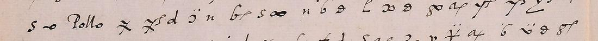

At a glanceExternal key matched · partial (83% of the words sure in the project’s reading; 90% in WAINUT’s second reading)
- The letters
- Charles V to Ferrante Gonzaga, governor of Milan, signed Carlos and countersigned Vargas. The main one is dated Brussels, 14 November 1549, with about 110 lines of signs. Four shorter passages come from 13 May, 30 September, 20 November and 23 December 1549. Since 14 November 2026 the entry also holds Prince Philip’s letters to Gonzaga in the same cipher (1546–1553).
- Where
- Biblioteca Estense Universitaria, Modena, Autografoteca Campori, Lettera K, Karl V, sfasc. IV cc. 60-63 and siblings; Lettera F, Felipe II, sfasc. I and II. Not on DECODE, by a search of the DECODE list on the names (Estense catalogue entries 1560 and 1561).
- The cipher
- The Imperial Cipher of 1544–1554: the shape of a sign gives the consonant and a mark gives the vowel. Clear words stand in the text as code words.
- How it was deciphered
- Twice and, by the two records, apart. The project used the key as reconstructed by Bertomeu Masiá and pictured by Tomokiyo, extended by hand. WAINUT rebuilt a table from the decipherments of the time on Prince Philip’s letters, froze it, and read the same letter with it. The 14 November letter has no decipherment of its own.
- How far
- Sure words only: 837 of 1,007 tokens (83%) in the project’s reading, 817 of 910 words (90%) in WAINUT’s. The two transcriptions give the same value at 2,312 of 2,523 aligned signs (92%).
- What it says
- Making terms with Ottavio would bring little and could mean war with the Church. “Nunca havemos querido emprender” anything there by way of war. Gonzaga may act only in two named cases, and then with dissimulation.
- Still open
- 23 places where the two readings differ on a sure word; three code words; the stretches of the project’s reading that do not form words; three of Philip’s letters. No person has checked a passage against the image.
01 The letters
The Estense holds 151 letters from Charles V to Ferrante Gonzaga, most in clear. Nine were flagged as partly in cipher. Five use the sign cipher treated here, and each of those carries its cipher as passages inside a clear letter, except that the 14 November letter is almost solid cipher from the middle of c. 60r to the top of c. 62r. It ends “Dat. en Bruselas a xiiij de Noviembre M.D.xlviiij”, with the signatures of Carlos and Vargas on c. 62v.
The numeric letters of 15 July 1549 and 11 August 1542 and the letter of 1 July 1552 use other ciphers, so they are not part of this page. The ninth, cc. 131–132, is a letter of the ambassador in France in another key; it has its own page, as the letter of 1542 has its own.
The same letters, and Prince Philip’s letters to Gonzaga in the same cipher, were worked on by WAINUT, a Dutch AI company, on the same two days (2 and 3 November 2026) and, by the two records, apart. Brice Dudout pointed out that the two pieces of work concern the same Campori letters (issues #615 and #618), and since 14 November 2026 they are one entry: one key, two readings. Sections 02 to 04 give the project’s reading; section 05 gives WAINUT’s and the comparison.
02 What the Emperor says
Ottavio Farnese had been trying to recover Parma from his grandfather the Pope, and Gonzaga had reported a chance to make terms with him. Charles answers in cipher. The whole text is under Full texts below; these are the parts that run, in the project’s reading. The code words are left as written: Pollo is the Pope and nerp France.
Ottavio is a poor foundation. He has no money, being “en desgracia del Pollo”, and nowhere to draw troops from except the lands of the Church. To carry the matter forward Gonzaga would have to declare himself, which would be “romper la guerra contra la yglesia”, since “Su Santidad” holds Parma in the Church’s name, not the Farnese house’s.
The policy. “En Parma y en Plazencia nunca havemos querido emprender hasta qui ninguna cosa por via de guerra avierta.” If terms were made and the Pollo died, “se vernia luego a las manos”, and Charles would find himself “embaraçado y cargado por ambas partes”.
The fear. Terms might give the Pollo an excuse “passar adelante mas desvergonçadamente en dar Parma a Horacio”, making “una fro(?)ntera” against the Emperor (one sign of the word is doubtful).
The order. “No deveys en ninguna manera entrar por el presente en capitulacion con el dicho Ottavio.” Two exceptions follow. If Camillo Orsini tries a stroke “en sede vacante o en vida del Pollo”, Gonzaga may do what seems best, provided it is justified and has a safe way out. If Orazio or someone else enters Parma, for instance by an agreement between the Pollo and “el rey de nerp”, Gonzaga is to find a way to make himself master of the city, “con la desteridad y dissymulacion” that Charles trusts him to use. Otherwise, while “Parma [is] en manos del Pollo”, nothing is to be undertaken against it.

The Pollo is the Pope. The letter never says so. But c. 60v has “teniendo Su Santidad como agora tiene a Parma” where c. 62r has “estando Parma en manos del Pollo”, and c. 61v speaks of “sede vacante o en vida del Pollo”. Paul III died on 10 November 1549, and the letter of 14 November was clearly written before the news came. By 20 November the Emperor writes in clear of “este tiempo de Sede vacante”. A list of this cipher’s code words drawn up at Simancas in 1866 from ciphered letters of 1545 in Estado, Flandes, leg. 501 (Archivo General de Simancas, D/00203 no. 243; pointed out by Brice Dudout, issue #618, after Satoshi Tomokiyo) has pollo for Papa, and a letter of 1552 that Tomokiyo assigns to the same cipher is deciphered that way in its margin (no sign of that letter is transcribed here).
03 The other passages
- 20 November 1549 (cc. 64r–64v): five short passages, written after the news. “En ninguna manera se mueva ninguna cosa en Parma”, no war on the Church, and no attack on the Farnese state at such a time. The clerk’s margin notes give the same sense, and they were in view. The last two lines of c. 64r are not deciphered.
- 30 September 1549 (c. 50r): someone goes “con fin de tractar al prior de lombardia”, castellan of the castle, so as to throw him out and put in Mons. de Brissac. A clear margin note summarises it, and it was also in view.
- 13 May 1549 (c. 30r): where to find money and materials for a work, with no show of the intention. Slip c. 29 is the decipherment of the time.
- 23 December 1549 (c. 76r): on Nice and the Prior of Lombardy, sent to live in the castle. c. 77 is the decipherment of the time.
04 Method
The slip on c. 29 gave the first values. Tomokiyo’s Cryptiana then identified the system and pictures Bertomeu Masiá’s reconstruction of the key, which shows the rule: base shape for the consonant, mark for the vowel. The key image is small and does not cover every form, so the sign table was extended from the letters themselves.
The cipher was cropped into numbered panels at about seven times size, and each sign was named and given a value in a sign file, line by line. The main session did c. 60r block 1 and c. 60v. Subagents with the same brief did c. 60r block 2, c. 61r, c. 61v, c. 62r and the short passages. In all there are 3,032 signs: 2,780 with a value, 128 doubtful, 51 taken as nulls, 25 clear words and 48 unread.
The text is continuous across the pages, which is one check on it: c. 60r ends “romper la guerra contra la yglesia o” and c. 60v goes on “no seria … que romper la guerra con[tra] la yglesia” (the project’s sign file has an unread sign after “con”, settled as “contra” in section 05; WAINUT takes the last line of c. 60r as a repeat struck by the clerk); c. 60v ends “lo qual no con” and c. 61r begins “vergia”.
The statistical test (docs/_validate.py, order-4 model of Golden Age Spanish) passes. The reading scores −1.96 per letter, against −3.99 for random keys (9.5 sd) and −2.56 for keys annealed onto shuffled signs (45.5 sd), and an annealer on the real text reaches only −2.34.
05 A second, independent reading, and the comparison
WAINUT’s work. WAINUT transcribed twelve letters of Charles V and Prince Philip to Gonzaga from the Estense images. Its table was not taken from a printed key: it was built by setting Philip’s letter of 8 March 1549 (c. 12r) against the decipherment of the time on c. 14r, extended on the letter of 23 May 1547 against c. 11, and then frozen. With that table, extended on the letter itself, WAINUT read Charles’s letter of 14 November 1549. That the table was frozen before the Charles letters were opened is by WAINUT’s own record; that the two readings were made apart is by the two records (the files and notes of each side), not stamped from outside; neither folder cited the other before 14 November 2026.
Its tests, with their results. No pass bar was declared beforehand, so these are held-out tests against 200 shuffled tables, not pre-registered ones.
| held-out text | reader | letters in order | in runs of 4+ | shuffled tables, at most | result |
|---|---|---|---|---|---|
| Philip, 23 May 1547, c. 9v lines 11–16 | not blind | 0.888 | 0.857 | 0.418 / 0.239 | above the controls |
| Charles, 13 May 1549 | not blind | 0.978 | 0.932 | 0.431 / 0.374 | above the controls |
| Charles, 30 Sep 1549, 408 signs | blind: no table, no clear text | 0.728 | 0.595 | 0.420 / 0.532 | above the controls on both |
| Charles, 20 Nov 1549, 140 signs | blind | 0.652 | 0.323 | 0.519 / 0.355 | above on order; fails on runs of 4+ |
The two blind rows were rerun for this page and give the same figures; the other two were not rerun. WAINUT’s own second readers agree with its transcription of 14 November on 80.8% of 2,132 signs (a reader with no table) and differ on 39 of 425 signs (a reader with the table in view). By WAINUT’s own note the tests show that the table works on other letters; they do not measure the reading of 14 November.
The two readings side by side. The comparison was made on the files, by aligning the two texts; no image was opened for it. The project counts 2,536 signs in the letter and WAINUT 2,543. At 2,523 aligned places, 2,312 carry the same value (92%). Of the words, 725 are sure and the same in both readings. In 33 more both are sure and differ: 25 are close in their letters (spelling, division or one sign, among them ratificacion / gratificacion and hallarse / hallarnos) and 8 are unlike (de / no five times, con / contra, bien / si, hasta / hastaqui). The alignment is by similarity, so these are close figures, not exact ones. A further 77 are sure in one reading and stand with a mark of doubt in the other.
Of the 33 differences between sure words, 10 are settled and 23 are open. A difference was settled only where a decipherment of the time fixes the value, where the letters are the same and only the division differs, or where one reading’s own sign file decides it; none was settled on the sense alone.
| the project | WAINUT | verdict | why |
|---|---|---|---|
| ratificacion | gratificacion | gratificacion | the sign is gra in the decipherments of the time on Philip’s letters, and the project needs gra for the same shape in “desgracia” |
| a [.] tarde dar | a tratar de dar | tratar de | the same signs; the project had one unread and divided the words wrongly (not among the 33: the project had a sign unread) |
| que bien esta empresa | que si esta empresa | si | the sign is si in the project’s own “yglesia” |
| con la yglesia | contra la yglesia | contra | the project’s sign file has an unread sign there |
| consta re-estar; fines que; and four more (hasta qui, assi mismo, haver lo, sobre ello) | constara estar; fin es que; hastaqui, assimismo, hauer lo, sobrello | settled: the division | the same letters |
| Ottavio (9 times), remittimos (2) | Octauio, remictimos | open | one sign: tt in the key as pictured, ct in WAINUT’s table |
| de / no at five places | no / de | open | two similar signs exchanged; the sense favours the project at these five |
| hallarse | hallarnos | open | one sign; the first person is expected |
| de curar | procurar | open | one sign, de or pro; the sense favours WAINUT |
| apuntar, pretende, dezes, seguro | apontar, pretiende, dezis, segura | open | one vowel mark or one sign each |
| nombre | nonbre | open | spelling |
Where the project’s reading has sign values that do not form words, WAINUT’s mostly has words, some marked as repairs or proposals: “sostener y aprobar su derecho por mejor que el imperio”, “enflaquecer el derecho”, “es de creer que por pura imposibilidad”, “al cabo con su aguelo”, “con quien esta hecha la tregua”. Where WAINUT has a proposal or a hole, the project is sure at 25 places (“quedava”, “voluntad”, “sacar la gente”, “como desesperado”). These are the lines to reread on the image with both tables.
Code words. Values now carried into both readings: Pollo Papa, mus para, inta Su Santidad, em Franceses, gien vuestra, saa Duque, and nerp (WAINUT reads nep) Francia. mus, em and gien were already in WAINUT’s reading from its frozen table and entered the project’s from that table and the Simancas list; inta was corrected in both from the list (both had taken it for the Church); saa fills a hole in WAINUT’s. Six code words of WAINUT’s frozen table, learned from the decipherments of the time, have the same value on the Simancas list of 1866. So Orazio would be put into Parma “in the name of the French”, and Parma is to stay in the hands “of His Holiness”.
The count. One rule for both: a word counts only if it is sure. In the project’s reading a doubtful or unread sign, an open code word, or a run of sign values that forms no word makes a hole: 837 of 1,007 tokens (83%; 129 of the tokens are such sign values, so the share of words is somewhat higher). In WAINUT’s reading a repair, a proposal and a hole do not count: 817 of 910 words (90%). WAINUT’s own looser figure, with its marked repairs, is 864 of 910 (94.9%). The 93% this page carried before was the share of signs given a value, not of words. Neither reading reaches 95%, so the extent stays partial.
Prince Philip’s letters (Lettera F, Felipe II; all WAINUT’s work). Three passages are deciphered in part: 4 August 1548, c. 10r, on Genoa and Henry II’s descent into Italy (75 of 80 words sure); 24 November 1551, c. 28r, on Nice and Siena (56 of 66); 24 November 1551, c. 26r (75 of 91; a passage on the vicariate is unsafe). The letters of 8 March 1549 and 23 May 1547 have their decipherments of the time, and the table was built on them. Three more, of 25 June 1546, 14 March 1553 and one catalogued under 16 June 1563, have rough cipher transcriptions whose mechanical output forms no continuous reading. WAINUT also found that the letters of 30 September and 20 November 1549 carry a decipherment in the margin beside every cipher passage (seven and six by its reading file and the project’s notes; for 30 September WAINUT’s own files disagree, its status table and its file of the margins giving six), and that the letter catalogued 1563 opens “El Principe” and is addressed to Ferrante, who died in 1557, so it is earlier than 1556. Brice Dudout also pointed to two further letters of Philip in this cipher. Their cipher texts are not transcribed in full. The October letter is discussed below.
What news from Siena?
On 5 August 1552 soldiers left the citadel of Siena. Alessandro Sozzini, who kept a diary of events in the city, records that an envoy of Cosimo de’ Medici, duke of Florence, had asked the Sienese to let the men leave safely. In October Prince Philip was still asking for news of Siena. Writing from Monzón on 6 October to Ferrante Gonzaga, governor of Milan, Philip mentioned letters from Ambassador Figueroa dated 6 August. They enclosed copies of letters from Cosimo and from Prince Andrea Doria, then at the port of Livorno. Sozzini’s diary, pp. 87–88 · Philip’s dispatch, Modena, Autografoteca Campori, Lettera F, sfasc. I, cc. 32–34.
Philip had already ordered 20,000 escudos sent so that work on the castle could continue. Now he wanted to know what had actually happened in Siena. He asked Ferrante “si se hizo algun soccorro con los alemanes q[ue] el Prinçipe lleuaua en Liorno” (“whether any relief was given with the German troops the prince was bringing at Livorno”). Philip also wanted Ferrante’s own judgment and the orders his father, Emperor Charles V, had given. The reply Philip wanted was an account of events since those August letters. The order for money, c. 33r · Philip’s question, c. 33v.


The clue to this exchange was where the writing switched to cipher. On c. 32v Philip introduces Figueroa’s letters and their enclosures in ordinary Spanish before the clerk turns to cipher. On the next leaf, a separate sheet written in Spanish, the last paragraph of the recto repeats the ambassador’s date and the mention of enclosed copies, then names the duke and Doria. Philip’s questions continue on the verso. Brice Dudout had identified the dispatch. The earlier examination covered 32r and 34r. Andrew Beling’s AI agents connected the intervening sheet to the change of script. The sheet begins in mid-sentence and has no heading to tell us whether a clerk used a draft, the cipher or another copy. The earlier examination · The change of script, c. 32v.

Two AI readers independently agreed on 295 of 308 word positions on the Spanish sheet. Reading the cipher itself remains harder. In two lines beside the change of script, an existing table gave the consecutive letters demendoca where the Spanish sheet names Don Diego de Mendoça. The table gave usable values at 19 of 46 positions. Nine of 1,000 shuffled tables scored higher and one tied. The test added no verified words to the cipher reading. Spanish text with the disagreements marked · English rendering and the three cipher checks.
On c. 34r, two further lines gave conci and corroquepo, fifteen letters in manuscript order. The best of 1,000 shuffled tables gave ten. The accompanying sheet supplies the word boundaries. Three later comparisons on c. 32v fell short of their thresholds. Readings, controls and replay.
Another sheet in the Campori letters helps with a dispatch of 14 March 1553. Three pages of Spanish give six passages in order, beginning with the question of pay for troops in Piedmont. In the original the clerk switches to cipher after principalmente, “chiefly”. The Spanish sheet continues that sentence. The six matches help a reader follow the dispatch, though an independent test on its opening signs fell short of the agreed thresholds. March manuscript, cc. 35–40 · Spanish texts and comparisons.
06 What remains uncertain
- Not a controlled test. Every value was chosen with the sentence in view, knowing what would make Spanish. The statistical test speaks for the key as a whole, not for any one word. Only one line of the subagents’ work (c. 61v line 15) was checked against its crop, and no person has checked any. The comparison with the second reading is the first cross-check either has had, and it was made on the files, not on the image.
- Code words.
velaorbela, a place news comes from, is not on the Simancas list of 1866 (Rome is WAINUT’s proposal).et ud(Embajador de Inglaterra on the list) andtu(lea) give no sense where they stand. France isnecwith an end mark on the list,nerpin one reading andnepin the other: the sense is settled, the letters of the code word are not. Brice Dudout’s notes from his own study of the Simancas sheet (not checked here):etis among the nulls,tuis lea (doubtful, perhaps liga), andudis not on the sheet. - The 23 open differences between the two readings, listed in section 05. Each is one sign on an image that is open to anyone.
- Stretches that do not form sentences. c. 60v lines 7–8 and 23–27; c. 61r lines 4–5 and 16–18; c. 61v line 18 (“la pe gu l ro n”, where the second reading has “la tregua”). This is the project’s reading; the second reading has words at most of these places.
- Doubtful spellings left as the signs give them. “Hallarse” after “verniamos”; “arrordio” for acordio; “su rr esso” for suceso. Gamma is rr in the key but wants c here. “Plazencia” rests on an N-shaped sign taken as p from the words it occurs in.
- Signs with dots below. Most drop out inside a word (“car.gado”, “quisie.sse”), but some carry their plain value (c. 60r line 12), and the end of c. 64r gives no Spanish either way.
- People. The signs give Ursino and Horacio. Taking them as Camillo Orsini and Orazio Farnese is from general knowledge. “Dragut” for “Drigui” on c. 62r is a guess.
- Prior work. Bertomeu Masiá’s La guerra secreta de Carlos V contra el Papa (2009) studies this very affair and its ciphers, in Granvelle’s correspondence. It could not be read online, so these letters may already be in print there. A web search found no printed text of the 14 November letter, but the search was not exhaustive.
Full texts
The transcription and the decryption of every document on this page, so that the reading can be used and checked. Short files are shown here; all are in the repository.
14 Nov 1549, cc.60r-62r: the project's reading read in part
Charles V tells his governor of Milan not to make terms with Ottavio Farnese over Parma: Ottavio has no money or troops, and it would mean war with the Church, which holds Parma, and could drive the Pope to give it to Orazio Farnese. Gonzaga may act only in two cases, an Orsini stroke or Orazio's entry, and then with dissimulation.
Builds coherent sentences, but under the read bar of 95% of words read as sense (83% here); the holes are marked in the reading.
Transcription
# 14 Nov 1549, c.60r, first cipher block, by eye, no slip or margin note. line TAB sign-name TAB value. ? = unread, trailing ? = value doubtful. 1 loopg y 1 ys-2dots vi 1 j-2dots ni 1 S e 1 ap n 2 oo do 2 n a 2 dash-o l 2 Lambda-1dot pa 2 d r 2 tri-2dots ti 2 8f cu 2 six-1dot la 2 d r 2 xo de 2 six-1dot la 2 xo de 2 star te 2 d r 2 L-dots mi 2 j-1dot na 2 eight-2dots ci 2 aplus o 2 ap n 2 eight-o co 2 ap n 2 cslash que 3 cslash-dot que 3 v-1dot da 3 ys-1dot va 3 xo de 3 theta s 3 xo de 3 aplus-dots-below null? 3 n a 3 Lambda-p pu 3 ap n 3 tri-1dot ta 3 d r 3 loopg y 3 eight-1dot ca 3 Lambda-2dots pi 3 tri-p tu 3 six-1dot la 3 d r 3 eight-o co 3 theta-bar ne 3 dash-o l 4 Saa [Duque] 4 aplus o 4 plus tt 4 n a 4 ys-2dots vi 4 aplus o 4 yo so 4 m b 4 g-bar re 4 six-1dot la 4 S e 4 a m 4 star-x pre 4 y-1dot sa 4 xo de 4 Lambda-1dot pa 4 d r 4 L-dot ma 4 y-bar se 4 tri-o to 4 eight-1dot ca? 5 g-1dot ra 5 ap n 5 n a 5 cw-2dots qui 5 n a 5 dash-o l 5 op gu 5 j-1dot na 5 theta s 5 xo de 5 six-1dot la 5 theta s 5 eight-o co 5 ap n 5 y-2dots si 5 xo de 5 g-1dot ra 5 eight-2dots ci 5 aplus o 5 theta-bar ne 5 theta s 5 cslash que 5 y-o so 6 m b 6 f-bar re 6 L ll 6 aplus o 6 x-inf no 6 theta s 6 aplus o 6 Y-L c? 6 nine u 6 Gamma rr 6 S e 6 ap n 6 Lambda-1dot pa 6 g-1dot ra 6 xo de 6 theta s 6 Lambda-p pu 6 S e 6 theta s 6 ap-dots-below null? 6 n a 6 y-1dot sa? 6 clear ho 7 v-1dot da 7 d r 7 aplus o 7 theta s 7 n a 7 S e 7 ap n 7 star te 7 ap n 7 xo de 7 d r 7 x-p nu 7 S e 7 theta s 7 L-1dot tra 7 ring-stem i 7 ap n 7 star te 7 ap n 7 eight-2dots ci 7 aplus o 7 ap n 8 loopg y 8 ys-o vo 8 six-p lu 8 ap n 8 tri-1dot ta 8 v d
Transcription
# 14 Nov 1549, c.60r second cipher block, by eye with sign_table.tsv, context in view. line TAB sign-name TAB value. ? = unread, trailing ? = value doubtful. 1 tri-cross te 1 openj-2dots ni 1 S e 1 ap n 1 sideloop do 1 g-bar re 1 theta s 1 Lambda-bar pe 1 tri-o to 1 n a 1 dash-o l 1 Lambda-o po 1 eight-o co 1 n-p fu 1 ap n 1 x-curl-1dot da 1 L-bar me 1 ap n 1 tri-o to 1 cslash que 1 seven-bar se 2 Lambda-p pu 2 S e 2 x-stroke-o de 2 e-1dot ha 2 crossV-bar ze 2 d r 2 x-stroke-o de 2 six-1dot la 2 Lambda-bar pe 2 d r 2 y-o so 2 j-1dot na 2 x-stroke-o de 2 dash-o l 2 x-curl-2dots di 2 u c 2 e-oo ho 2 x-p-dots-below null? 2 x-curl-1dot-mark du? 2 cslash que 2 aplus o 2 plus tt 2 n a 3 ys-2dots vi 3 aplus o 3 Lambda-2dots pa? 3 g-1dot ra 3 nine u 3 j-1dot na 3 S e 3 a m 3 X-bar pre 3 y-1dot sa 3 eight-o co 3 L-o mo 3 six-1dot la 3 x-stroke-o de 3 Lambda-1dot pa 3 d r 3 L-1dot ma 3 n a 3 dash ss 3 ring-stem i 3 Lambda-o po 3 d r 3 six-o lo 3 cslash que 4 seven-bar se 4 tri-2dots ti 4 S e 4 theta-bar ne 4 eight-o co 4 x-curl no 4 eight-2dots ci 4 sideloop do 4 x-stroke-o de 4 L-tick ll 4 n a 4 loopg y 4 x-curl no 4 tri-cross te 4 theta-bar ne 4 d r 4 n-o-1dot-dots-below null? 4 n-o fo 4 d r 4 L-1dot ma 4 x-stroke-o de 4 e-1dot ha 4 ys-bar ve 4 d r 5 x-curl-2dots di 5 theta-bar ne 5 g-o ro 5 S e 5 theta s 5 tri-1dot ta 5 ap n 5 sideloop do 5 S e 5 ap n 5 x-stroke-o de 5 theta s 5 R-1dot gra 5 eight-2dots ci 5 n a 5 x-stroke-o de 5 dash-o l 5 clear Pollo 5 eight-o co 5 L-o mo 5 Lambda-o po 5 d r 6 cslash que 6 n a 6 nine-bar u 6 ap n 6 cslash que 6 x-curl no 6 six-bar le 6 n-1dot fa 6 dash-o l 6 tri-1dot ta 6 seven-bar se 6 ap-dots-below null? 6 x-curl no 6 six-1dot la 6 tri-2dots ti 6 S e 6 theta-bar ne 6 x-stroke-o de 6 sideloop do 6 ap n 6 x-stroke-o de 6 y-1dot sa 6 eight-1dot ca 6 d r 7 six-1dot la 7 dash-o-slash ge 7 ap n 7 tri-cross te 7 x-curl no 7 e-1dot ha 7 ys-2dots vi 7 S e 7 ap n 7 sideloop do 7 aplus-dots-below null? 7 n a 7 L ll 7 ring-stem i 7 aplus o 7 invT-1dot tra 7 theta s 7 tri-2dots ti 7 S e 7 Gamma rr 7 n a 7 theta s 8 eight-o co 8 ap n 8 ys-bar ve 8 crossV-2dots zi 8 j-1dot na 8 theta s 8 x-stroke-o de 8 sideloop do 8 ap n 8 x-stroke-o de 8 six-1dot la 8 Lambda-p pu 8 S e 8 x-curl-1dot da 8 e-1dot ha 8 ys-bar ve 8 d r 8 y-2dots si 8 x-curl no 8 six-1dot la 8 theta s 9 x-stroke-o de 9 six-1dot la 9 loopg y 9 o-dash g 9 six-bar le 9 y-2dots si 9 n a 9 x-stroke-o de 9 clear et 9 clear ud 9 loopg y 9 clear tu 9 loopg y 9 cslash que 9 x-stroke-o de 9 theta s 9 tri-1dot ta 9 L-loop ma? 9 theta-bar ne 9 g-1dot ra 9 seven-bar se 9 eight r? 9 n a 9 x-stroke-o de 9 theta s 10 n-o fo 10 d r 10 eight-1dot ca 10 infinity do? 10 Lambda-1dot pa 10 g-1dot ra 10 L ll 10 S e 10 ys-1dot va 10 d r 10 six-1dot la 10 eight-o co 10 y-1dot sa 10 n a 10 x-stroke-o de 10 dash-o-dots-below null? 10 n-dots-below null? 10 six-1dot la 10 ap n 10 tri-cross te 10 ring-stem i 10 ap n 10 tri-cross te 10 d r 11 ys-bar ve 11 theta-bar-dots-below null? 11 j-2dots ni 11 d r 11 loopg y 11 x-stroke-o de 11 u c 11 six-1dot la 11 no-letters r 11 n a 11 d r 11 aplus o 11 theta s 11 x-stroke-o de 11 x-p nu 11 S e 11 theta s 11 invT-1dot tra 11 Lambda-1dot pa 11 d r 11 tri-cross te 11 six-o lo 11 cw-1dot qua 11 dash-o l 12 clear & 12 L-o-dots-below null? 12 cslash-dots-below null? 12 g-o ro 12 a m 12 Lambda-bar-dots-below pe 12 d r 12 six-1dot la 12 g-o-dots-below null? 12 S-dots-below null? 12 op gu 12 omega-dots-below e 12 Gamma rr 12 n a 12 eight-o co 12 ap n 12 invT-1dot tra 12 six-1dot la 12 loopg y 12 o-dash-dots-below g 12 six-bar le 12 y-2dots si 12 n a 12 aplus o
Transcription
# 14 Nov 1549, c.60v, by eye with sign_table.tsv, context in view. line TAB sign-name TAB value. ? = unread, trailing ? = value doubtful. 1 x-curl no 1 y-bar se 1 g-2dots ri 1 n a 1 aplus o? 1 L-o mo? 1 cslash que 1 g-o ro 1 a m 1 Lambda-bar pe 1 d r 1 six-1dot la 1 op gu 1 S e 1 Gamma rr 1 n a 1 eight-o co 1 ap n 1 L ? 1 six-1dot la 1 loopg y 1 dash-o g 1 six-rtop le 1 seven-2dots si 1 n a 2 star te 2 j-2dots ni 2 S e 2 ap n 2 sideloop do 2 S-u-dots-below Su 2 y-p ? 2 seven-1dot sa? 2 ap n 2 tri-2dots ti 2 sideloop-1dot da 2 sideloop d 2 eight-o co 2 L-o mo 2 n a 2 ring-inf go 2 g-1dot ra 2 tri-2dots ti 2 S e 2 theta-bar ne 2 n a 2 Lambda-1dot pa 2 d r 2 L-dot ma 3 S e 3 ap n 3 theta-bar-dots-below ? 3 x-curl no 3 a m 3 seven b 3 g-bar re 3 xo de 3 L ll 3 n a 3 loopg y 3 x-curl no 3 xo de 3 six-1dot la 3 eight-1dot ca 3 y-1dot sa 3 n-bar fe 3 d r 3 theta-bar-2dots ne? 3 seven-tail ? 3 loopg ? 3 ring-stem ? 3 seven ? 4 xo de 4 g-1dot ra? 4 ap n 4 sideloop do 4 n a 4 dash ss 4 ring-stem i 4 L-2dots mi 4 theta s 4 L-o mo 4 cslash que 4 seven-2dots bi 4 S e 4 theta s 4 tri-1dot ta 4 S e 4 a m 4 star-x pre 4 y-1dot sa 4 y-bar se 4 e-hook ? 4 cross-1dot ? 4 S e 4 ap n 5 n-1dot fa 5 ys-o vo 5 d r 5 xo de 5 aplus o 5 tt-cross tt 5 n a 5 ys-2dots vi 5 aplus o 5 eight-o co 5 L-o mo 5 S e 5 theta s 5 tri-1dot ta 5 n a 5 six-1dot la 5 g-o ro? 5 cslash que 5 y-bar se 5 e-1dot ha 5 g-1dot ra 5 eight-1dot ca 5 Lambda-2side pi 6 tri-p tu 6 six-1dot la 6 ap n 6 sideloop do 6 eight-o co 6 theta-bar ne 6 dash-o l 6 Lambda-1dot pa 6 g-bar re 6 eight-bar ce 6 g-2dots ri 6 n a 6 cslash que 6 y-bar se 6 cw-2dots qui 6 seven-2dots si 6 S e 6 y-bar-dots-below null? 6 dash ss 6 S e 6 seven-o ? 6 nine-dot do? 6 tri-bar-p te? 6 theta-bar ne 6 d r 7 loopg y 7 n a 7 x-curl no 7 seven-1dot sa? 7 d r 7 ys ? 7 x-stroke-o de? 7 g-bar re 7 u c 7 e-oo ho 7 Lambda-o po 7 d r 7 L-bar me 7 three-o jo 7 d r 7 cslash que 7 S e 7 dash-o l 7 d-top ? 7 a m 7 Lambda-bar pe 7 g-1dot ra? 7 aplus o 7 seven-2dots bi 8 S e 8 ap n 8 sideloop d 8 n a 8 seven-2dots si? 8 cslash que 8 tri-bar te 8 openj-2dots ni 8 S e 8 ap n 8 sideloop-o do 8 x-curl no 8 theta s 8 S e 8 theta-tick s? 8 tri-bar te 8 loopg y 8 g-bar-dots-below null? 8 op gu 8 n a 8 dash-o l 8 L-bar me 8 ap n 8 tri-bar te 9 S e 9 ap n 9 Lambda-side pa 9 d r 9 L-1dot ma 9 loopg y 9 S e 9 ap n 9 N p? 9 six-1dot la 9 seven-bar ze? 9 ap n 9 eight-2dots ci 9 n a 9 x-p nu 9 ap n 9 eight-1dot ca 9 e-1dot ha 9 ys-bar ve 9 L-o mo 9 theta s 9 cslash que 9 g-2dots ri 9 sideloop-o do 10 S e 10 a m 10 X-bar pre 10 ap n 10 x-stroke-o de 10 d r 10 e-1dot ha 10 theta s 10 tri-1dot ta 10 cw-2dots qui 10 openj-2dots ni 10 ap n 10 op gu 10 openj-1dot na 10 eight-o co 10 y-1dot sa 10 Lambda-o po 10 d r 10 ys-2dots vi 10 n a 10 x-stroke-o de 10 g-o-dots-below null? 10 op gu 10 S e 11 gamma-thick rr 11 n a 11 six a 11 ys-2dots-dots-below vi 11 S e 11 d r 11 tri-1dot ta 11 S e 11 theta s 11 tri-1dot ta 11 n a 11 six-1dot la 11 g-oo ro? 11 cslash que 11 y-bar se 11 ys-bar ve 11 d r 11 openj-1dot na 11 n a 11 S e 11 ap n 11 four ? 11 six-1dot la 11 cslash que 11 g-o-marks ? 11 eight-bar-1dot ca 11 d r 12 S e 12 dash-o l 12 x-stroke-o de 12 g-bar re 12 u c 12 e-oo ho 12 cslash que 12 y-bar se 12 X-bar pre 12 tri-2dots ti 12 S e 12 ap n 12 x-stroke-o de 12 x-p nu 12 S e 12 theta s 12 invT-side tra? 12 Lambda-side pa 12 d r 12 tri-bar te 12 n a 12 L-tick ll? 12 S e 12 ap n 12 x-stroke-o de 13 cslash que 13 eight-1dot ca 13 Lambda-2side pi 13 tri-p tu 13 six-1dot la 13 ap n 13 sideloop do 13 y-bar se 13 eight-o co 13 theta-bar ne 13 dash-o l 13 x-o-2dots di 13 u c 13 e-oo ho 13 aplus o 13 tt-cross tt 13 n a 13 ys-2dots vi 13 aplus o 13 loopg y 13 L-p mu 13 g-2dots ri 13 S e 13 ap n 13 sideloop do 14 S e 14 dash-o l 14 clear Pollo 14 y-bar se 14 ys-bar ve? 14 d r 14 openj-2dots ni 14 n a 14 six-p lu 14 S e 14 ring-inf go 14 n a 14 six-1dot la 14 theta-tick s? 14 L-1dot ma 14 x-curl no 14 theta s 14 eight-oo co 14 ap n 14 ys-o vo 14 ys ? 14 y-bar se 14 S e 14 dash ss 14 aplus o 14 d r 15 seven-2dots si 15 ap n 15 Lambda-o po 15 x-stroke-o de 15 d r 15 S e 15 q-bar s? 15 eight-p cu 15 y-1dot sa 15 d r 15 x-stroke-o de 15 L-bar me 15 tri-bar te 15 d r 15 S e 15 ap n 15 three-loop ? 15 loopg y 15 tt-cross-1dot ? 15 aplus o 15 six-1dot la 15 x-curl-2dots di 15 theta-tick s 15 eight-p cu 16 dash ss 16 ring-stem i 16 aplus o 16 ap n 16 x-stroke-o de 16 dash-o l 16 x-stroke-o de 16 g-bar re 16 u c 16 e-oo ho 16 X-bar pre 16 tri-bar te 16 ap n 16 x-curl-2dots di 16 sideloop do 16 Lambda-o po 16 d r 16 six-1dot la 16 theta-tick s 16 Lambda-1dot pa 16 d r 16 tri-bar te 16 theta-tick s 16 loopg-bar y? 17 ys-bar ve 17 openj-2dots ni 17 S e 17 ap n 17 sideloop do 17 y-bar se 17 n a 17 dash-o l 17 long-s-dots-below null? 17 n-2dots fi 17 ap n 17 n a 17 L-side ? 17 tri-1dot ta 17 d r 17 x-stroke-o de 17 x-curl-1dot da 17 d r 17 g-bar re 17 eight-oo co 17 a m 17 Lambda-bar pe 17 ap n 17 y-1dot-bar sa 18 n a 18 six-1dot la 18 loopg y 18 o-dash g 18 six-bar le 18 seven-2dots si 18 n a 18 S e 18 ap n 18 eight-1dot ca 18 y-o so 18 cslash que 18 y-bar se 18 e-1dot ha 18 L-tick ll 18 n a 18 dash ss 18 S e 18 y-bar se 18 a-top ? 18 ys ? 18 omega-dot ? 18 S e 18 dash-o l 18 x-stroke-o de 18 g-bar re 19 u c 19 e-oo ho 19 x-stroke-o de 19 six-1dot la 19 theta-tick s 19 x-curl-2dots di 19 u c 19 e-1dot ha 19 theta-tick s 19 tri-2dots ti 19 S e 19 gamma-thick rr 19 n a 19 theta-tick s 19 S e 19 dash-o l 19 dash-dots-below ? 19 sideloop-1dot du? 19 cslash que 19 X-bar pre 19 tri-bar te 19 ap n 19 x-stroke-o de 19 g-2dots ri 19 n a 20 Lambda-o po 20 d r 20 aplus o 20 L-side tra? 20 Lambda-side pa 20 d r 20 tri-bar te 20 R-1dot ra 20 tri-2dots ti 20 n-2dots fi 20 eight-1dot ca 20 eight-2dots ci 20 aplus o 20 ap n 20 Lambda-o po 20 d r 20 g-1dot ra 20 crossV-o zo 20 ap n 20 x-stroke-o de 20 six-o lo 20 eight-1dot ca 21 Lambda-2side pi 21 tri-p tu 21 six-1dot la 21 sideloop do 21 eight-o co 21 theta-bar ne 21 dash-o l 21 Lambda-o po 21 d r 21 sideloop do 21 ap n 21 x-stroke-o de 21 ys-bar ve 21 d r 21 openj-2dots ni 21 n a 21 L-o mo 21 theta-tick s 21 n a 21 e-2dots ha? 21 L-tick ll 21 n a 21 d r 22 theta-tick s 22 S e 22 a m 22 seven-1dot ba 22 g-1dot ra 22 eight-1dot ca 22 sideloop do 22 loopg y 22 eight-long-1dot ca? 22 d r 22 g-o-dots-side null? 22 ring-1dot ga 22 sideloop do 22 Lambda-o po 22 d r 22 n a 22 a m 22 seven-1dot ba 22 theta-tick s 22 Lambda-side pa 22 d r 22 tri-bar te 22 theta-tick s 22 crescent ? 23 loopg y 23 Lambda-o po 23 d r 23 cslash que 23 n-2dots fi 23 openj-1dot na 23 dash-o l 23 L-bar me 23 ap n 23 tri-bar te 23 x-stroke-o de 23 L-1dot ma? 23 theta s 23 x-stroke-o de 23 six-o lo 23 cslash que 23 n a 23 gamma-thick rr 23 d-o ? 23 j-1dot ? 23 y-bar se 23 eight-oo co 23 ap n 23 seven-2dots si 24 x-stroke-o de 24 g-1dot ra 24 x-stroke-o de 24 dash-o l 24 Lambda-o po 24 eight-oo co 24 n-p fu 24 ap n 24 x-stroke-o de 24 L-bar me 24 ap n 24 tri-o to 24 c-G que? 24 y-bar se 24 Lambda-p pu 24 S e 24 x-stroke-o de 24 g-1dot ra? 24 V-bar pe? 24 d r 24 x-stroke-o de 24 dash-o l 25 x-curl-2dots di 25 u c 25 e-oo ho 25 sideloop-1dot du? 25 cslash que 25 aplus o 25 tt-cross tt 25 n a 25 ys-2dots vi 25 aplus o 25 S e 25 theta s 25 x-stroke-o de 25 u c 25 ring-bar ? 25 S e 25 d r 25 cslash que 25 Lambda-o po 25 d r 25 Lambda-o-dark ? 25 e-1dot ha 25 d-o ? 25 a m 25 Lambda-o po 26 seven-2dots ? 26 seven ? 26 six-1dot la 26 x-curl-1dot da 26 x-curl d? 26 y-bar se 26 e-1dot ha 26 ys-dots-below null? 26 nine u 26 g-1dot ra 26 x-stroke-o de 26 ys-1dot-dots-below null? 26 ys-bar ve 26 openj-2dots ni 26 d r 26 n a 26 eight-oo co 26 ap n 26 g-o-bar ce? 26 d r 26 tri-bar te? 26 d r 26 six a 26 dash-o l 27 eight-1dot ca 27 o-seven ? 27 eight-oo co 27 ap n 27 ys ? 27 n a 27 hook-big ? 27 S e 27 six-o lo 27 seven-2dots bi 27 S e 27 ap n 27 x-p nu 27 S e 27 theta s 27 L-o tro? 27 x-curl no 27 ap n 27 seven b 27 g-bar re 27 x-stroke-o de 27 y-bar se 28 tri-o to 28 L-foot ? 28 dash ss 28 S e 28 six-1dot la 28 S e 28 ap n 28 loopg-dots null? 28 X-bar ? 28 seven-1dot ba? 28 six a 28 six-1dot la 28 x-stroke-o de 28 theta s 28 eight-p cu 28 seven-2dots bi 28 S e 28 d r 28 tri-1dot ta 28 six-o lo 28 cw-1dot qua 28 dash-o l 28 x-curl no 28 eight-oo co 28 ap n
Transcription
# 14 Nov 1549, c.61r, by eye with sign_table.tsv, context in view. line TAB sign-name TAB value. ? = unread, trailing ? = value doubtful. 1 ys-bar ve 1 d r 1 ring-2dots gi 1 n a 1 Lambda-o po 1 d r 1 six-o lo 1 theta s 1 g-bar re 1 theta s 1 Lambda-bar pe 1 tri-o to 1 theta s 1 cslash que 1 y-2dots si 1 S e 1 a m 1 L-dots-below null? 1 X-bar pre 1 y-bar se 1 e-1dot ha 1 ap n 1 n a 2 Lambda-p pu 2 ap n 2 tri-1dot ta 2 inf-closed do? 2 x-curl no 2 ys-bar ve 2 S e 2 L-o mo 2 theta s 2 cslash que 2 y-bar se 2 n a 2 eight-o co 2 ap n 2 ys-bar ve 2 openj-1dot ni? 2 S e 2 ap n 2 tri-bar te 2 S e 2 ap n 2 invT-1dot tra 2 d r 3 Lambda-o po 3 d r 3 n a 3 ring-inf go 3 g-1dot ra 3 S e 3 ap n 3 eight-1dot ca 3 Lambda-2side pi 3 tri-p tu 3 six-1dot la 3 eight-2dots ci 3 aplus o 3 ap n 3 eight-o co 3 theta-bar ne 3 dash-o l 3 n a 3 dash ss 3 loopg y 3 Lambda-o po 3 no-letters r 3 S e 3 dash-o l 4 Lambda-o po 4 eight-o co 4 e-hook-o-p fru? 4 tri-o to 4 cslash que 4 x-stroke-o de 4 L-tick ll 4 aplus o 4 y-bar se 4 y-1dot sa 4 eight-1dot ca 4 g-2dots ri 4 n a 4 eight-o co 4 L-o mo 4 Lambda-o po 4 d r 4 six-1dot la 4 a-dots-below ? 4 c-hook-dots-below ? 4 aplus o 4 Gamma rr? 4 six a 5 y-2dots si 5 aplus o 5 ap n 5 cslash que 5 x-stroke-o de 5 L-dots-below null? 5 L-tick ll 5 aplus o 5 Lambda-o po 5 sideloop-bare d 5 g-2dots ri 5 n a 5 tri-o to 5 L-1dot ma 5 d r 5 S e 5 dash-o l 5 clear Pollo 5 clear mus 6 Lambda-1dot pa 6 dash ss 6 six a 6 d r 6 n a 6 x-stroke-o de 6 six-1dot la 6 ap n 6 tri-bar te 6 L-1dot ma 6 theta s 6 x-stroke-o de 6 theta s 6 ys-bar ve 6 d r 6 ring-inf go 6 ap n 6 eight-1dot ca 6 x-curl-1dot da 6 L-bar me 6 ap n 6 tri-bar te 7 S e 7 ap n 7 sideloop-bare-1dot da 7 d r 7 Lambda-1dot pa 7 d r 7 L-1dot ma 7 n a 7 e-oo ho 7 g-1dot ra 7 eight-2dots ci 7 aplus o 7 eight-o co 7 L-o mo 7 x-stroke-o de 7 y-bar se 7 theta s 7 Lambda-bar pe 7 g-1dot ra 7 sideloop do 7 loopg y 7 L-bar me 7 stem-v-dots-below null? 8 tri-bar te 8 d r 8 six-bar le 8 x-stroke-o de 8 ap n 8 invT-o tro 8 S e 8 ap n 8 x-curl no 8 ap n 8 seven b 8 g-bar re 8 x-stroke-o de 8 clear em 8 clear mus 8 e-1dot ha 8 crossV-bar ze 8 d r 8 x-curl no 8 theta s 8 six a 8 L ll 8 ring-stem i 9 nine u 9 openj-1dot na 9 e-oo fro? 9 ap n 9 tri-bar te 9 g-1dot ra 9 eight-o co 9 L-o mo 9 y-2dots si 9 S e 9 a m 9 X-bar pre 9 y-bar se 9 e-2dots ha? 9 y-o so 9 theta s 9 Lambda-bar pe 9 u c 9 e-1dot ha 9 sideloop do 9 loopg y 9 S e 9 L-tick ll 9 aplus o 9 theta s 10 e-1dot ha 10 ap n 10 sideloop-bare-2dots di 10 u c 10 e-oo ho 10 S e 10 ap n 10 clear vela 10 n a 10 dash-o l 10 op gu 10 openj-1dot na 10 theta s 10 ys-1dot-dots-below null? 10 ys-bar ve 10 crossV-bar ze 10 theta s 10 x-stroke-o de 10 L-1dot ma 10 theta s 10 x-stroke-o de 10 dash-o l 11 sideloop-bare-1dot da 11 y-over-L-bar ñ? 11 aplus o 11 cslash que 11 e-1dot ha 11 g-2dots ri 11 n a 11 S e 11 dash-o l 11 sideloop-bare-2dots di 11 u c 11 e-oo ho 11 sideloop-tall-mark du 11 cslash que 11 aplus o 11 tt-cross tt 11 n a 11 ys-2dots vi 11 aplus o 11 n-2dots fi 11 op gu 11 g-1dot ra? 11 ap n 12 sideloop do 12 y-bar se 12 six-bar le 12 cslash que 12 S e 12 ap n 12 n-2dots fi 12 ap n 12 x-curl no 12 e-1dot ha 12 ys-2dots vi 12 six a 12 L-o mo 12 theta s 12 x-stroke-o de 12 n-1dot fa 12 dash-o l 12 tri-1dot ta 12 d r 12 six a 12 openj-p nu 12 S e 12 theta s 13 invT-o tro 13 theta s 13 openj-2dots ni 13 S e 13 tri-o to 13 theta s 13 n a 13 six-o lo 13 L-bar me 13 x-curl no 13 theta s 13 x-stroke-o de 13 theta s 13 Lambda-p pu 13 S e 13 theta s 13 x-stroke-o de 13 ys-bar ve 13 theta s 13 sideloop-bare-2dots di 13 n a 13 theta s 13 crescent ) 14 Lambda-o po 14 d r 14 six-o lo 14 cw-1dot qua 14 dash-o l 14 tri-o to 14 sideloop do 14 x-stroke-o de 14 theta s 14 Lambda-p pu 14 S e 14 theta s 14 x-stroke-o de 14 e-1dot ha 14 ys-bar ve 14 d r 14 six-o lo 14 seven-2dots bi 14 S e 14 ap n 14 S e 14 q-bar s 14 n a 15 L-2dots mi 15 openj-1dot na 15 sideloop do 15 x-curl no 15 invT-1dot tra 15 tri-1dot ta 15 ap n 15 inf-closed do? 15 x-stroke-o de 15 dash-o l 15 n a 15 eight-o co 15 d r 15 sideloop-bare-2dots di 15 aplus o 15 x-stroke-o de 15 dash-o l 15 Lambda-1dot pa 15 d r 15 tri-2dots ti 15 eight-p cu 15 six-1dot la 15 d r 16 x-stroke-o de 16 S e 16 ap n 16 invT-bar tre 16 ap-dots-below null? 16 ys-o vo 16 theta s 16 loopg y 16 aplus o 16 tt-cross tt 16 six a 16 ys-2dots vi 16 aplus o 16 S e 16 dash-o l 16 cw-1dot qua 16 dash-o l 16 eight-2dots ci 16 S e 16 d r 16 tri ta? 16 L-bar me 16 ap n 17 tri-bar te 17 omega e 17 ap n 17 inf-dots-below do? 17 sideloop-bare d? 17 y-bar se 17 Lambda-p pu 17 S e 17 sideloop-bare-1dot da 17 e-1dot ha 17 crossV-bar ze 17 d r 17 eight-o co 17 ap n 17 clear gien 17 y-1dot sa 17 tri-2dots ti 17 theta s 17 cross-t ff 17 n a 17 eight-2dots ci 18 aplus o 18 ap n 18 x-curl no 18 Lambda-o po 18 x-stroke-o de 18 L-o mo 18 theta s 18 x-stroke-o de 18 h-form a? 18 d r 18 x-stroke-o de 18 six a? 18 Lambda-o po? 18 X-o pro 18 seven-1dot ba 18 d r 18 six-bar le 18 x-curl no 18 theta s 18 e-1dot ha 18 Lambda-1dot pa 19 g-bar re 19 eight-2dots ci 19 sideloop do 19 cslash que 19 S e 19 ap n 19 six-o lo 19 x-stroke-o de 19 L-1dot ma 19 theta s 19 x-curl no 19 x-stroke-o de 19 ys-bar ve 19 loopg y 19 theta s 19 S e 19 ap n 19 openj-2dots ni 19 ap n 19 op gu 19 openj-1dot na 19 L-1dot ma 20 theta-bar ne 20 g-1dot ra 20 S e 20 ap n 20 invT-1dot tra 20 d r 20 Lambda-o po 20 d r 20 S e 20 dash-o l 20 X-bar pre 20 y-bar se 20 ap n 20 tri-bar te 20 S e 20 ap n 20 eight-1dot ca 20 Lambda-2side pi 20 tri-p tu 20 six-1dot la 20 eight-2dots ci 20 aplus o 20 ap n 21 eight-o co 21 theta-bar ne 21 dash-o l 21 sideloop-bare-2dots di 21 u c 21 e-oo ho 21 aplus o 21 tt-cross tt 21 n a 21 ys-2dots vi 21 aplus o 21 loopg y 21 six a 21 dash ss 21 loopg y 21 aplus o 21 theta s 21 six-o lo 21 S e 21 n a? 21 eight-1dot ca 21 d r 21 ring-1dot ga 21 L-o mo 21 theta s 22 eight-o co 22 ap n 22 tri-o to 22 sideloop-bare-1dot da 22 S e 22 cross-t ff 22 d r? 22 eight-1dot ca 22 eight-2dots ci 22 n a 22 y-2dots si 22 x-curl no 22 cslash que 22 tri-bar te 22 ap n 22 ring-1dot ga 22 loopg y 22 theta s 22 L-p mu 22 loopg y 22 R-1dot ra? 22 ap n 23 n a 23 sideloop-bare d 23 ys-bar ve 23 d r 23 tri-bar te 23 ap n 23 eight-2dots ci 23 n a 23 x-stroke-o de 23 S e 23 ap n 23 tri-bar te 23 ap n 23 x-stroke-o de 23 d r 23 S e 23 dash-o l 23 y-p su 23 Gamma rr? 23 S e 23 dash ss 23 aplus o 23 cslash que 24 tri-bar te 24 ap n 24 sideloop-bare-1dot da 24 g-1dot ra 24 ap n 24 S e 24 theta s 24 tri-1dot ta 24 theta s 24 sideloop-bare-2dots di 24 cross-t ff 24 S e 24 g-bar re 24 ap n 24 eight-2dots ci 24 six a 24 theta s 24 clear mus 24 n a 24 ys-2dots vi 24 y-1dot sa 24 d r 24 x-curl no 24 theta s 25 x-stroke-o de 25 tri-o to 25 sideloop do 25 loopg y 25 L-2side mi? 25 g-1dot ra 25 d r 25 y-2dots si 25 S e 25 dash-o l 25 sideloop-bare-2dots di 25 u c 25 e-oo ho 25 sideloop-tall-mark du 25 cslash que 25 Lambda-o po 25 d r 25 cw-2dots qui 25 S e 25 d r 26 ys-2dots vi 26 n a 26 tri-bar te 26 d r 26 openj-1dot na 26 aplus o 26 invT-1dot tra 26 L-1dot ma 26 theta s 26 n a 26 N p? 26 Lambda-1dot pa 26 g-bar re 26 ap n 26 tri-bar te 26 n-o fo 26 d r 26 L-1side ma 26 x-stroke-o de 26 six-1dot la 26 cslash que 26 n a 26 dash-o l 27 X-bar pre 27 y-bar se 27 ap n 27 tri-bar te 27 y-bar se 27 ys-bar ve 27 S e 27 clear mus 27 S e 27 ap n 27 invT-1dot tra 27 d r 27 S e 27 ap n 27 Lambda-1dot pa 27 d r 27 six-dots-below null? 27 six-bar-dots-below null? 27 L-1dot ma 27 loopg y 27 eight-o co 27 ap n 28 n-o fo 28 d r 28 L-bar-dots-below null? 28 L-bar me 28 n a 28 S e 28 L-tick ll 28 aplus o 28 loopg y 28 n a 28 six-o lo 28 cslash que 28 y-bar se 28 S e 28 ap n 28 tri-bar te 28 S-dots-below null? 28 ap n 28 x-stroke-o de 28 g-1dot ra 28 x-stroke-o de 28 openj-p nu 28 S e 29 ys-o vo 29 x-stroke-o de 29 clear bela 29 cslash que 29 S-1dot-blotted ca? 29 sideloop-bare-1dot da 29 sideloop-bare-2dots di 29 six a 29 y-bar se 29 S e 29 theta s 29 Lambda-bar pe 29 g-1dot ra 29 L-2side mi? 29 g-1dot ra 29 d r 29 six-o lo 29 cslash que 29 y-bar se 29 Lambda-o po 29 sideloop-bare-1dot da 29 g-1dot ra
Transcription
# 14 Nov 1549, c.61v, by eye with sign_table.tsv, context in view. line TAB sign-name TAB value. ? = unread, trailing ? = value doubtful. 1 loopg y 1 x-stroke-o de 1 seven b 1 g-1dot ra 1 e-1dot ha 1 crossV-bar ze 1 d r 1 seven-bar se 1 op gu 1 ap n 1 six-1dot la 1 aplus o 1 a-o ? 1 Lambda-o po 1 d r 1 tri-p tu 1 openj-2dots ni 1 x-curl-1dot da 1 sideloop d 1 loopg y 1 S e 1 theta s 1 tri-flat ta? 1 sideloop do 1 X-bar pre 2 seven-bar se 2 ap n 2 tri-cross te? 2 x-stroke-o de 2 six-1dot la 2 theta s 2 eight-o co 2 y-1dot sa 2 theta s 2 Lambda-p pu 2 seven b 2 six-2dots li 2 eight-1dot ca 2 theta s 2 loopg y 2 Lambda-1dot pa 2 d r 2 tri-2dots ti 2 eight-p cu 2 six-1dot la 2 g-1dot ra? 2 theta s 2 x-p nu 2 S e 2 theta s 3 invT-side tra 3 theta s 3 slash / 4 Lambda-bar pe 4 g-o ro 4 S e 4 ap n 4 eight-1dot ca 4 y-o so 4 cslash que 4 eight-1dot ca 4 L-2dots mi 4 L-tick ll 4 aplus o 4 nine u 4 d r 4 y-2dots si 4 x-curl no 4 cw-2dots qui 4 y-2dots si 4 S e 4 dash ss 4 S e 4 e-1dot ha 4 crossV-bar ze 4 d r 4 n a 4 dash-o l 5 op gu 5 ap n 5 tri-2dots ti 5 g-o ro 5 S e 5 ap-foot n 5 seven-bar se 5 x-stroke-o de 5 ys-1dot va 5 eight-1dot ca 5 ap n 5 tri-cross te? 5 aplus o 5 S e 5 ap n 5 ys-2dots vi 5 x-curl-1dot da 5 x-stroke-o de 5 dash-o l 5 clear Pollo 5 eight-o co 5 L-o mo 6 six-o lo 6 n a 6 Lambda-p pu 6 ap n 6 tri-1dot ta 6 ys-1dot-dots-below null? 6 loopg y 6 theta s 6 S e 6 ap n 6 six-1dot la 6 X-2dots pri 6 L-bar me 6 g-1dot ra 6 eight-1dot ca 6 d r 6 tri-1dot ta 6 loopg y 6 cslash que 6 S e 6 ys-2dots vi 6 x-stroke-o de 6 ap n 6 tri-cross te? 7 L-bar me 7 ap n 7 tri-cross te? 7 aplus o 7 theta s 7 eight-o co 7 theta-dots-below null? 7 ap n 7 theta s 7 tri-1dot ta 7 g-bar re 7 S e 7 theta s 7 tri-1dot ta 7 d r 7 Lambda-1dot pa 7 d r 7 L-1dot ma 7 n-p fu 7 S e 7 g-1dot ra 7 x-stroke-o de 7 six-1dot la 7 theta s 7 L-1dot ma 7 x-curl no 7 theta s 8 x-stroke-o de 8 clear inta 8 loopg y 8 x-stroke-o de 8 ys ? 8 aplus o 8 seven b 8 S e 8 x-curl-2dots di 8 S e 8 ap n 8 eight-2dots ci 8 n a 8 x-curl no 8 theta s 8 aplus o 8 theta s 8 g-bar re 8 L-2dots mi 8 tt-cross tt 8 ring-stem i 8 L-o mo 8 theta s 8 e-oo ho 8 loopg y 8 theta s 9 S e 9 ap n 9 tri-1dot ta 9 dash-o l 9 eight-1dot ca 9 y-o so 9 six-o lo 9 cslash que 9 L-bar me 9 three-o jo 9 d r 9 aplus o 9 theta s 9 Lambda-1dot pa 9 n-o r 9 S e 9 eight-2dots ci 9 S e 9 d r 9 S e 9 x-curl no 9 sideloop-tall du? 9 seven b 10 x-curl-1dot da 10 ap n 10 sideloop do 10 cslash que 10 L-2dots mi 10 g-1dot ra 10 g-bar re 10 loopg y 10 theta s 10 x-stroke-o de 10 x-curl no 10 S e 10 a m 10 X-bar pre 10 ap n 10 x-stroke-o de 10 d r 10 eight-o co 10 y-1dot sa 10 cslash que 10 x-curl no 10 seven-bar se 10 n a 10 eight-o co 10 L-o mo 11 x-stroke-o de 11 crossV-bar ze 11 theta s 11 L-p mu 11 loopg y 11 three-bar ju? 11 theta s 11 tri-2dots ti 11 n-2dots fi 11 eight-1dot ca 11 x-curl-1dot da 11 loopg y 11 cslash que 11 x-curl no 11 tri-cross te? 11 ap n 11 ring-1dot ga 11 L-p mu 11 loopg y 11 seven-bar se 11 op gu 11 g-o ro 11 loopg-2dots y? 12 n-1dot fa 12 eight-2dots ci 12 dash-o l 12 six-1dot la 12 y-1dot sa 12 six-2dots li 12 x-curl-1dot da 12 Lambda-o po 12 d r 12 S e 12 dash-o l 12 ring-stem i 12 ap n 12 eight-o co 12 ap n 12 ys-bar-dots-below ve 12 openj-2dots ni 12 S e 12 ap n 12 tri-cross te? 12 loopg y 12 x-stroke-o de 12 Gamma rr 12 S e 13 Lambda-p pu 13 tri-1dot ta 13 eight-2dots ci 13 aplus o 13 ap n 13 cslash que 13 seven-bar se 13 Lambda-o po 13 nine d 13 g-2dots ri 13 n a 13 seven-bar-1dot se? 13 op gu 13 ring-stem i 13 d r 13 x-stroke-o de 13 six-o lo 13 eight-o co 13 ap n 13 invT-side tra 13 g-2dots ri 13 aplus o 13 crescent ) 14 loopg y 14 n a 14 dash ss 14 loopg y 14 L-2dots mi 14 theta s 14 L-o mo 14 S e 14 ap n 14 eight-1dot ca 14 y-o so 14 cslash que 14 eight-o-1dot co? 14 L-o mo 14 seven-bar se 14 y-o so 14 theta s 14 Lambda-bar pe 14 u c 14 e-1dot ha 14 Lambda-o po 14 d r 14 n a 15 Gamma rr? 15 aplus o 15 d r 15 x-curl-2dots di 15 aplus o 15 x-stroke-o de 15 S e 15 ap n 15 T-bar-dots-below null? 15 invT-bar tre 15 S e 15 dash-o l 15 clear Pollo 15 loopg y 15 S e 15 dash-o l 15 g-bar re 15 loopg y 15 x-stroke-o de 15 clear nerp 15 aplus o 15 x-stroke-o de 15 aplus o 15 invT-side tra 16 L-1dot ma 16 theta-bar ne 16 g-1dot ra 16 e-oo ho 16 g-1dot ra 16 eight-2dots ci 16 aplus o 16 S e 16 ap n 16 invT-side tra 16 dash ss 16 S e 16 S e 16 ap n 16 Lambda-1dot pa 16 d r 16 L-1dot ma 16 aplus o 16 aplus o 16 invT-side tra 16 Lambda-bar pe 16 d r 16 y-o so 17 openj-1dot na 17 S e 17 ap n 17 x-curl no 17 a m 17 seven b 17 g-bar re 17 x-stroke-o de 17 aplus o 17 invT-o tro 17 cslash que 17 x-curl no 17 n-p fu 17 S e 17 dash ss 17 S e 17 clear inta 17 aplus o 17 S e 17 dash-o l 17 sideloop-tall-1dot du? 17 cslash que 17 aplus o 17 tt-cross tt 17 n a 18 ys-2dots vi 18 aplus o 18 g-o co? 18 ap n 18 cw-2dots qui 18 S e 18 ap n 18 S e 18 theta s 18 tri-1dot ta 18 six-dots-below null? 18 e-bar he 18 u c 18 e-1dot ha 18 six-1dot la 18 Lambda-bar pe 18 op gu 18 six l? 18 g-o-dots-below ro? 18 ap-dots-below n? 18 eight-o co 18 ap n 18 eight-o co 19 six-o lo 19 d r 19 x-stroke-o de 19 x-curl no 19 e-1dot ha 19 ys-bar ve 19 d r 19 y-2dots si 19 sideloop do 19 n a 19 cslash que 19 L-tick ll 19 n a 19 aplus o 19 seven b 19 seven-bar se 19 d r 19 ys-1dot va 19 x-curl-1dot da 19 loopg y 19 S e 19 theta s 19 tri-flat ta? 19 d r 20 six-1dot la 20 tri-2dots ti 20 S e 20 Gamma rr 20 n a 20 S e 20 ap n 20 L-1dot ma 20 x-curl no 20 theta s 20 x-stroke-o de 20 cw-2dots qui 20 S e 20 ap n 20 x-curl no 20 Lambda-p pu 20 x-curl-2dots di 20 S e 20 dash ss 20 S e 20 eight-p cu 20 a m 20 N p? 20 six-2dots li 20 d r 21 six-1dot la 21 x-curl no 21 theta s 21 tri-flat ta? 21 a m 21 seven-2dots bi 21 S e 21 ap n 21 aplus o 21 theta s 21 g-bar re 21 L-2dots mi 21 tt-cross tt 21 ring-stem i 21 L-o mo 21 theta s 21 cslash que 21 Lambda-bar pe 21 ap n 21 seven-bar se 21 loopg y 21 theta s 21 loopg y 22 L-2dots mi 22 g-bar re 22 loopg y 22 theta s 22 Lambda-o po 22 d r 22 tri-o to 22 x-curl-1dot da 22 theta s 22 six-1dot la 22 theta s 22 ys-2dots vi 22 n a 22 theta s 22 loopg y 22 L-o mo 22 infinity do? 22 theta s 22 Lambda-o po 22 dash ss 22 ring-stem i 22 seven b 22 six-bar le 22 theta s 23 eight-o co 23 L-o mo 23 S e 23 theta s 23 tri-o to 23 seven-bar se 23 Lambda-o po 23 sideloop d 23 g-2dots ri 23 n a 23 ring-stem i 23 a m 23 Lambda-bar pe 23 x-curl-2dots di 23 d r 23 loopg y 23 x-stroke-o de 23 eight-p cu 23 g-1dot ra 23 d r 23 x-stroke-o de 23 S e 23 a m 24 Lambda-o po 24 x-stroke-o de 24 g-1dot ra 24 g-o ro 24 theta s 24 ys-o vo 24 theta s 24 x-stroke-o de 24 six-1dot la 24 x-curl-2dots di 24 u c 24 e-1dot ha 24 eight-2dots ci 24 nine u 24 x-curl-1dot da 24 sideloop d 24 eight-o co 24 ap n 24 six-1dot la 24 x-stroke-o de 24 theta s 24 tri-cross te? 24 g-2dots ri 25 x-curl-1dot da 25 nine d 25 loopg y 25 x-curl-2dots di 25 dash ss 25 loopg y 25 L-p mu 25 six-1dot la 25 eight-2dots ci 25 aplus o 25 ap n 25 cslash que 25 eight-o co 25 ap n 25 n-2dots fi 25 n a 25 L-o mo 25 theta s 25 y-1dot sa 25 seven b 25 g-bar re 25 loopg y 25 theta s 26 nine u 26 y-1dot sa 26 d-curl r 26 seven-bar se 26 op gu 26 ap n 26 loopg y 26 eight-o co 26 L-o mo 26 ys-bar ve 26 g-bar re 26 loopg y 26 theta s 26 six-o lo 26 theta s 26 n a 26 ap n 26 x-curl-1dot da 26 L-2dots mi 26 S e 26 ap n 26 tri-o to 26 theta s 26 x-stroke-o de 26 six-1dot la 27 aplus o 27 invT-side tra 27 Lambda-1dot pa 27 d r 27 tri-cross te? 27 x-stroke-o de 27 L-1dot ma 27 theta-bar ne 27 g-1dot ra 27 cslash que 27 Lambda-o po 27 d r 27 g-bar re 27 y-o so 27 dash-o l 27 ys-bar ve 27 d r 27 x-curl no 27 theta s 27 x-p nu 27 S e 27 theta s 27 invT-side tra 27 ring-stem i 27 ap n 28 tri-cross te? 28 ap n 28 eight-2dots ci 28 aplus o 28 ap n 28 loopg y 28 n-2dots fi 28 ap n 28 S e 28 theta s 28 cslash que 28 Lambda-o po 28 d r 28 S e 28 dash-o l 28 X-bar pre 28 seven-bar se 28 ap n 28 tri-cross te? 28 S e 28 theta s 28 tri-1dot ta 28 ap n 28 infinity do?
Transcription
# 14 Nov 1549, c.62r, by eye with sign_table.tsv, context in view. line TAB sign-name TAB value. ? = unread, trailing ? = value doubtful. Lines 4-9 and the rest of 13 onward are clear text, not listed here. 1 Lambda-1dot pa 1 d r 1 L-1dot ma 1 S e 1 ap n 1 L-1dot ma 1 x-curl no 1 theta s 1 x-stroke-o de 1 dash-o l 1 clear Pollo 1 loopg y 1 Lambda-o po 1 g-bar re 1 dash-o l 1 aplus o 1 x-stroke-o de 1 dash-o l 1 x-curl-2dots di 1 u c 1 e-oo ho 1 sideloop-tall du? 1 cslash que 2 x-curl no 2 seven-bar se 2 ring-stem i 2 ap n 2 I-o ? 2 aplus o 2 ys-bar ve 2 openj-2dots ni 2 S e 2 a m 2 X-bar pre 2 ap n 2 x-curl-1dot da 2 openj-2dots ni 2 ap n 2 op gu 2 openj-1dot na 2 eight-o co 2 y-1dot sa 2 eight-o co 2 ap n 2 invT-side tra 2 S e 2 L-tick ll 2 n a 3 y-2dots si 3 x-curl no 3 S e 3 ap n 3 six-o lo 3 theta s 3 sideloop do 3 theta s 3 eight-1dot ca 3 y-o so 3 theta s 3 six a 3 Gamma rr 3 ring-stem i 3 seven-1dot ba 3 x-curl-2dots di 3 u c 3 e-oo ho 3 theta s 3 crescent ) 10 S e 10 dash-o l 10 ys-bar ve 10 g-1dot ra 10 x-curl no 10 cslash que 10 ys-2dots vi 10 S e 10 theta-bar ne 10 aplus o 11 clear mms? 11 six-o lo 11 L-2dots mi 11 theta s 11 L-o mo 11 S e 11 ap n 11 cslash que 11 n a 11 aplus o 11 g-1dot ra 11 seven-bar se 11 e-1dot ha 11 ap n 11 S e 11 a m 11 nine-dot null? 11 N p? 11 six-bar le 11 n a 11 sideloop do 11 eight-o co 11 ap n 12 invT-side tra 12 nine d? 12 g-2dots ri 12 op gu 12 ring-stem i? 12 aplus o 12 clear mms? 12 aplus o 12 invT-side tra 12 eight-o co 12 y-1dot sa 12 cslash que 12 S e 12 ap n 12 tri-o to 12 ap n 12 eight-bar-dark ce 12 theta s 12 seven-bar se 12 Lambda-o po 13 nine d 13 g-2dots ri 13 n a 13 aplus o 13 T-side ff 13 g-bar re 13 eight-bar ce 13 d r 13 crescent )
Decryption
14nov1549_decryption_signs.txt
# 14nov1549: sign values line by line, from the sign files. [.] unread, (x?) doubtful, {x} clear in the cipher, nulls dropped.
## 14nov1549_60r_block1.tsv
1 y vi ni e n
2 do a l pa r ti cu la r de la de te r mi na ci o n co n que
3 que da va de s de a pu n ta r y ca pi tu la r co ne l
4 [Duque] o tt a vi o so b re la e m pre sa de pa r ma se to (ca?)
5 ra n a qui a l gu na s de la s co n si de ra ci o ne s que so
6 b re ll o no s o (c?) u rr e n pa ra de s pu e s a (sa?) {ho}
7 da r o s a e n te n de r nu e s tra i n te n ci o n
8 y vo lu n ta d
## 14nov1549_60r_block2.tsv
1 te ni e n do re s pe to a l po co fu n da me n to que se
2 pu e de ha ze r de la pe r so na de l di c ho (du?) que o tt a
3 vi o (pa?) ra u na e m pre sa co mo la de pa r ma a ss i po r lo que
4 se ti e ne co no ci do de ll a y no te ne r fo r ma de ha ve r
5 di ne ro e s ta n do e n de s gra ci a de l {Pollo} co mo po r
6 que a u n que no le fa l ta se no la ti e ne de do n de sa ca r
7 la ge n te no ha vi e n do a ll i o tra s ti e rr a s
8 co n ve zi na s de do n de la pu e da ha ve r si no la s
9 de la y g le si a de {et} {ud} y {tu} y que de s ta (ma?) ne ra se (r?) a de s
10 fo r ca (do?) pa ra ll e va r la co sa a de la n te i n te r
11 ve ni r y de c la r a r o s de nu e s tra pa r te lo qua l
12 {&} ro m pe r la gu e rr a co n tra la y g le si a o
## 14nov1549_60v.tsv
1 no se ri a (o?) (mo?) que ro m pe r la gu e rr a co n [.] la y g le si a
2 te ni e n do Su [.] (sa?) n ti da d co mo a go ra ti e ne a pa r ma
3 e n [.] no m b re de ll a y no de la ca sa fe r (ne?) [.] [.] [.] [.]
4 de (ra?) n do a ss i mi s mo que bi e s ta e m pre sa se [.] [.] e n
5 fa vo r de o tt a vi o co mo e s ta a la (ro?) que se ha ra ca pi
6 tu la n do co ne l pa re ce ri a que se qui si e ss e [.] (do?) (te?) ne r
7 y a no (sa?) r [.] (de?) re c ho po r me jo r que e l [.] m pe (ra?) o bi
8 e n d a (si?) que te ni e n do no s e (s?) te y gu a l me n te
9 e n pa r ma y e n (p?) la (ze?) n ci a nu n ca ha ve mo s que ri do
10 e m pre n de r ha s ta qui ni n gu na co sa po r vi a de gu e
11 rr a a vi e r ta e s ta a la (ro?) que se ve r na a e n [.] la que [.] ca r
12 e l de re c ho que se pre ti e n de nu e s (tra?) pa r te a (ll?) e n de
13 que ca pi tu la n do se co ne l di c ho o tt a vi o y mu ri e n do
14 e l {Pollo} se (ve?) r ni a lu e go a la (s?) ma no s co n vo [.] se e ss o r
15 si n po de r e (s?) cu sa r de me te r e n [.] y [.] o la di s cu
16 ss i o n de l de re c ho pre te n di do po r la s pa r te s (y?)
17 ve ni e n do se a l fi n a [.] ta r de da r re co m pe n sa
18 a la y g le si a e n ca so que se ha ll a ss e se [.] [.] [.] e l de re
19 c ho de la s di c ha s ti e rr a s e l [.] (du?) que pre te n de ri a
20 po r o (tra?) pa r te ra ti fi ca ci o n po r ra zo n de lo ca
21 pi tu la do co ne l po r do n de ve r ni a mo s a (ha?) ll a r
22 s e m ba ra ca do y (ca?) r ga do po r a m ba s pa r te s [.]
23 y po r que fi na l me n te de (ma?) s de lo que a rr [.] [.] se co n si
24 de ra de l po co fu n de me n to (que?) se pu e de (ra?) (pe?) r de l
25 di c ho (du?) que o tt a vi o e s de c [.] e r que po r [.] ha [.] m po
26 [.] [.] la da (d?) se ha u ra de ve ni r a co n (ce?) r (te?) r a l
27 ca [.] co n [.] a [.] e lo bi e n nu e s (tro?) no n b re de se
28 to [.] ss e la e n [.] (ba?) a la de s cu bi e r ta lo qua l no co n
## 14nov1549_61r.tsv
1 ve r gi a po r lo s re s pe to s que si e m pre se ha n a
2 pu n ta (do?) no ve e mo s que se a co n ve (ni?) e n te e n tra r
3 po r a go ra e n ca pi tu la ci o n co ne l a ss y po r e l
4 po co (fru?) to que de ll o se sa ca ri a co mo po r la [.] [.] o (rr?) a
5 si o n que de ll o po d ri a to ma r e l {Pollo} {mus}
6 pa ss a r a de la n te ma s de s ve r go n ca da me n te
7 e n da r pa r ma a ho ra ci o co mo de se s pe ra do y me
8 te r le de n tro e n no n b re de {em} {mus} ha ze r no s a ll i
9 u na (fro?) n te ra co mo si e m pre se (ha?) so s pe c ha do y e ll o s
10 ha n di c ho e n {vela} a l gu na s ve ze s de ma s de l
11 da (ñ?) o que ha ri a e l di c ho du que o tt a vi o fi gu (ra?) n
12 do se le que e n fi n no ha vi a mo s de fa l ta r a nu e s
13 tro s ni e to s a lo me no s de s pu e s de ve s di a s )
14 po r lo qua l to do de s pu e s de ha ve r lo bi e n e s a
15 mi na do no tra ta n (do?) de l a co r di o de l pa r ti cu la r
16 de e n tre vo s y o tt a vi o e l qua l ci e r (ta?) me n
17 te e n (do?) (d?) se pu e da ha ze r co n {gien} sa ti s ff a ci
18 o n no po de mo s de (a?) r de (a?) (po?) pro ba r le no s ha pa
19 re ci do que e n lo de ma s no de ve y s e n ni n gu na ma
20 ne ra e n tra r po r e l pre se n te e n ca pi tu la ci o n
21 co ne l di c ho o tt a vi o y a ss y o s lo e (a?) ca r ga mo s
22 co n to da e ff (r?) ca ci a si no que te n ga y s mu y (ra?) n
23 a d ve r te n ci a de e n te n de r e l su (rr?) e ss o que
24 te n da ra n e s ta s di ff e re n ci a s {mus} a vi sa r no s
25 de to do y (mi?) ra r si e l di c ho du que po r qui e r
26 vi a te r na o tra ma s a (p?) pa re n te fo r ma de la que a l
27 pre se n te se ve e {mus} e n tra r e n pa r ma y co n
28 fo r me a e ll o y a lo que se e n te n de ra de nu e
29 vo de {bela} que (ca?) da di a se e s pe ra (mi?) ra r lo que se po da ra
## 14nov1549_61v.tsv
1 y de b ra ha ze r se gu n la o [.] po r tu ni da d y e s (ta?) do pre
2 se n (te?) de la s co sa s pu b li ca s y pa r ti cu la (ra?) s nu e s
3 tra s /
4 pe ro e n ca so que ca mi ll o u r si no qui si e ss e ha ze r a l
5 gu n ti ro e n se de va ca n (te?) o e n vi da de l {Pollo} co mo
6 lo a pu n ta y s e n la pri me ra ca r ta y que e vi de n (te?)
7 me n (te?) o s co n s ta re e s ta r pa r ma fu e ra de la s ma no s
8 de {inta} y de [.] o b e di e n ci a no s o s re mi tt i mo s ho y s
9 e n ta l ca so lo que me jo r o s pa r e ci e r e no (du?) b
10 da n do que mi ra re y s de no e m pre n de r co sa que no se a co mo
11 de ze s mu y (ju?) s ti fi ca da y que no (te?) n ga mu y se gu ro (y?)
12 fa ci l la sa li da po r e l i n co n ve ni e n (te?) y de rr e
13 pu ta ci o n que se po d ri a (se?) gu i r de lo co n tra ri o )
14 y a ss y mi s mo e n ca so que (co?) mo se so s pe c ha po r a
15 (rr?) o r di o de e n tre e l {Pollo} y e l re y de {nerp} o de o tra
16 ma ne ra ho ra ci o e n tra ss e e n pa r ma o o tra pe r so
17 na e n no m b re de o tro que no fu e ss e {inta} o e l (du?) que o tt a
18 vi o (co?) n qui e n e s ta he c ha la pe gu (l?) (ro?) (n?) co n co
19 lo r de no ha ve r si do a que ll a o b se r va da y e s (ta?) r
20 la ti e rr a e n ma no s de qui e n no pu di e ss e cu m (p?) li r
21 la no s (ta?) m bi e n o s re mi tt i mo s que pe n se y s y
22 mi re y s po r to da s la s vi a s y mo (do?) s po ss i b le s
23 co mo e s to se po d ri a i m pe di r y de cu ra r de e m
24 po de ra ro s vo s de la di c ha ci u da d co n la de s (te?) ri
25 da d y di ss y mu la ci o n que co n fi a mo s sa b re y s
26 u sa r se gu n y co mo ve re y s lo s a n da mi e n to s de la
27 o tra pa r (te?) de ma ne ra que po r re so l ve r no s nu e s tra i n
28 (te?) n ci o n y fi n e s que po r e l pre se n (te?) e s ta n (do?)
## 14nov1549_62r.tsv
1 pa r ma e n ma no s de l {Pollo} y po re l o de l di c ho (du?) que
2 no se i n [.] o ve ni e m pre n da ni n gu na co sa co n tra e ll a
3 si no e n lo s do s ca so s a rr i ba di c ho s )
10 e l ve ra no que vi e ne o
11 {mms?} lo mi s mo e n que a o ra se ha n e m (p?) le a do co n
12 tra (d?) ri gu (i?) o {mms?} o tra co sa que e n to n ce s se po
13 d ri a o ff re ce r )Reading
# Charles V to Ferrante Gonzaga, 14 November 1549, Biblioteca Estense, Autografoteca Campori, Lettera K, Karl V, sfasc. IV, cc. 60-63.
# The ciphered passages, in order. Word division, accents and punctuation are editorial; the cipher has none.
# [.] = one sign not read. (x?) = doubtful. Words in {braces} are code words written in clear inside the cipher; {code = value} gives a value settled on
# 14 Nov 2026 (NOTES.md, the comparison of the two readings), a bare {code} is open. ‹ › encloses sign values that do not yet form words.
# Read by eye, with the sense in view. No contemporary decipherment of this letter has been found.
# c.60r block 2 is transcribed in 14nov1549_60r_block2.tsv and given here from that file.
c.60r, first block
y viniendo al particular de la determinacion con que quedava desde [.] apuntar y capitular con el {Saa = Duque} Ottavio sobre la empresa de Parma, se to(ca?)ran aqui algunas de las consideraciones que sobre ello nos o(c?)urren para despues ‹a sa(?) {ho}› daros a entender nuestra intencion y voluntad
c.60r, second block
teniendo respeto al poco fundamento que se puede hazer de la persona del dicho Du(?)que Ottavio pa(ra?) una empresa como la de Parma, assi por lo que se tiene conocido della y no tener forma de haver dinero, estando en desgracia del {Pollo = Papa}, como porque aunque no le faltase, no la tiene de donde sacar la gente, no haviendo alli otras tierras convezinas de donde la pueda haver si no las de la yglesia de {et ud} y {tu}, y que desta ma(?)nera ‹se r(?)a de s forca do(?)› para llevar la cosa adelante intervenir y declararos de nuestra parte, lo qual {&} romper la guerra contra la yglesia o
c.60v
no seria ‹(o mo?)› que romper la guerra con la yglesia, teniendo Su Santidad como agora tiene a Parma en nombre della y no de la casa Ferne[. .] [.]ando assi mismo que bien esta empresa se [. .]e en favor de Ottavio, como esta ‹a la ro(?)› que se hara capitulando con el, pareceria que se quisiesse ‹[.]do(?) tener y a no sa(?)r› [.] de(?)recho por mejor que el ‹[.] m pe ra(?) o bien da si(?)› que teniendo nos ‹e s(?) te y› (y)gualmente en Parma y en Plazencia nunca havemos querido emprender hasta qui ninguna cosa por via de guerra avierta, esta ‹a la ro(?)› que se verna a ‹en [.] la que [.] car› el derecho que se pretende nuestra parte, allende que, capitulandose con el dicho Ottavio y muriendo el {Pollo = Papa}, se vernia luego a las manos con ‹vo[.] se sso r› sin poder escusar de meter en ‹[.] y [.]o› la discussion del derecho pretendido por las partes, y veniendose al fin a ‹[.] tarde› dar recompensa a la yglesia en caso que se hallasse ‹se [. . .]› el derecho de las dichas tierras, el Duque que pretenderia por otra parte ratificacion por razon de lo capitulado con el, por donde verniamos a hallarse embaraçado y cargado por ambas partes.
y porque finalmente demas de lo que ‹a rr[. .]› se considera del poco fundamento que se puede ‹ra(?) pe r› del dicho Duque Ottavio es de c[.]er que por ‹[.] ha [.] m po [. .] la da d› se havra de venir a concer(?)ter(?) al ‹ca [.]› con ‹[.] a [.] e lo bien› nuestro nombre, de se ‹to [.] sse› la ‹sen [.] ba› a la descubierta, lo qual no ‹con›
c.61r
‹vergia› por los respetos que siempre se han apuntado(?), no veemos que sea conveni(?)ente entrar por agora en capitulacion con el, assy por el poco fru(?)to que dello se sacaria como por la ‹[. .] o rr(?)a sion› que dello podria tomar el {Pollo = Papa} {mus = para} passar adelante mas desvergonçadamente en dar Parma a Horacio como desesperado y meterle dentro en nonbre de {em = Franceses} {mus = para} hazer nos alli una fro(?)ntera como siempre se ha(?) sospechado y ellos han dicho en {vela} algunas veces; demas del daño(?) que haria el dicho Duque Ottavio, o figura(?)ndosele que en fin no haviamos de faltar a nuestros nietos a lo menos despues de ‹ve s› dias.
Por lo qual todo, despues de haverlo bien esaminado, no tratando(?) del acordio del particular de entre vos y Ottavio, el qual cierta(?)mente ‹en do(?) d(?)› se pueda hazer con {gien = vuestra} satisffacion, no podemos ‹de a(?) r de a(?) po(?) probarle›. Nos ha parecido que en lo demas no deveys en ninguna manera entrar por el presente en capitulacion con el dicho Ottavio, y assy os lo ‹e a(?) cargamos› con toda ‹e ff r(?) cacia›, sino que tengays muy ‹ra(?) n› advertencia de entender el ‹su rr(?) esso› que tendran estas differencias {mus = para} avisarnos de todo, y mi(?)rar si el dicho Duque por ‹quier› via terna otra mas ap(?)parente forma de la que al presente se vee {mus = para} entrar en Parma, y conforme a ello y a lo que se entendera de nuevo de {bela}, que ca(?)da dia se espera, mirar(?) lo que se podra
c.61v
y debra hazer segun la oportunidad y esta(?)do presente(?) de las cosas publicas y ‹particula ra(?)s› nuestras.
pero en caso que Camillo Ursino quisiesse hazer algun tiro en sede vacante o en vida del {Pollo = Papa}, como lo apuntays en la primera carta, y que evidentemente os consta re-estar Parma fuera de las manos de {inta = Su Santidad} y de [.]obediencia, nos os remittimos ‹hoy s› en tal caso lo que mejor os pareciere, no dubdando que mirareys de no emprender cosa que no sea como dezes muy ju(?)stificada y que no tenga muy seguro y(?) facil la salida por el inconveniente y derreputacion que se podria seguir de lo contrario.
y assy mismo en caso que como se sospecha por ‹a rr(?)ordio› de entre el {Pollo = Papa} y el rey de {nerp = Francia} o de otra manera Horacio entrasse en Parma o otra persona en nombre de otro que no fuesse {inta = Su Santidad} o el Duque Ottavio, con quien esta hecha la ‹pe gu l ro(?) n(?)›, con color de no haver sido aquella observada y esta(?)r la tierra en manos de quien no pudiesse cumplirla, nos tambien os remittimos que penseys y mireys por todas las vias y modos possibles como esto se podria impedir y de curar de em poderaros vos de la dicha ciudad con la desteridad y dissymulacion que confiamos sabreys usar segun y como vereys los andamientos de la otra parte, de manera que por resolvernos nuestra intencion y fines que por el presente estando
c.62r, lines 1-3
Parma en manos del {Pollo = Papa} y por el o del dicho Duque no se in[.]ove ni emprenda ninguna cosa contra ella sino en los dos casos arriba dichos.
c.62r, lines 10-13, inside a clear paragraph on the three companies of Spanish infantry from Prince Doria's galleys
el verano que viene o {mms = para} lo mismo en que aora se han empleado contra ‹D(?)rigu i(?)› o {mms = para} otra cosa que entonces se podria offrecerTranslation
# English of the ciphered passages, Charles V to Ferrante Gonzaga, 14 November 1549 Working translation of `14nov1549_reading.txt`. [..] marks text not read. Passages that do not form sentences in the Spanish are given as far as they go and marked. "the Pollo" keeps the clear word of the cipher; on the evidence below it is the Pope, Paul III, but the letter does not say so. `mus` and `mms` appear to stand for "para" and are translated "to" or "for". **c.60r, first block.** And coming to the particular matter of the decision with which you stood [..] to arrange and make terms with Duke Ottavio over the enterprise of Parma, some of the considerations that occur to us about it will be touched on here, so as afterwards [..] to make known to you our intention and will. **c.60r, second block.** Having regard to how little foundation can be placed in the person of the said Duke Ottavio for an enterprise such as that of Parma, both for what is known of it and for his having no means of getting money, being in disgrace with the Pollo; and because even if he did not lack it, he has nowhere to draw the troops from, there being no neighbouring lands there from which he could get them except those of the Church of `et ud` and `tu`; and that in this way it would be necessary, to carry the matter forward, to intervene and declare yourself on our side, which [would be] to break out in war against the Church, or **c.60v.** it would be nothing (?) but breaking out in war with the Church, since His Holiness holds Parma, as he now does, in its name and not in that of the house of Farnese. [..] likewise, that though this enterprise be [done] in favour of Ottavio, [..] what would be done by making terms with him, it would seem that one wished [..] to hold [not read: about two lines, up to] "teniendo". [..] equally in Parma and Piacenza we have never wanted to undertake anything so far by way of open war. [..] the right that is claimed on our side. Besides which, if terms were made with the said Ottavio and the Pollo died, it would come to blows at once [..] without being able to avoid putting into [..] the discussion of the right claimed by the parties; and it coming in the end, [late?], to giving compensation to the Church in case it were found [..] the right to the said lands, the Duke would claim, on the other side, ratification by reason of what was agreed with him, whereby we should come to find ourselves hampered and burdened on both sides. And because finally, besides what [..] is considered of the little foundation that can be placed in the said Duke Ottavio, it is to be [gathered?] that [not read: about a line and a half] one would have to come to an agreement [..] our name [..] openly, which would not be fitting **c.61r.** for the reasons that have always been pointed out, we do not see that it is fitting to enter now into capitulation with him, both for the little fruit to be had from it and for the [occasion?] the Pollo could take from it to go on more shamelessly in giving Parma to Orazio, as if in despair, and putting him inside in the name of `em`, to make a frontier against us there, as has always been suspected and as they have sometimes said in `vela`; besides the harm that the said Duke Ottavio would do, or his fancying that in the end we would not fail our grandchildren, at least after [..] days. For all of which, having examined it well, leaving aside the agreement on the private matter between you and Ottavio, which certainly [..] can be done with [..] satisfaction, we cannot [but?] approve it. It has seemed to us that for the rest you should in no way enter at present into capitulation with the said Ottavio, and so we charge you with all force, but that you take great care to learn the outcome these differences will have, to inform us of everything, and to see whether the said Duke by any route will have a more apparent way of entering Parma than is now seen; and according to that, and to what will be learned anew from `bela`, which is expected any day, to see what can **c.61v.** and should be done according to the opportunity and the present state of affairs, public and our own. But in case Camillo Orsini should try some stroke during the vacancy of the see or in the Pollo's lifetime, as you indicate in your first letter, and it is clear to you that Parma would again be out of the hands of `inta` and of [..]obedience, we leave it to you in such a case to do what seems best to you, not doubting that you will take care to undertake nothing that is not, as you say, fully justified and that has not a very safe and easy way out, because of the harm and loss of reputation that could follow from the contrary. And likewise, in case, as is suspected, by an agreement between the Pollo and the king of `nerp` or otherwise, Orazio should enter Parma, or another person in the name of someone other than `inta` or Duke Ottavio, with whom the [..] has been made, under colour of its not having been observed and of the land being in the hands of someone unable to fulfil it, we also leave it to you to consider and look by all possible ways and means how this could be prevented, and to take care to make yourself master of the said city, with the skill and dissimulation we trust you will know how to use, according to how you see the other side proceed; so that, to settle our intention and aims, for the present, while **c.62r, lines 1-3.** Parma is in the hands of the Pollo, and by him or by the said Duke nothing new is done, nothing is to be changed or undertaken against it except in the two cases stated above. **c.62r, lines 10-13, inside the clear paragraph on the three companies of Spanish infantry.** next summer, either for the same work they have now been used in, against Dragut (?), or for anything else that might then arise.
20 Nov 1549, cc.64r-64v read in part
After Paul III's death: five short cipher passages forbid any move on Parma during the vacancy of the see, or any war on the Church, and put off an attack on the Farnese. The clerk's margin notes give the same sense.
Builds coherent sentences, but under the read bar of 95% of words read as sense (75% here); the holes are marked in the reading.
Transcription
# 20 Nov 1549, c.64r last 2 lines, by eye with sign_table.tsv. line TAB sign-name TAB value. ? = unread, trailing ? = value doubtful. Line 1 = the one sign after the clear `deffender.`; line 2 = the full line below it. Does not form Spanish. 1 n-dots-below-filler null? 2 n-dots-below null? 2 L-loop-dots-below null? 2 Lambda-1dot pa? 2 ring-dots-below null? 2 n a 2 Lambda-1dot-mark pa? 2 Z-bar-dots-below null? 2 six-dots-below null? 2 x-stroke-o-dot de? 2 no-letters-dots-below null? 2 dash-bar-dots-below null? 2 ys-dots-below null? 2 Z-bar-dots-below null? 2 dash-o-dots-below null?
Transcription
# 20 Nov 1549, c.64v, by eye with sign_table.tsv. line TAB sign-name TAB value. ? = unread, trailing ? = value doubtful. # FITTED: the clerk's margin notes were in view for every passage, so this is agreement with a contemporary summary, not a test. # line = passage + letter of the manuscript line: 1a = passage 1, first line of c.64v. 1a n a 1a Lambda-colon pa 1a no r 1a L-bar ma 1a omega e 1a ap n 1a x-o no 1a ap n 1a seven b 1a g-bar re 1a x-stroke-o de 1a six-1dot la 1a d-round-o y 1a o-dash g 1a six-bar le 1a seven-2dots si 1a n a 2a L-p mu 2a c-w-1dot e 2a b-dot-below va? 2a openj-2dots ni 2a ap n 2a o-p gu 2a openj-1dot na 2b S-o co 2b y-1dot sa 2b omega e 2b ap n 2b Lambda-colon pa 2b no r 2b L-bar ma 2b x-stroke-o de 2b g-gieri ? 2b Lambda-colon pa 2b no r 2b tri-bar te 3a q-m qui? 3a seven-2dots si 3a dash-dots ss? 3a omega e 3a seven-bar ? 3a L-o mo 3a mo s 3a L-o mo 3a b-1dot ve? 3a no r 3a o-p gu 3a omega e 3a gamma rr 3a n a 3b n a 3b six-1dot la 3b d-round-o y 3b o-dash g 3b six-bar le 3b seven-2dots si 3b n a 4a aplus o 4a n-p ff? 4a ap n? 4a x-stroke-o de 4a no r 4a loopg y 4a aplus o 4a S-p cu 4a Lambda-colon pa 4a no r 4a omega e 4a ap n 4a omega e 4a mo s 4b tri-1dot ta 4b ap-plus o 4b s-1dot ca 4b seven-2dots si 4b aplus o 4b ap n 4b omega e 4b dash-o l 4b omega e 4b mo s 4b tri-1dot ta 4b sideloop do 4b x-stroke-o de 4b six-1dot la 4b s-1dot ca 4b y-1dot sa 4b n-p-plus fa? 4b no r 4c theta-bar ne 4c s-dots ? 4c y-1dot sa 4c Lambda-o po 4c no r 4c six-1dot la 4c six-1dot ? 4c V-bar-2dots ve? 4c ap n? 4c sideloop-1dot da? 4c sideloop d 4c cslash que 4c tri-2dots ti 4c omega e 4c theta-bar ne 4c S-o co 4c ap n 4c omega e 4c dash-o l 5a tri-cross te 5a ap n 5a tri-1dot ta 5a no r 5a omega e 5a ap n 5a tri-bar-1dot ta? 5a dash-o l 5a tri-2dots ti 5a omega e 5a omega-m m? 5a n-p p? 5a Lambda-o o? 5b Lambda-colon pa 5b g-bar re 5b mo s 5b s-2dots ci? 5b omega e 5b g-bar re 5c aplus o 5c L-colon tra? 5c S-o co 5c y-1dot sa 5c loopg y 5c d-2dots di? 5c omega e 5c g-bar re 5c ap n? 5c aplus o 5c s-1dot ca 5c y-2dots si 5c aplus o 5c ap n 5c y-bar se 5c Lambda-o po 5c no r? 5c g-1dot ra? 5c ring-2dots ? 5c dash-o l? 5d L-p-plus fa? 5d ap ? 5d e-1dot ? 5d tri-cross te 5d no r?
Decryption
20nov1549_decryption_signs.txt
# 20nov1549: sign values line by line, from the sign files. [.] unread, (x?) doubtful, {x} clear in the cipher, nulls dropped.
## 20nov1549_64r.tsv
2 (pa?) a (pa?) (de?)
## 20nov1549_64v.tsv
1a a pa r ma e n no n b re de la y g le si a
2a mu e (va?) ni n gu na
2b co sa e n pa r ma de [.] pa r te
3a (qui?) si (ss?) e [.] mo s mo (ve?) r gu e rr a
3b a la y g le si a
4a o (ff?) (n?) de r y o cu pa r e n e s
4b ta o ca si o n e l e s ta do de la ca sa (fa?) r
4c ne [.] sa po r la [.] (ve?) (n?) (da?) d que ti e ne co n e l
5a te n ta r e n (ta?) l ti e (m?) (p?) (o?)
5b pa re s (ci?) e re
5c o (tra?) co sa y (di?) e re (n?) o ca si o n se po (r?) (ra?) [.] (l?)
5d (fa?) [.] [.] te (r?)Reading
# Charles V to Ferrante Gonzaga, 20 November 1549, cc.64r-64v, the cipher passages, each after the clear words that lead into it. # ‹ › encloses sign values that do not yet form words (added 14 Nov 2026 for the strict recount). # Fitted: the clerk's margin notes were in view. From 20nov1549_64r.tsv and 20nov1549_64v.tsv. The last two lines of c.64r are not read. (c.64r, clear: quiera confirmar y deffender) [2 lines of signs, nearly all with dots below, not read] 1. a Parma en nonbre de la yglesia (clear: attento lo que arriba se dize de nuestra intencion) 2. (clear: en ninguna manera se) mue va ninguna cosa en Parma de [.] parte (clear: ni en otro lugar) 3. (clear: pretender que) ‹qui si ss e [.] mos› mover guerra a la yglesia (clear: directa o indirectamente) 4. (clear: tener de) offender y ocupar en esta ocasion el estado de la casa Farne[.]sa por la [.] vezindad que tiene con el (clear: dicho) 5. (clear: ni se deve) tentar en tal tiempo (clear: pues quando despues de elegido pontifice) paresciere otra cosa y diere ocasion se pod(r?)a ‹[. .] [fa . .]te [. .]r›
Translation
# English, 20 November 1549, the cipher passages with the clear words around them Clear: as to what you ask, in case the College should wish to confirm and defend [2 lines of signs not read]: 1. in Parma in the name of the Church. Clear: given what is said above of our intention. 2. Clear: in no way let [anything] be moved in Parma on our part, nor in any other place. 3. Clear: claim that we wished to move war against the Church, directly or indirectly. 4. Clear: have, to offend and occupy on this occasion the state of the house of Farnese, because of the neighbourhood it has with that of the said [Duke of Florence]. 5. Clear: nor should it be attempted at such a time, since when, after the pontiff has been elected, something else should seem right and give occasion, it can easily be done.
30 Sep 1549, c.50r (first of seven passages) read in part
Someone is dealing with the Prior of Lombardy, castellan of the castle of Nice, so as to throw him out and put in Brissac. The clear margin note says the same in brief and was in view.
Builds coherent sentences, but under the read bar of 95% of words read as sense (94% here); the holes are marked in the reading.
Transcription
# 30 Sep 1549, c.50r cipher block, by eye with sign_table.tsv, context in view; signs read on their own terms, margin note not used as input but in view. line TAB sign-name TAB value. ? = unread, trailing ? = value doubtful. 1 loopg y 1 n a 1 nine u 1 ap n 1 cslash que 1 ys-dots-below null? 1 loopg y 1 ys-1dot va 1 eight-o co 1 ap n 1 n-2dots fi 1 ap n 1 x-stroke-o de 1 invT-1dot tra 1 eight c 1 tri-1dot ta 1 d-curl r 2 n a 2 dash-o l 2 X-2dots pri 2 aplus o 2 d-curl r 2 x-stroke-o de 2 six-o lo 2 a m 2 seven-1dot ba 2 d-curl r 2 x-curl-2dots di 2 n a 2 eight-1dot ca 2 mo-letters s 2 tri-cross te 2 L-tick ll 2 n a 2 x-curl no 2 cslash que 2 S e 2 theta s 3 x-stroke-o de 3 dash-o l 3 eight-1dot ca 3 mo-letters s 3 tri-2dots ti 3 L-tick ll 3 aplus o 3 x-stroke-o de 3 tri-1dot ta 3 dash-o l 3 L-1dot ma 3 theta-bar ne 3 g-1dot ra 3 cslash que 3 n-p fu 3 cw e 3 dash ss 3 S e 3 three ? 4 tri-1dot ta 4 ap n 4 tri-o to 4 eight-o co 4 L-o mo 4 e-bar he 4 eight c 4 e-1dot ha 4 no-letters r 4 six-bar le 4 x-stroke-o de 4 n a 4 L-tick ll 4 ring-stem i 4 Lambda-o po 4 no-letters r 4 L-bar-2dots me? 5 tri-cross te 5 no-letters r 5 x-stroke-o de 5 ap n 5 invT-o tro 5 n a 5 L-o mo 5 mo-letters s 5 x-stroke-o de 5 seven b 5 g-2dots ri 5 dash ss 5 ring-stem i 5 nine u 5 eight c
Decryption
30sep1549_decryption_signs.txt
# 30sep1549: sign values line by line, from the sign files. [.] unread, (x?) doubtful, {x} clear in the cipher, nulls dropped.
## 30sep1549_50r.tsv
1 y a u n que y va co n fi n de tra c ta r
2 a l pri o r de lo m ba r di a ca s te ll a no que e s
3 de l ca s ti ll o de ta l ma ne ra que fu e ss e [.]
4 ta n to co mo he c ha r le de a ll i po r (me?)
5 te r de n tro a mo s de b ri ss i u cReading
# Charles V to Ferrante Gonzaga, 30 September 1549, c.50r, the cipher block (5 lines). From 30sep1549_50r.tsv. A clear note in the margin summarises it and was in view while reading. y aunque yva con fin de tractar al prior de lombardia castellano que es del castillo de tal manera que fuesse [.] tanto como hechar le de alli por me(?)ter dentro a Mos de Brissiuc
Translation
# English, 30 September 1549, c.50r And although he went with the aim of dealing with the Prior of Lombardy, who is castellan of the castle, in such a way that it would amount to throwing him out of there in order to put in Mons. de Brissac.
13 May 1549, c.30r
Gonzaga is to work out where the money and materials for a work will come from, without letting the intention show. The slip c.29 is the contemporary decipherment.
Transcription
# 13 May 1549, c.30r cipher block, by eye with sign_table.tsv, decipherment slip c.29 in view (FITTED: agreement with the slip is not a test). line TAB sign-name TAB value. ? = unread, trailing ? = value doubtful. 1 loopg y 1 Lambda-bar pe 1 ap n 1 seven-bar se 1 loopg y 1 mo-letters s 1 cw e 1 ap n 1 cw e 1 mo-letters s 1 tri-cross te 1 L-bar me 1 x-curl-2dots di 1 aplus o 1 x-stroke-o de 1 sideloop do 1 ap n 1 x-stroke-o de 1 loopg y 2 S-o co 2 L-o mo 2 seven-bar se 2 e-1dot ha 2 ap n 2 x-stroke-o de 2 e-1dot ha 2 six-tick be 2 no-letters r 2 six-o lo 2 mo-letters s 2 x-curl-2dots di 2 theta-bar ne 2 g-o ro 2 mo-letters s 2 clear mus 2 six-1dot la 2 aplus o 2 seven b 2 g-1dot ra 3 loopg y 3 tri-cross-dots-below null? 3 tri-1dot ta 3 ap n 3 seven-2dots bi 3 cw e 3 ap n 3 six-o lo 3 mo-letters s 3 L-1dot ma 3 tri-cross te 3 g-2dots ri 3 n a 3 six-bar le 3 mo-letters s 3 Lambda-o po 3 no-letters r 3 cslash que 3 seven-bar se 3 ring-1dot ga 3 theta-bar ne 4 tri-2dots ti 4 cw e 4 ap n 4 Lambda-o po 4 y-2dots si 4 ap n 4 cslash que 4 Lambda-o po 4 no-letters r 4 j-2dots ni 4 ap n 4 op gu 4 j-1dot na 4 L-1dot ma 4 theta-bar ne 4 g-1dot ra 4 seven-bar se 4 e-1dot ha 4 ring-1dot ga 5 x-stroke-o de 5 L-o mo 5 mo-letters s 5 invT-1dot tra 5 S-2dots ci 5 aplus o 5 ap n 5 Lambda-o po 5 no-letters r 5 sideloop do 5 ap n 5 x-stroke-o de 5 seven-bar se 5 S-o co 5 ap n 5 X-bar pre 5 e-bar he 5 ap n 5 x-curl-1dot da 6 j-2dots ni 6 ring-stem i 6 j-dots-below null? 6 L-1dot ma 6 ring-2dots gi 6 theta-bar ne 6 cslash que 6 seven-bar se 6 n a 6 tri-1dot ta 6 dash-o l 6 x-p nu 6 cw e 6 mo-letters s 6 invT-1dot tra 6 ring-stem i 6 ap n 6 tri-cross te 6 ap n 6 S-2dots ci 6 aplus o 6 ap n
Decipherment of the time
# Sign-by-sign alignment of c.30r (by eye, 2 Nov 2026): one sign per consonant+vowel unit, 6 lines # format: unit = sign shape (see glyph_catalogue.md) L1 y=loop-g pe=L+cross n=ap se=long-7 y=loop-g s=mo e=w n=ap e=w s=mo te=crossed-triangle me=L-4hook di=ring-2dots o=ap+ de=x-o do=oo n=ap de=x-o y=loop-g L2 co=s-o mo=lo se=7 ha=e-dot [extra e-dot] n=ap de=x-o sa=e-dot be=6-tick r=no lo=c-curl s=mo di=ring-2dots ne=e-reversed ro=g-ring s=mo pa/ra=mm,nn-tail la=6-dot o=ap+ bra=7 y=loop-g L3 y=loop-g [dotted-triangle null?] ta=triangle-dot n=ap bi=7-2dots e=w n=ap lo=c-curl s=mo ma=flat-L-colon te=crossed-triangle ri=g-2dots a=n le=6-bar s=mo po=Lambda-o r=no que=c-slash se=7 ga=ring-dot ne=e-reversed L4 ti=triangle-2dots e=w n=ap po=Lambda-o si=j-2dots n=ap que=c-slash po=Lambda-o r=no ni=ring-2dots n=ap gu=ring-p na=j-dot ma=flat-L-colon ne=e-reversed ra=g-ring-dot se=7 ha=e-dot ga=ring-dot L5 de mo s tra ci o n / po r do n de / se co m pre [one sign not fixed] n da L6 ni i [one sign not fixed] ma gi ne que se a ta l nu e s tra i n te n ci o n
Decryption
13may1549_decryption_signs.txt
# 13may1549: sign values line by line, from the sign files. [.] unread, (x?) doubtful, {x} clear in the cipher, nulls dropped.
## 13may1549_30r.tsv
1 y pe n se y s e n e s te me di o de do n de y
2 co mo se ha n de ha be r lo s di ne ro s {mus} la o b ra
3 y ta n bi e n lo s ma te ri a le s po r que se ga ne
4 ti e n po si n que po r ni n gu na ma ne ra se ha ga
5 de mo s tra ci o n po r do n de se co n pre he n da
6 ni i ma gi ne que se a ta l nu e s tra i n te n ci o nReading
# Charles V to Ferrante Gonzaga, 13 May 1549, c.30r, the cipher block (6 lines). From 13may1549_30r.tsv, aligned with the contemporary decipherment on the slip c.29.
y penseys en este medio de donde y como se han de haber los dineros {mus = para} la obra y tanbien los materiales porque se gane tienpo sin que por ninguna manera se haga demostracion por donde se conprehenda ni imagine que sea tal nuestra intencionTranslation
# English, 13 May 1549, c.30r And consider in the meantime where and how the money for the work and also the materials is to be had, so as to save time, without any show being made by which it could be understood or imagined that this is our intention.
23 Dec 1549, c.76r
On Nice and the Prior of Lombardy, who is sent money and told to go and live in the castle. c.77 is the contemporary decipherment.
Transcription
# 23 Dec 1549, c.76r passages, by eye with sign_table.tsv, decipherment slip c.77 in view (FITTED: agreement with the slip is not a test). line TAB sign-name TAB value. ? = unread, trailing ? = value doubtful. Line labels: a = in the clear line near y 436; b = near y 590; c1-c3 = block near y 742-834; d1-d3 = block near y 1299-1397. a Lambda-1dot pa a no-letters r a L-1dot ma a three-dots-below null? b Saa [Duque] b aplus o b eight c b tri-1dot ta b ys-2dots vi b aplus o b eight-dots-below null? c1 y-o so c1 seven b c1 g-bar re c1 six-o lo c1 x-stroke-o de c1 j-2dots ni c1 eight-1dot ca c1 y-2dots si c1 cw e c1 ap n c1 nine-dot do c1 n a c2 cslash que c2 L-tick ll c2 n a c2 a-loop p? c2 six-1dot la c2 eight-1dot ca c2 x-stroke-o de c2 six-1dot la c2 ring-stem i c2 a m c2 Lambda-o po c2 no-letters r c2 tri-1dot ta c2 ap n c2 eight-2dots ci c2 n a c2 cslash que c2 S e c2 mo-letters s c2 loopg y c2 cw e c3 mo-letters s c3 tri-1dot ta c3 ap n c3 nine-dot do c3 n-loop fu? c3 cw e c3 g-1dot ra c3 cw e c3 dash-o l c3 X-2dots pri c3 aplus o c3 no-letters r c3 x-stroke-o de c3 six-o lo c3 a m c3 seven-1dot ba c3 no-letters r c3 x-curl-2dots di c3 n a d1 n a d1 dash-o l d1 x-curl-2dots di d1 eight c d1 e-oo ho d1 X-2dots pri d1 aplus o d1 no-letters r d1 n a d1 eight-p cu d1 cw e d1 ap n d1 tri-1dot ta d1 x-stroke-o de d1 six-1dot la d1 x-curl-2dots di d1 eight c d1 e-1dot ha d1 Lambda-1dot pa d2 ring-1dot ga d2 cw e d2 ap n d2 eight-1dot ca d2 no-letters r d2 ring-1dot ga d2 ap n d2 nine-dot do d2 six-bar le d2 cslash que d2 n a d2 six-1dot la d2 e-oo ho d2 g-1dot ra d2 seven-bar se d2 ys-1dot va d2 loopg y d2 n a d2 six a d2 n a d2 dash ss d2 ring-stem i d2 mo-letters s d3 tri-2dots ti d3 no-letters r d3 loopg y d3 g-bar re d3 y-2dots si d3 x-curl-2dots di d3 no-letters r d3 cw e d3 theta-bar ne d3 dash-o l d3 eight-1dot ca d3 mo-letters s d3 tri-2dots ti d3 L-tick ll d3 aplus o
Decryption
23dec1549_decryption_signs.txt
# 23dec1549: sign values line by line, from the sign files. [.] unread, (x?) doubtful, {x} clear in the cipher, nulls dropped.
## 23dec1549_76r.tsv
a pa r ma
b [Duque] o c ta vi o
c1 so b re lo de ni ca si e n do a
c2 que ll a (p?) la ca de la i m po r ta n ci a que e s y e
c3 s ta n do (fu?) e ra e l pri o r de lo m ba r di a
d1 a l di c ho pri o r a cu e n ta de la di c ha pa
d2 ga e n ca r ga n do le que a la ho ra se va y a a a ss i s
d3 ti r y re si di r e ne l ca s ti ll oReading
# Charles V to Ferrante Gonzaga, 23 December 1549, c.76r, the cipher passages. From 23dec1549_76r.tsv, aligned with the contemporary decipherment on c.77. a. a lo de Parma b. [Duque] Octavio c. sobre lo de Nica siendo aquella p(?)laca de la importancia que es y estando fu(?)era el prior de lombardia d. al dicho prior a cuenta de la dicha paga encargandole que a la hora se vaya a assistir y residir en el castillo
Translation
# English, 23 December 1549, c.76r a. as to Parma. b. Duke Ottavio. c. about Nice, that place being of the importance it is and the Prior of Lombardy being away from it. d. to the said Prior on account of the said pay, charging him to go at once to attend and reside in the castle.
WAINUT's reading: Charles V to Ferrante Gonzaga, Brussels, 14 Nov 1549 read in part
Charles forbids Ferrante's plan to conclude terms with Ottavio Farnese over Parma, gives his reasons, and approves only a private settlement. Ferrante may act in two cases: if Camillo Orsini plays a trick and Parma leaves the Church's hands, or if Orazio or another enters Parma by a deal with France or otherwise, when he is to try to make himself master of the city with dexterity and dissimulation. Otherwise nothing is to be started.
Builds coherent sentences, but under the read bar of 95% of words read as sense (90% here); the holes are marked in the reading.
Transcription
# Charles V to Ferrante Gonzaga, Brussels, 14 Nov 1549, cc. 60r-62r. No contemporary decipherment on the leaves.
# Base: pass 1, read from full-resolution crops, signs first. A17 corrected from pass 2 (transcription_kn14_pass2.txt, a separate reader with no table and no clear text; it covers A08-D23).
# Corrected 3 Nov 2026 at high zoom after an independent check: B25, C19, C29, D15, D16, D19, D21, D27, E02, F04. Listed in NOTES.md.
# Tokens as in key.tsv. Trailing _ = dots written under a sign, cancelled. # = ink blot at the line end, no sign. {...} = word-like group written in plain letters.
A00 Y y:s 3: 5 as
A01 v n -o L^ d T: 8s 6^ d X 6^ X T+ d l: 3^ 8: a+ as 8p as cp
A02 cp v^ ys X Q X a+_ n Lo as T^ d Y 8^ L: Ts 6^ d 8p 3+ -o
A03 5 a a a+ + n y:s a+ yo m g+ 6^ 5 a x+ y^ X L^ d l^ y+ Tp 8^
A04 g^ a+ n w: n -o os 3^ Q X 6^ Q 8p as y: X g^ 8: a+ 3+ Q cp yo
A05 m g+ Lb a+ x Q a+ Yu q c 5 as L^ g^ X Q Ls 5 Q a+_ n 7^ ho
A06 v^ d a a+ Q n 5 as T+ as X d xu 5 Q J: b as T+ as 8: a+ as
A07 Y yo lo as T^ v /
A08 T+ 3: 5 as v g+ Q L+ Tp n -o Lo 8p ns as v^ l+ as Tp cp y+
A09 Ls 5 X E^ T+ d X 6^ L+ d yo 3^ X -o v: u E Ts_ v^ cp a+ + n
A10 y:s a+ L^ g^ q 3^ 5 a x+ y^ 8p lo 6^ X L^ d l^ n - b Lo d 6o cp
A11 y+ T: 5 3+ 8p x 8: v X Lb n Y x T+ 3+ d no_ on d l^ x E^ 7s d
A12 v: 3+ gp 5 Q T^ as v 5 as X Q R^ 8: n X -o Pollo 8p lo Lo d
A13 cp n q as cp x 6+ n^ -o T^ y+ as_ X 6^ T: 5 3+ X v as X y^ 8^ d
A14 6^ -o os as T+ X E^ y:s 5 as v a+_ n Lb b a+ J: Q T: 5 c n Q
A15 8p as y+s 3+: 3^ Q X v as X 6^ Ls 5 v^ E^ 7s d y: X 6^ Q
A16 X 6^ Y o 6+ y: n X {et} {ud} y {tu} Y cp X Q T^ l+ Q g^ y+ 8: n X Q
A17 on d 8^ x L^ g^ Lb 5 y:s d 6^ 8p y^ n X -o_ n_ 6^ as T+ b as T+ d
A18 y+s 3+_ 3: d Y X u 6^ no n d a+ Q X xu 5 Q J: L^ d T+ 6o w^ -o
A19 & Tp_ cp 8p a L+ d 6^ g^ os 5_ os w_ c n 8p as J: 6^ Y o_ 6+ y: n l+
B01 x y+ o: n a+ Jo cp 8p a L+ d 6^ os 5 c n 8p as J: 6^ Y o 6+ y: n
B02 T+ 3: 5 as v 5_ n_ ys y^ as T: v^ v 8p lo n oo g^ T: 5 3+ n L^ d l^
B03 5 as 3+_ x a 7 g+ X Lb n Y x X 6^ 8^ y^ n+ d 3+ y^ Y 8p as y:
B04 X g^ as v n - b l: Q lo cp y: 5 Q T^ 5 a x+ y: y+ E^ Z+ 5 as
B05 n^ ys. d X a+ + n y:s a+ 8p lo 5 Q T^ u 6^ gp cp y+ E^ g^ 8: L:
B06 Ts 6^ as v 8p 3+ -o L^ g+ 8+ g: n cp y+ w: y: 5 y+_ - 5 yo Q T+ 3+
B07 Y n xo 7^ d ys X g+ u E Lo d l+ co d cp 5 -o b a L+ g: a+ 7:
B08 5 as v n y: cp T+ 3: 5 as v X Q 5 Q T+ Y g_ os n -o l+ as T+
B09 5 as L^ d l^ Y 5 as N 6^ y+ as 8: n xu as 8^ E^ y+s 6o Q cp g: v
B10 5 a x+ as X d E^ Q T^ w: 3: as os 3^ 8p y^ Lo d y:s n X g_ os 5
B11 c n 6 y:s 5 d T^ 5 Q T^ u 6^ gp cp y+ y+s d 3^ n 5 as l+ 6^ cp g: 8+ d
B12 5 -o X g+ u E cp y+ x+ T: 5 as X X xu 5 Q J: L^ d T+ n Lb 5 as X
B13 cp 8^ L: Ts 6^ as v y+ 8p 3+ -o v: u E a+ + n y:s a+ Y lp o: 5 as v
B14 5 -o Pollo y+ y+s d 3: n 6s 5 oo n 6^ Q l+ x Q 8p as ys y+s Yu 5 -o
B15 y: as Lo X d 5 q 8s y^ d X l+ T+ d 5 as Z Y z: a+ 6^ v: Q 8s
B16 - b a+ as X -o X g+ u E x+ T+ as v: v Lo d 6^ Q L^ d T+ Q Y
B17 y+s 3: 5 as v y+ n -o f_ n: as n J: T^ d X v^ d g+ 8p a L+ as y^
B18 n 6^ Y o 6+ y: n 5 as 8^ yo cp y+ E^ Lb n - 5 y+ d ys V. 5 -o X g+
B19 u E X 6^ Q v: u E Q T: 5 c n Q 5 -o -_ D3 cp x+ T+ as X g: n
B20 Lo d a+ J: L^ d T+ R T: n: 8^ 8: a+ as Lo d g^ zo as X 6o 8^
B21 L: Ts 6^ v 8p 3+ -o Lo d v as X y+s d 3: n lo Q n E^ Lb n d
B22 x Q 5 a 7^ g^ 8: v Y 8^ d g_ o^ v Lo d n a 7^ Q L^ d T+ Q /
B23 Y Lo d cp n: 3^ -o l+ as T+ X l^ Q X 6o cp n c b 7^ y+ 8p as y:
B24 X g^ X -o Lo 8p ns as X l+ as Tp cp y+ Ls 5 X E^ Z+ d X -o
B25 v: u E D3 cp a+ + n y:s a+ 5 Q X u g+ 5 d cp Lo d Ls g^ b a Lo
B26 y: 7: 6: v^ v y+ E^ y+s_ q g: X ys_ y+s 3: d n 8p as 8+ d T+ d 6 -o
B27 8^ bo 8p as ys n os2 5 6o y: 5 as xu 5 Q Jo x as 7 g+ x y+
B28 Tp l^ - 5 6^ 5 a o_ x+ y^ 6 6^ X Q 8s 7: 5 d T^ 6o w^ -o x 8p as
C01 y+s d 3: n Lo d 6o Q g+ Q L+ Tp Q cp y: 5 a t_ x+ y+ E^ as n
C02 Ls as T^ v x y+s 5 lo Q cp y+ n 8p as y+s 3^ 5 as T+ 5 as J: d
C03 Lo d n oo g^ 5 as 8^ L: Ts 6^ 8: a+ as 8p 3+ -o n - Y Lo no 5 -o
C04 Lo 8p xp Tp cp x Lb a+ y+ y^ 8^ o:_ n 8p lo Lo d 6^ a_ c_ a+ c 6
C05 y: a+ as cp X t_ Lb a+ Lo v g: n Tp l^ d 5 -o Pollo mus
C06 L^ - 6 d n X 6^ as T+ l^ Q X Q y+s d oo as 8^ v^ l+ as T+
C07 5 as v^ d L^ d l^ n E g^ 8: a+ 8p lo x y+ Q L+ g^ v Y l+ t_
C08 T+ d 8+ X as lo 5 as x as 7 g+ X em mus E^ Z+ d X Q 6^ Lb b
C09 q 3^ E as T+ g^ 8p lo y: 5 a x+ y+ E^ yo Q L+ u E^ v Y 5 J: a+ Q
C10 E^ as v: u E 5 as {vela} n -o os 3^ Q ys_ y+s z Q X l+ Q X -o
C11 v Yu a+ cp E^ g: n 5 -o v: u E D3 cp a+ + n y:s a+ n^ os g^ as
C12 v y+ 6+ cp 5 as n: as x E^ y:s 6 lo Q X n^ -o T^ d 6 xu 5 Q
C13 Jo Q 3: 5 Tp Q n 6o l+ x Q X Q Ls 5 Q X ys Q v: n Q /
C14 Lo d 6o w^ -o Tp v X Q L^ Ls 5 Q X E^ y+s d 6o 7: 5 as 5 q n
C15 l: 3^ v x J: T^ as v X -o n 8p d v: a+ X -o L^ d T: 8s 6^ d
C16 X 5 as J: as_ ys. Q Y a+ + 6 y:s a+ 5 -o w^ -o 8: 5 d T^ l+ as T+
C17 T+ w^ as x_ v y+ Ls 5 v E^ Z+ d 8p as gien y^ T: Q fh n 8:
C18 a+ as x Lo X lo Q X h^ d X 6 ao xo 7^ d 6+ X Q E^ L:
C19 g+ 8: v cp 5 as 6o X l^ Q x X y+s Y Q 5 as 3: as os 3^ l^
C20 3+ g^ 5 as J: d Lo d 5 -o x+ y+ as T+ 5 as 8^ L: Ts 6^ 8: a+ as
C21 8p 3+ -o v: u E a+ + n y:s a+ Y 6 - Y a+ Q 6o 5 as 8^ d o^ lo Q
C22 8p as Tp v^ 5 fh b 8^ 8: n y: x cp T+ as o^ Y Q ls Y R as
C23 n v y+s d T+ as 8: n X 5 as T+ as X d 5 -o 7T c 5 - a+ cp
C24 T+ as v^ g^ as 5 Q T^ Q v: fh 5 g+ as 8: 6 Q mus n y:s y^ d X Q
C25 X Tp v Y l: g^ d y: 5 -o v: u E D3 cp Lo d w^ -o w: 5 d
C26 y:s n T+ d 3: a+ J: l^ Q n N L: g+ as T+ on d l^ X 6^ cp n -o
C27 x+ y+ as T+ y+ y+s 5 mus 5 as J: d 5 as L^ d 6_ X_ l^ Y 8p as
C28 on d lp_ l+ n 5 Lb a+ Y n 6o cp y+ 5 as T+ 5_ as X g^ X xu 5
C29 ys. X {vela} cp 8^ v^ v: 6^ y+ 5 Q L+ g^ l: g^ d 6o cp y+ Lo v g^
D01 Y X 7 g^ E^ Z+ d y+ os as 6^ a+ ao Lo d Ts 3: v^ v Y 5 Q T^ v x+
D02 y+ as T+ X 6^ Q 8p y^ Q Ls 7 6^ 8^ Q Y L^ d T: 8s 6^ g+ Q xu 5 Q
D03 J: Q /
D04 L+ gp 5 as 8^ yo cp 8^ l: Lb a+ q d y: x w: y: 5 - 5 E^ Z+ d n -o
D05 os as T: gp 5 a_ y+ X y:s 8^ as T+ a+ 5 as y:s v^ X -o Pollo 8p lo
D06 6o n Ls as T^ y:s_ Y Q 5 as 6^ x+: l+ g^ 8^ d T^ Y cp 5 y:s as T+
D07 l+ as T+ a+ Q 8p t_ as Q T^ g^ 5 Q T^ d L^ d l^ ns 5 g^ X 6^ Q l^ x
D08 X {inta} Y X ys a+ 7 5 v^ 5 as 8: n x Q a+ Q g+ l: + b lo Q E^ o^ Y
D09 5 as T^ -o 8^ yo 6o cp l+ co d a+ Q L^ no 5 g: 5 d 5 x D3 7
D10 v^ as v cp l: g^ g+ Y Q X x 5 a x+ as X d 8p y^ cp x y+ n 8p lo
D11 X z: Q ls Y Zj Q T: n: 8^ v Y cp x T+ as o^ ls Y y+ os g^ Y
D12 n^ 8: -o 6^ y^ 6: v^ Lo d 5 -o b as 8p as y+s 3: 5 as T+ Y X c 5
D13 Ls T^ 8: a+ as cp y+ Lo 9 g: n y+ os b d X 6o 8p as J: g: a+ /
D14 Y n - Y l: Q lo 5 as 8^ yo cp 8p lo y+ yo Q L+ u E^ Lo d n #
D15 c a+ d v: a+ X 5 as J_ J+ 5 -o Pollo Y 5 -o g+ Y X {nep} a+ X a+ J:
D16 l^ 3+ g^ E g^ 8: a+ 5 as J: - 5 5 as L^ d l^ a+ a+ J: L+ d yo
D17 3^ 5 as x a 7 g+ X a+ Jo cp x ns 5 - 5 {inta} a+ 5 -o D3 cp a+ + n
D18 y:s a+ 8p as w: 5 as 5 Q T^ E u E 6^ J+ os 6 8p as_ 8p as 8p
D19 6o d X x E^ y+s d y: v n cp Lb n a+ 7 y+ d ys v^ Y 5 Q T^ d
D20 6^ T: 5 c n 5 as l^ x Q X w: 5 as x Ls v: 5 - 5 8s a N 6: d
D21 6^ x Q T^ a 7: 5 as a+ Q g+ l: + b lo Q cp L+ as y+ Y Q Y
D22 l: g+ Y Q Lo d Tp v^ Q 6^ Q y:s n Q Y lo v Q Lo - b 7 6+ Q
D23 8p lo 5 Q Tp y+ Lo v g: n b a L+ v: d Y xo 8s g^ d X 5 a
D24 Lo X g^ gp Q yo Q X 6^ v: u E^ 8: 9 v^ v 8p as 6^ X Q T+ g:
D25 v^ 9 Y v: - Y lp 6^ 8: a+ as cp 8p as n: n lo Q y^ 7 g+ Y Q
D26 9 y^ d y+ os as Y 8p lo y+s g+ Y Q 6o Q n as v^ l: 5 as Tp Q X 6^
D27 a+ J: L^ d T+ X l^ 3+ g^ cp Lo d g+ yo -o y+s d x Q xu 5 Q J: b as
D28 T+ as 8: a+ as Y n: as 5 Q cp Lo d 5 -o x+ y+ as T+ 5 Q T^ as v
E01 L^ d l^ 5 as l^ x Q X -o Pollo Y Lo g+ -o a+ X -o v: u E D3 cp
E02 x y+ b as Jo a+ y+s 3: 5 a x+ as v^ 3: as os 3^ 8p y^ 8p as J: 5 Lb n
E03 y: x 5 as 6o Q v Q 8^ yo Q 6 c b 7^ v: u E Q /
F01 5 -o y+s g^ x cp y+s Q a+
F02 mus 6o l: Q lo 5 as cp n as g^ y+ E^ as 5 a q N 6+ n v 8p as
F03 J: 9 g^ os b as mus a+ J: 8p y^ cp 5 as Tp as 8: Q y+ Lo
F04 9 g: n a+ fh g+ 8+ d /Decryption
# Charles V, 14 Nov 1549. Sign-by-sign decryption with key.tsv, unrepaired. # Dot = sign cancelled by dots beneath. [x] = no value. A00 yuinien A01 doalparticulardeladeterminacionconque A02 quedasudesde.apontarycapitularconel A03 emmoctauiosobrelaempresadeparmasetoca A04 raoaquialgunasdelasconsideracionesqueso A05 brellonosocurrenparadespues.abaxo A06 darmosaentendernuestraintencion A07 ysomontado. A08 teniendorespetoalpocofundamentoquese A09 puedehaterdelapersonadeldicho.daqueocta A10 uioparaunaempresacomoladeparmaassiporloque A11 setieneconocidodellaynotener.formanohauer A12 dineroestandoendesgraciadel[Papa]comopor A13 queaunquenolefaltase.delatienededondesacar A14 lalguntedehauiendo.alliotrastierras A15 conue[?zi]nasdedondelapuedahauersidelas A16 delayglesiade[et][ud]y[tu]yquedestamesraseciades A17 forcanoparalleuirlacosaade..lanteinter A18 ue.nirydeclararosdenuestraparteloqual A19 [no value].quecomperlaragu.gu.rracontralay.lesiame B01 noseriaotroquecomperlaguerracontralayglesia B02 teniendo..susantidadocomoagoratieneaparma B03 en.nombredellaynodelacasafernesayconsi B04 derandoassimismoquesiestaempresisehazeen B05 favordeoctauiocomoestaclaroqueseharacipi B06 tulandoconelpareceriaquesequisie.ssesostene B07 yaprobarsuderechopormejorqueelimperiobi B08 endoasiqueteniendodesestey.gualmente B09 enparmayenpllasencianuncahauelosquerido B10 emprenderhastaquiningunacosaporuiade.gue B11 rraauiertaestaclaroqueseuernaaenmelaquericer B12 elderechoquesepretiendedenuestraparteallende B13 quecapitulandoseconeldichooctauioymuriendo B14 el[Papa]seuernialuegoalasmenosconsuuecel B15 sinpodereucusardemeterenllyzioladiscu B16 ssiondelderechopretendidoporlaspartesy B17 ueniendoseal.finatratardedarrecompensa B18 alayglesiaencasoquesehallassesersuyoeldere B19 chodelasdichostierrasel.duquepretenderia B20 porotrapartegratificacionporrazondeloca B21 pituladoconelpordondeuerniamosahallar B22 nosembaracidoycar.gadoporambaspartes. B23 yporquefinalmentedemasdeloquearribaseconsi B24 deradelpocofundementoquesepuedehazerdel B25 dichoduqueoctauioesdecreerqueporpuraimpo B26 sibilidadoseha.uride.ueniraconcerteral B27 caboconsua[?gu]elosiennuestrononbrenose B28 tomasselaem.presaaladescubiertaloqualnocon C01 uerniaporlosrespetosquesiem.presehana C02 puntadonoueemosqueseaconuenaenteentrar C03 poragoraencapitulacionconelassyporel C04 pocofrutoquenollosesaca.acomoporla..orra C05 sionquede.llopodoriatomarel[Papa]para C06 passaradelantemasdesuergoncadamente C07 endarparmaahoraciocomonosesperadoyme. C08 tercedenmoennonbredefrancesesparahazerdeslalli C09 unahonteracomosiempresehasospechadoyetraos C10 handichoen[?Roma]algunas.uezesdemesdel C11 docoquehariaeldichoduqueoctauiofaguran C12 doselequeenfinnohauiamosdefaltaranues C13 trosnietosalomenosdespuesdesusdias. C14 porloqualtododespapuesdehauerlobieneua C15 minadonotratandodelacordiodelparticular C16 deentra.vosyoctauioelqualciertamente C17 tequan.dosepuedohazerconvuestrasatisfaci C18 onnopodemosdexardeapprobarledeshapi C19 recidoqueenlodemasnodeueysenningunama C20 neraentrarporelpresenteencapitulacion C21 coneldichooctauioyassyosloencargamos C22 contodaeficaciasinoquetengaysmuygran C23 adouertenciadeentenderel[?su]rressoque C24 tendaranestasdiferenciasparaauisardes C25 detodoymirarsieldichoduqueporqualquier C26 uiaterniotramasaplpirenteformadelaqueal C27 presenteseueeparaentrarenpar..maycon C28 for.meaelloyaloqueseente.nderadenue C29 vode[?Roma]quecadadilaseesperamirarloquesepodora D01 ydebrahazersegunlaopportunidadoyestadopre D02 sentedelascosaspublacasyparticularesnues D03 tras. D04 peroencasoquecamilloursinoquisiessehazeral D05 guntiroe.sedeuicanteoenuidadel[Papa]como D06 loapunta.ysenlaprimeracartayqueeuinte D07 menteosco.nstaraestarparmafueradelasmano D08 de[?la Yglesia]ydesuobedaencianososremictimoshagay D09 entalcasoloquemejorosparerierenodub D10 dandoquemirareysdenoemprendercosaquenoseacomo D11 dezismuyjustificadoyquenotengamuyseguray D12 facillasalidaporelinconuenienteyderre D13 putacionquesepodriaseguirdelocontrario. D14 yassymismoencasoquecomosesospechapora D15 rrordiodeen.treel[Papa]yelreyde[?Francia]odeotra D16 manerahoracioentrasseenparmaootraperso D17 naennombredeotroquenofuesse[?la Yglesia]oelduqueocta D18 uioconquienestahocholatreguaco.conco D19 lordenohauersidoaquellaobsersudayestar D20 latierraenmanosdequiennopudiessecumpllir D21 lanostambienosremictimosquepenseysy D22 mireysportodaslasuiasymodospossibles D23 comoestosepodoriaimpediryprocurardeem D24 poderarossosdeladichaciddadoconladesteri D25 dadydissymulacionqueconfiamossabreys D26 dsarsegunycomouereyslosandamientosdela D27 otrapartedemaneraqueporresoluernosnuestrain D28 tencionyfinesqueporelpresenteestando E01 parmaenmanosdel[Papa]yporelodeldichoduque E02 noseintrooueniemprendaningunacosacontraella E03 sinoenlosdoscasosarribadichos. F01 elueranoqueueso F02 paralomismoenqueanrasehanemuplleadocon F03 tradraguinparaotracosaqueentoncissepo F04 driaofrecer. # tokens without a value: et (1), tu (1), ud (1)
Reading
# Charles V to Ferrante Gonzaga, Brussels, 14 Nov 1549, cc. 60r-62r: the cipher passages <!-- word° = repair, listed in editorial_ch1549_1114.md. [?word] = proposal. [...] = unread. [Papa] = code word Pollo. Status: read in part. --> ## Spanish ### c. 60r, A00-A07 y uiniendo al particular de la determinacion con que [?quedays] desde [?ay] apontar y capitular con el [...] Octauio sobre la empresa de Parma, se tocara° aqui algunas de las consideraciones que sobrello nos ocurren, para despues abaxo daros° a entender nuestra intencion y [?somontado]. ### cc. 60r-60v, A08-B22 Teniendo respeto al poco fundamento que se puede hazer° de la persona del dicho [?duque] Octauio para una empresa como la de Parma, assi por lo que se tiene conocido della y no tener forma no hauer dinero, estando en desgracia del [Papa], como porque aunque no le faltase, de la tiene de donde sacar [...] de hauiendo alli otras tierras [?conuezinas] de donde la pueda hauer si de las de la yglesia de [...] y que desta [?mesma] [?seriades] [?forçado] para lleuar° la cosa adelante interuenir y declararos de nuestra parte, lo qual no seria otro que [?romper] la guerra contra la yglesia, teniendo su santidad° como agora tiene a Parma en nombre della y no de la casa Farnesa°; y considerando assimismo que si esta empresa° se haze en favor de Octauio, como esta claro que se hara capitulando° con el, pareceria que se quisiesse sostener° y aprobar su derecho por mejor que el imperio, [?siendo] asi que teniendo [?desto] ygualmente en Parma y en Plasencia° nunca [?hauemos] querido emprender hastaqui ninguna cosa por uia de guerra auierta, esta claro que se uerna a [?enflaquecer] el derecho que se pretiende de nuestra parte; allende que, capitulandose con el dicho Octauio y muriendo el [Papa], se uernia luego a las manos° con su [?sucessor] sin poder excusar° de meter en juyzio° la discussion del derecho pretendido por las partes, y ueniendose al fin a tratar de dar recompensa a la yglesia en caso que se hallasse ser suyo el derecho de las dichas° tierras, el duque pretenderia por otra parte gratificacion por razon de lo capitulado con el, por donde uerniamos a hallarnos embaraçado° y cargado por ambas partes. ### cc. 60v-61r, B23-C13 Y porque finalmente demas de lo que arriba se considera del poco fundamento° que se puede hazer del dicho duque Octauio, es de creer que por pura imposibilidad° se [?hauria] de uenir a concertar° al cabo con su [?aguelo] si en nuestro nonbre no se tomasse la empresa a la descubierta, lo qual no conuernia por los respetos que siempre se han apuntado, no ueemos que sea [?conuiniente] entrar por agora en capitulacion con el, assy por el poco [?fruto] que no [?dello] se saca°, como por la occasion° que dello podria° tomar el [Papa] para passar adelante mas desuergoncadamente en dar Parma a Horacio, como [?nos] [?es] esperado°, y meterse° [?dentro] en nonbre de franceses para hazer [?desde] alli una [?frontera], como siempre se ha sospechado y [?ellos] han dicho en [?Roma] algunas uezes, demas° del [?daño] que haria el dicho duque Octauio, figurandosele° que en fin no hauiamos de faltar a nuestros nietos a lo menos despues de sus dias. ### cc. 61r-61v, C14-D03 Por lo qual todo, [?despues] de hauer lo bien examinado°, no tratando del acordio del particular de entre° vos y Octauio, el qual ciertamente°, quando se [?pueda] hazer con vuestra satisfacion, no podemos dexar de approbarle, [?nos] ha parecido° que en lo demas no deueys en ninguna manera entrar por el presente en capitulacion con el dicho Octauio, y assy os lo encargamos con toda eficacia, sino que tengays muy gran aduertencia° de entender el [?sucesso] que [?tendran] estas diferencias para [?auisarnos] de todo, y mirar si el dicho duque por qualquier uia terna° otra mas apparente° forma de la que al presente se uee para entrar en Parma, y conforme a ello y a lo que se entendera de nuevo de [?Roma], que cada dia° se espera, mirar lo que se podra° y debra hazer segun la opportunidad° y estado presente de las cosas publicas° y particulares nuestras. ### c. 61v, D04-D13 Pero en caso que Camillo Ursino quisiesse hazer algun tiro en° sede uacante° o en uida del [Papa], como lo apuntays en la primera carta, y que euidentemente° os constara estar Parma fuera de las manos° de [?la] [?Yglesia] y de su obediencia°, nos os remictimos [?hagays] en tal caso lo que mejor os pareciere°, no dubdando que mirareys de no emprender cosa que no sea, como dezis, muy justificado, y que no tenga muy segura y facil la salida, por el inconueniente y derreputacion que se podria seguir de lo contrario. ### cc. 61v-62r, D14-E03 Y assy mismo en caso que, como se sospecha, por acordio° de entre el [Papa] y el rey de [?Francia], o de otra manera Horacio entrasse en Parma, o otra persona en nombre de otro que no fuesse [?la] [?Yglesia] o el duque Octauio, con quien esta hecha° la tregua, con° color de no hauer sido aquella obseruada° y estar la tierra en manos de quien no pudiesse cumplirla°, nos tambien os remictimos que penseys y mireys por todas las uias y modos possibles como esto se podria° impedir y procurar de empoderaros° de la dicha ciudad° con la desteridad y dissymulacion que confiamos sabreys usar° segun y como uereys los andamientos de la otra parte, de manera que por resoluernos, nuestra intencion y fin es que por el presente, estando Parma en manos del [Papa] y por el o del dicho duque, no se [?inoue] ni emprenda ninguna cosa contra ella sino en los dos casos arriba dichos. ### c. 62r, F01-F04, between passages of clear text el uerano que [?uiene] para lo mismo en que [?agora] se han empleado° contra Draguin para otra cosa que entonces° se podria ofrecer.
Reading
14nov1549_reading_wainut_codes.md
<!-- Reading 2 (WAINUT), from wainut/reading_ch1549_1114.md as filed, with the code values settled on 14 Nov 2026 carried in by the project (compare_readings.py): inta = Su Santidad (twice), nep = Francia, saa = Duque. Nothing else is changed. [Word] = code word with its value. --> # Charles V to Ferrante Gonzaga, Brussels, 14 Nov 1549, cc. 60r-62r: the cipher passages <!-- word° = repair, listed in editorial_ch1549_1114.md. [?word] = proposal. [...] = unread. [Papa] = code word Pollo. Status: read in part. --> ## Spanish ### c. 60r, A00-A07 y uiniendo al particular de la determinacion con que [?quedays] desde [?ay] apontar y capitular con el [Duque] Octauio sobre la empresa de Parma, se tocara° aqui algunas de las consideraciones que sobrello nos ocurren, para despues abaxo daros° a entender nuestra intencion y [?somontado]. ### cc. 60r-60v, A08-B22 Teniendo respeto al poco fundamento que se puede hazer° de la persona del dicho [?duque] Octauio para una empresa como la de Parma, assi por lo que se tiene conocido della y no tener forma no hauer dinero, estando en desgracia del [Papa], como porque aunque no le faltase, de la tiene de donde sacar [...] de hauiendo alli otras tierras [?conuezinas] de donde la pueda hauer si de las de la yglesia de [...] y que desta [?mesma] [?seriades] [?forçado] para lleuar° la cosa adelante interuenir y declararos de nuestra parte, lo qual no seria otro que [?romper] la guerra contra la yglesia, teniendo su santidad° como agora tiene a Parma en nombre della y no de la casa Farnesa°; y considerando assimismo que si esta empresa° se haze en favor de Octauio, como esta claro que se hara capitulando° con el, pareceria que se quisiesse sostener° y aprobar su derecho por mejor que el imperio, [?siendo] asi que teniendo [?desto] ygualmente en Parma y en Plasencia° nunca [?hauemos] querido emprender hastaqui ninguna cosa por uia de guerra auierta, esta claro que se uerna a [?enflaquecer] el derecho que se pretiende de nuestra parte; allende que, capitulandose con el dicho Octauio y muriendo el [Papa], se uernia luego a las manos° con su [?sucessor] sin poder excusar° de meter en juyzio° la discussion del derecho pretendido por las partes, y ueniendose al fin a tratar de dar recompensa a la yglesia en caso que se hallasse ser suyo el derecho de las dichas° tierras, el duque pretenderia por otra parte gratificacion por razon de lo capitulado con el, por donde uerniamos a hallarnos embaraçado° y cargado por ambas partes. ### cc. 60v-61r, B23-C13 Y porque finalmente demas de lo que arriba se considera del poco fundamento° que se puede hazer del dicho duque Octauio, es de creer que por pura imposibilidad° se [?hauria] de uenir a concertar° al cabo con su [?aguelo] si en nuestro nonbre no se tomasse la empresa a la descubierta, lo qual no conuernia por los respetos que siempre se han apuntado, no ueemos que sea [?conuiniente] entrar por agora en capitulacion con el, assy por el poco [?fruto] que no [?dello] se saca°, como por la occasion° que dello podria° tomar el [Papa] para passar adelante mas desuergoncadamente en dar Parma a Horacio, como [?nos] [?es] esperado°, y meterse° [?dentro] en nonbre de franceses para hazer [?desde] alli una [?frontera], como siempre se ha sospechado y [?ellos] han dicho en [?Roma] algunas uezes, demas° del [?daño] que haria el dicho duque Octauio, figurandosele° que en fin no hauiamos de faltar a nuestros nietos a lo menos despues de sus dias. ### cc. 61r-61v, C14-D03 Por lo qual todo, [?despues] de hauer lo bien examinado°, no tratando del acordio del particular de entre° vos y Octauio, el qual ciertamente°, quando se [?pueda] hazer con vuestra satisfacion, no podemos dexar de approbarle, [?nos] ha parecido° que en lo demas no deueys en ninguna manera entrar por el presente en capitulacion con el dicho Octauio, y assy os lo encargamos con toda eficacia, sino que tengays muy gran aduertencia° de entender el [?sucesso] que [?tendran] estas diferencias para [?auisarnos] de todo, y mirar si el dicho duque por qualquier uia terna° otra mas apparente° forma de la que al presente se uee para entrar en Parma, y conforme a ello y a lo que se entendera de nuevo de [?Roma], que cada dia° se espera, mirar lo que se podra° y debra hazer segun la opportunidad° y estado presente de las cosas publicas° y particulares nuestras. ### c. 61v, D04-D13 Pero en caso que Camillo Ursino quisiesse hazer algun tiro en° sede uacante° o en uida del [Papa], como lo apuntays en la primera carta, y que euidentemente° os constara estar Parma fuera de las manos° de [Su Santidad] y de su obediencia°, nos os remictimos [?hagays] en tal caso lo que mejor os pareciere°, no dubdando que mirareys de no emprender cosa que no sea, como dezis, muy justificado, y que no tenga muy segura y facil la salida, por el inconueniente y derreputacion que se podria seguir de lo contrario. ### cc. 61v-62r, D14-E03 Y assy mismo en caso que, como se sospecha, por acordio° de entre el [Papa] y el rey de [Francia], o de otra manera Horacio entrasse en Parma, o otra persona en nombre de otro que no fuesse [Su Santidad] o el duque Octauio, con quien esta hecha° la tregua, con° color de no hauer sido aquella obseruada° y estar la tierra en manos de quien no pudiesse cumplirla°, nos tambien os remictimos que penseys y mireys por todas las uias y modos possibles como esto se podria° impedir y procurar de empoderaros° de la dicha ciudad° con la desteridad y dissymulacion que confiamos sabreys usar° segun y como uereys los andamientos de la otra parte, de manera que por resoluernos, nuestra intencion y fin es que por el presente, estando Parma en manos del [Papa] y por el o del dicho duque, no se [?inoue] ni emprenda ninguna cosa contra ella sino en los dos casos arriba dichos. ### c. 62r, F01-F04, between passages of clear text el uerano que [?uiene] para lo mismo en que [?agora] se han empleado° contra Draguin para otra cosa que entonces° se podria ofrecer.
Translation
# Charles V to Ferrante Gonzaga, Brussels, 14 Nov 1549, cc. 60r-62r: English Same holes as `reading_ch1549_1114.md`. `[?word]` is a proposal, `[...]` unread, `[Pope]` the code word `Pollo`. Repairs marked in the Spanish are translated as repaired. and coming to the particular of the determination with which [?you remain], from [?there], to arrange and to conclude terms with the [...] Ottavio over the enterprise of Parma, some of the considerations that occur to us on it will be touched on here, so as to let you understand our intention further below, and [?...]. Having regard to the little reliance that can be placed on the person of the said [?Duke] Ottavio for an enterprise such as that of Parma, both from what is known of it, and his having no means nor money, being in disgrace with the [Pope]; and because, even if he did not lack it, [...] he has where to draw [...] from, there being other [?neighbouring] lands there from which he could get it, unless from those of the Church, of [...]; and that in this [?same way] you [?would be] [?forced], to carry the matter forward, to intervene and declare yourself on our part, which would be nothing other than to [?break] into war against the Church, His Holiness holding Parma, as he now does, in the Church's name and not that of the House of Farnese; and considering likewise that if this enterprise is made in favour of Ottavio, as it clearly would be by concluding terms with him, it would seem that one wished to uphold and approve his right as better than that of the Empire, [?it being] so that, holding [?this] equally in Parma and in Piacenza, we have never until now chosen to undertake anything by way of open war, it is clear that the right claimed on our part would come to be [?weakened]; besides which, by concluding terms with the said Ottavio, and the [Pope] dying, one would at once come to blows with his [?successor], unable to avoid putting to judgment the dispute over the right claimed by the parties; and if it came in the end to giving compensation to the Church, should the right to the said lands be found to be hers, the Duke would claim on the other side a reward by reason of what had been agreed with him, so that we should find ourselves embarrassed and burdened on both sides. And because finally, beyond what is considered above on the little reliance to be placed on the said Duke Ottavio, it is to be believed that out of sheer impossibility he [?would] have to come to terms in the end with his [?grandfather], unless the enterprise were taken up openly in our name, which would not be fitting for the reasons always given, we do not see that it is [?fitting] to enter for now into capitulation with him, both for the little [?fruit] [?that comes of it], and for the occasion the [Pope] might take from it to go on more shamelessly in giving Parma to Orazio, as [?is expected], and to put himself [?inside] in the name of the French so as to make [?from] there a [?frontier], as has always been suspected and [?they] have said in [?Rome] several times, besides the [?harm] that the said Duke Ottavio would do, imagining that in the end we could not fail our grandsons, at least after his days. For all of which, [?after] having examined it well, leaving aside the private settlement between you and Ottavio, which indeed, when it [?can] be made to your satisfaction, we cannot but approve, it has seemed [?to us] that for the rest you must not in any way enter at present into capitulation with the said Ottavio, and so we charge you with all force; but you are to take very great care to learn the [?outcome] these differences [?will have], so as to [?inform us] of everything, and to see whether the said Duke by any way has another, more apparent form than is now seen for entering Parma; and in accordance with that, and with what will be learned anew from [?Rome], which is awaited every day, to see what can and should be done according to the opportunity and the present state of affairs public and our own. But in case Camillo Orsini should wish to play some trick in the vacancy of the see or in the [Pope]'s lifetime, as you point out in your first letter, and it should be evident to you that Parma is out of the hands of [?the Church] and of her obedience, we leave it to you [?to do] in that case what seems best to you, not doubting that you will take care to undertake nothing that is not, as you say, fully justified, and that has not a very sure and easy way out, because of the harm and loss of reputation that could follow from the contrary. And likewise, in case, as is suspected, by agreement between the [Pope] and the King of [?France], or in some other way, Orazio should enter Parma, or another person in the name of someone other than [?the Church] or Duke Ottavio, with whom the truce was made, on the pretext that it had not been observed and that the land was in the hands of one who could not fulfil it, we too leave it to you to think and consider by all possible ways and means how this might be prevented, and to try to make yourself master of the said city, with the dexterity and dissimulation we trust you will know how to use, according as you see the moves of the other side; so that, to settle our mind, our intention and aim is that for the present, Parma being in the hands of the [Pope] and through him or the said Duke, nothing be [?altered] nor undertaken against it except in the two cases said above. [c. 62r] next summer [?coming] for the same purpose in which they have [?now] been employed against Dragut, for some other thing that might then arise.
WAINUT's reading: Philip to Ferrante Gonzaga, Valladolid, 4 Aug 1548, c. 10r read in part
Philip approves what Ferrante writes on Genoa, refers him to a letter to Ambassador Figueroa, and asks for prompt news of the King of France's descent into Italy.
Builds coherent sentences, but under the read bar of 95% of words read as sense (94% here); the holes are marked in the reading.
Transcription
# Philip to Ferrante Gonzaga, Valladolid, 4 Aug 1548, c. 10r, two cipher passages. No decipherment exists. Single pass. A1 E^ y+s lo mo y:s mo Tp 6o cp w mo q: y:s mo yo 7 g+ 6^ mo 8p y^ mo X o+ x y:s A2 cp x mo E^ L^ g+ mo 8: v ls Y Xs X as T+ l+ as T+ 8p as y: X g^ v Y A3 x n Y cp g+ mo Lo as X d n w Z a+ l^ mo X 6o cp w as T+ as X A4 g+ b mo Lo d 6o cp 5 -o D3 cp v^ n-o y:s w mo q: y+s n-o quod A5 n: os w g^ n / B1 X 6o cp n Y w as T+ as v: 5 g+ X -o gaces X ys 7^ h^ v^ w as B2 b T^ 6: n a+ mo gp o^ lo mo cp T+ as o^ I mo ls Y L^ d T: 8s 6^ d B3 8s Y v^ v X n y:s y^ d x mo Y y: ns w g+ 8p y^ 8: w d T^ Y X B4 w^ 6: v^ v cp 8p as y+s as o^ Y y+ d 6^ X mo L^ u E^ g+ I mo 8p rr 5 a+ B5 n v: 6: o+ as 8: n 8p 3+ Z a+ /
Decryption
# Philip, 4 Aug 1548, c. 10r. Sign-by-sign decryption with key.tsv, unrepaired. # Dot = sign cancelled by dots beneath. [x] = no value. A1 hauemosuistoloqueescriuissobrelascosasdegenoui A2 quenoshaparescidomuyprudentementeconsideradoy A3 noayqueresponderaellomasdeloqueentende A4 reisporloqueelduquedaaluiescriuealEmbaxador A5 figueraa. B1 deloqueayentendieredelRey de Franciadesubaxadaen B2 italiaosrogamosquetengaismuyparticular B3 cuydadodeauisarnosysifuerecosaciertayde B4 qualidadoqueconuengayserladespachareiscorreo B5 adiligenciaconello.
Reading
# Philip to Ferrante Gonzaga, Valladolid, 4 Aug 1548, c. 10r <!-- word° = repair, [?word] = proposal, [...] = unread. Notes in editorial_philip_1548_1551.md. Status: read in part. --> ## Spanish Hauemos uisto lo que escriuis sobre las cosas de Genoua°, que nos ha parescido muy prudentemente considerado, y no ay que responder a ello mas de lo que entendereis por lo que el duque [?d'Alua] escriue al Embaxador Figueroa°. De lo que ay entendiere del Rey de Francia, de su baxada en Italia, os rogamos que tengais muy particular cuydado de auisarnos, y si fuere cosa cierta y de qualidad° que conuenga y [?serla], despachareis correo a diligencia con ello.
Translation
# Philip to Ferrante Gonzaga, Valladolid, 4 Aug 1548, c. 10r: English We have seen what you write about the affairs of Genoa, which seems to us very prudently considered, and there is nothing to answer beyond what you will gather from what the Duke [?of Alba] writes to Ambassador Figueroa. As for what you learn there of the King of France and of his coming down into Italy, we ask you to take very particular care to inform us, and if it should be a certain matter and of a quality that calls for it, and [?it being so], you will send a courier in haste with it.
WAINUT's reading: Philip to Ferrante Gonzaga, Madrid, 24 Nov 1551, c. 28r read in part
Thanks for the guard of Nice; the business of Siena seems to go well. Passage C, on Parma and the Mirandola, is covered by a marginal decipherment.
Builds coherent sentences, but under the read bar of 95% of words read as sense (85% here); the holes are marked in the reading.
Transcription
# Philip to Ferrante Gonzaga, Madrid, 24 Nov 1551, c. 28r, three cipher passages. Single pass. # C1-C2 have a short contemporary decipherment in the left margin. D and E have none. C1 x Q 6 y:s y+ Y Q L^ d T: 8s 6^ d Y 8p as T: 3s 6 l+ C2 as T+ 6 - Y X 6^ 5 as x+ y^ X L^ d l^ 8p lo 6^ X 6^ l: 8_ g^ as D3 6^ Y X Tp v 6o X l^ Q D1 Lo d 6 D 5 3^ a+ d X as cp Q u g: y:s Q E^ y+s Y Q v^ D2 v 6 6o X 6^ os 6 d X 3: 8^ a+ Q v: lo Q 6 Q R 8: D3 8:_ 6 Q D 6 - Y a+ Q gp o^ lo Q y+ w_ T+ as o^ y: D4 5 as X 8s Y v^ v X 6 cp Z 6 ao 6 8^ Ls 5 Q y+s D5 Y Q 6o cp Y as Lo d T^ / E1 X 6^ Q L+ g^ as 8^ cp T+ 3+ Q X -o D 5 as E2 ys 8+ - a+ X -o 3+ oo 8: a+ X y+ 3^ Y Lo d 6o cp a+ Q Q u g: y+s 5 -o a+ 7: Q Lo X E3 rr 6 Q Y v as v: 5 oo X l+ as C_ v 8^ L^ g+ 8 d cp y+ 5 as 8^ l^ 3^ 7: 5 as /
Decryption
# Philip, 24 Nov 1551, c. 28r. Sign-by-sign decryption with key.tsv, unrepaired. # Dot = sign cancelled by dots beneath. [x] = no value. C1 nosauiseysparticularycontinuame C2 nteassydelaenpresadeparmacomoladelami.randulaydetodolodemas D1 porabuenaordenquescriuishaueysda D2 doalodelaguardenicaosdimosasgraci D3 .asbuassyosrogamosse.tengasi D4 endecuydadodeaquellapacapuesue D5 ysloqueynporta. E1 delasperancaquetenesdelbuen E2 sucessodelnegociodesenayporloqueosscriueelobispode E3 rrasydondiegodemen.docaparecrqueseencamanabien.
Reading
# Philip to Ferrante Gonzaga, Madrid, 24 Nov 1551, c. 28r, passages D and E <!-- word° = repair, [?word] = proposal, [...] = unread. Notes in editorial_philip_1548_1551.md. Status: read in part. --> ## Spanish Por la° buena orden que scriuis haueys dado a lo de la guarda° de° Niça os damos° gracias, [?y] assy os rogamos se tenga [?siempre] cuydado de aquella [?plaça], pues ueys lo que ynporta. De la sperança que tenes del buen sucesso del negocio de Sena, y por lo que os scriue el obispo de Arras° y don Diego de Mendoça, [?parece] que se encamina° bien.
Translation
# Philip to Ferrante Gonzaga, Madrid, 24 Nov 1551, c. 28r, passages D and E: English For the good order which you write you have given to the guard of Nice we give you thanks, [?and] so we ask that care be [?always] taken of that [?stronghold], since you see what it matters. As to the hope you have of a good outcome in the business of Siena, and from what the bishop of Arras and Don Diego de Mendoza write to you, it seems to be on a good road. Passage C (from the margin): you are to inform us particularly and continually both of the enterprise of Parma and of that of the Mirandola, and of all the rest.
WAINUT's reading: Philip to Ferrante Gonzaga, Madrid, 24 Nov 1551, c. 26r read in part
The Germans sent by the Emperor should help finish matters; thanks for a paper on Siena. The vicariate passage rests on broken words.
Builds coherent sentences, but under the read bar of 95% of words read as sense (82% here); the holes are marked in the reading.
Transcription
# Philip to Ferrante Gonzaga, 24 Nov 1551, c. 26r, two cipher passages. No decipherment exists. Single pass. # P0 is the short run after the clear text on the line above P1. P0 Y 8p as X: y: a+ as cp P1 dide E^ ex u E 5 as a_ as_ 5 as 7^ 6 d 6o Q 6 6+ l^ 3+ Q Y ys 7^ h^ v^ P2 6 b Q X T cp x Lo 9 g^ X h^ d X 6 xo y+s u E^ d ls u E Y v^ d 8^ 6o d P3 6 Tp v mus cp 8p as v_ l^ Q 7 g+ y+s v^ 9 y+ 6 8^ 7^ as 6^ Q 8p y: Q P4 7 X 6o 6_ cp 6 X 6^ as T+ yo 8+ v: 5 g+ X Q v^ g+ Y Q L^ d T: 8s 6^ P5 L_ d 6 y:s yo 8p lo y:s 5 as X 6o E^ pi 5 Y Q / Q1 ex y:s Q Tp 6^ 8^ L^ 6 X 6^ l: ys T^ X -o X: ys 6+ o: a+ X -o y:s 8^ g^ 6 Tp Q2 X y+ 3^ Y a+ Q v^ lo Q ls u E Q R 8: 6 Q Lo d 5 -o 8s Y v^ v cp E^ y+s Y Q Q3 cp_ T+ 3: v X 5 as T: 6 d Ls 6^ cp x Q E^ L^ g+ Q 8: v 7: 5 as Y Q g_ u g: y:s Q4 E 6 -o a+ 7: Q Lo X rr 6 Q 8p lo a+ Q L^ g+ Q 8+ /
Decryption
# Philip, 24 Nov 1551, c. 26r. Sign-by-sign decryption with key.tsv, unrepaired. # Dot = sign cancelled by dots beneath. [x] = no value. P0 ycondisionque P1 Su Magestadhahechoen..enbaarlosalemanesysubaxada P2 aisde[T]quenopodradexardeaprouecharmuchoydarcalor P3 atodoparaquecon.masbreuedadseacabanlascosis P4 bdelo.queadelantesocedieredesdareysparticula P5 .rauisocomouiendelohazeys. Q1 heuistolacapaadelamisutadeldisuleriodeluicaraato Q2 desenayosdamosmuchosgraciasporelcuydadoquehaueys Q3 .tenidodeentiarpulaquenoshaparescidobienys.criui Q4 hoalobispoderrascomoosparesce. # tokens without a value: T (1)
Reading
# Philip to Ferrante Gonzaga, Madrid, 24 Nov 1551, c. 26r <!-- word° = repair, [?word] = proposal, [...] = unread. Notes in editorial_philip_1548_1551.md. Status: read in part. --> ## Spanish y [?condision] que Su Magestad ha hecho en enbiar° los alemanes y su baxada a [...], que no podra dexar de aprouechar mucho y dar calor a todo para que con mas breuedad se acaben° las cosas°. De° lo que adelante socediere [?nos] dareys particular auiso, como uien° lo hazeys. He uisto la [?copia] de la [?minuta] del [?priuilegio] del [?vicariato] de Sena y os damos muchas° gracias por el cuydado que haueys tenido de [?embiarla], la que nos ha parescido bien, y [?scriuo] al obispo de Arras° como os paresce.
Translation
# Philip to Ferrante Gonzaga, Madrid, 24 Nov 1551, c. 26r: English and the [?provision] that His Majesty has made in sending the Germans, and his coming down to [...], which cannot fail to be of great use and to give heat to everything, so that matters may be finished the sooner. Of what happens from here on you will give [?us] particular notice, as you do so well. I have seen the [?copy] of the [?draft] of the [?privilege] of the [?vicariate] of Siena, and we give you many thanks for the care you have taken to [?send it]; it seems good to us, and [?I write] to the bishop of Arras as you think fit.
WAINUT's reading: Philip to Ferrante Gonzaga: 25 Jun 1546, 14 Mar 1553, and the letter catalogued 16 Jun 1563 decoded, not read
One rough blind pass decoded with the table. Runs of words appear; no sense is claimed.
A mechanical decode with holes in most sentences: shown so that the transcription and the key can be checked and improved, not as a reading.
Transcription
transcription_philip_1546_1553_x_blind.txt
# Blind shape transcription, groups A (in progress)
# pa0 (top partial line cut off, skipped)
A-01 6^ 7 g: d y+ o6? n_ as y+ Q y^ 7: v Lo d 6 -o o6? n_ x 8 6 y^ yo
A-02 8 s as T: s as X s as Q T+ s d v: y+ d yo 8 6 L:? g+ x 8 X?
A-03 o6 s r 6 6 -8 X 6 d T: L s g: 6 8o Lo X a+ T+? 8 lo 8:
A-04 a+ 3 8 / ! y 6 8 L as v 3 6 as T+ d s as / v^ y+s r s as 8
# pa1
A-05 6^ ci -o Q n6: no d v: n^? 8^ 8^ v o: / {mus} 5 8 T+ s n+ u To 8o
A-06 as e_ b as T+ as 8: a+ 8_ as y+s 7 o6 as v: T+ s as xo b as T+ as as
A-07 v: d 9_ 6 -o o6: oo 8o as L+ 6^ 8 8o y^ 8 y. X? 3? y+s r 6 L+ g Q 8 T:
A-08 6 oo g: # 7 y+s s a+ L+o n6 as v L+ as To v: y+ y^ T+ cp T+
# pa2
A-09 as o: -o as T+ s 8 -i as 8o g y: as 6 ci -o Li g 8 8+ cp xo
A-10 Lo6? s T+ Q T+ s d 8o y^ cp y+ 6 xo Lo L+ as ?: T 7 xo 6 cp Li
A-11 8 7 y6 L: s g y+ a+ 8 v g: 6 y+s yo 8o as v: xo 6 L+ as /
A-12 o: Q y. 9 g 8 8 s as T+ as v: v 8o Lo y6 Li -o8 8 -i 8_ 9 Li as
# pa3
A-13 v cp y+ L s y+s as xo 8 # {cet} / 6 6o as y^ d v: 6 v 8 L:
A-14 L: -o e as ri as T+ 8 / Q y+ q y: v cv? v: as 3 s o v: 6 8 as
A-15 8: 6 / s 3. L a+ cp s 8 T+ as v v: Q {ug} 8 / 7. xo y+ 8 L+ g y:
A-16 xo cp y+s as o: as 6 T+ 8 d To y^ / y: / 6 8 o: L: 6 g: 8 xo -o x: as y. 8:
A-17 a+ / 8 6 8 xo y 8 6 6 {mus} L s y+s d 6o 8 y. y6 as # L+ as T+
# pa4 (first line repeats A-17, skipped)
A-18 8o as 6 8 xo 8 T+ 8 {cet} 8 8_ cp 6-p 8 {ug} g: y+s a+ {dide} cp 6e as v g 6
# pb0 (cipher ends after line 4 start; last strip line is ordinary handwriting De Madrid)
A-19 X 3_ y+ s d cp y+s v: s -s as Lo d cp xo n6 s -s as L+ T 8 T+ 8_
A-20 d a+ T+ 8 v: y+s a+ 8 L as 3_ 8o 8 {mus} L s y+s d 6o 8 T: s as u g
A-21 s Lo8? cp 8 as T+ 8 cp s 8 -i L s o6 s 6p 7 g as v^? d v: ao
A-22 {mus} s -o v: u g s n+ ao To / # ordinary handwriting takes over at "de"
# ---- Group A done (22 lines). Group B (letter of 1553) ----
# pc0 (first two lines ordinary handwriting; cipher starts at end of line 2 after "principalmente")
B-01 Lo d Q y+s d xo 8 g L: v:
B-02 v {dide} L:_ 6^ L^ o^ x: 6 p? as T+ cp g y: xo w T -o L^ 6 Lo v
B-03 T+ 8 o6? q as cp g Lo v. a+ L+ 8 y+s # 8 a+ 8 Q y+s 8 y:
B-04 n: 8^ v y y L+ w xo 8 xo y: xo 8^ d 6 8 T 8 y: v xo 8 xo
# pc1
B-05 T+o 8 g y xo 8 yo. a Lo y xo T+o g: 6 8 Lo d ?. 6^ 8 w 8 8?
B-06 y: y+s 8 w o: as T: v xo 8 cp y: y+ Q as 6 y: n^? 8: v xo 8 as
B-07 T^ v g Lo Lo d 6o 8 6 y: w as T+o 8 cp y+ Q as L^ o^ oo y
B-08 w 8 T^ as 8^ d o^ oo 8 y 8o ao y: T^ oo 8 xo y6? yo w yo 7 g 6 8
# pc2
B-09 g as T^ 8 xo 8 T+o 8 {cet} 8 L+ 8: 6 g 6 q as yo 7 g w -o 3:?
B-10 a+ go y 8 T^ cp y: xo y+s v: d xo 6^ 8 b as v: 6 8 T+o oo L: g
B-11 yo go r w d 6 {dide} y w as 7: 6 d w T y: 8 L: d T+ 8 go Lo
B-12 L: y+ d 8 y+s 8 To To v^ y+s 6 y. 8: 6 as v: 8 y? 8 g as 8o oo L
# pc3
B-13 T+ g: g: L+ g T+o y+s w d To oo 6 w? xo? n? w g Lo y 7 6 L g
B-14 cp w 3: -o v: u a Q 8: oo as 6 as To v: as y: Lo w v^ -o
B-15 y+s d go as To v^ 6 7 g y+s v^ 9 w y: d Lo v: w g / # cipher ends; strip below blank
# pd0 (top partial line skipped)
B-16 w 8_ as 6o xo 6o 8 8^ y+s L+ a+ 8 6^ -o g 6 go d cp xo T: 8 cp xo
B-17 L: -o xo w v: y+s as L: 8 xo 8 d y y+s w as ao v y xo g
B-18 8^ H? a y+ q T+ g: 6 w -o o: 8 To a+ L+ 8 w^ i w oo r?
# pd1
B-19 v g L+ w 8 w Q q g 6 8 w 8 Q: To n {dide} v. Q q g g 8 8
B-20 Lo 8_ as v: oo w+ w 8 y d y+s oo w y: Q o: x w w -o xo8?
B-21 v g 6 8 6 y+s yo /
B-22 y: 8: n 8: g 6 8 xo8? Lo d 6 v u e 6 as 8 L+ 8: oo {dide} w {dide} Q w T
# pd2
B-23 8: oo 8 T y v: oo xo w L+ p ua cp 6 y y+ Q o 8 8: oo y xo w
B-24 cp w 8 xo o: n: a y+ 8 g Q as u+ 8 T Lo oo y 7: w as Q: w Lod
B-25 T+ w y w xo w 8 o: 8 To 8 x y: Q 9 g as Lo v oo w 8 8T y d?
B-26 y w as w xo L: 8 cp xo Q 9 g 9 g: 7: oo w as y+s T 8 L+ Li xo:
# pd3
B-27 Lo w 8 xo y+ 6 6 8 To Lo w 8 Lo 6 q 8: 8 as T Li w a To
B-28 y 6 q To g v 9 8 b: Lo Lo ?: o v: as o: w as Li: 8 To y
B-29 cp a+ 8 Q y+s 6 8 Q y+s oo s as To oo 8o n no d L+ 6 i^
B-30 y+o 6 g as T 9 cp T+ xo 6 8 6 -o 6 q 8 as T Li w as To
# pd4
B-31 xo T+ w 8 L+ 8 go y 8 L+ go x y+ Lo w xo xo h d xo T 8
B-32 8 8 y v: oo x y+ d T as o -o 8? 8 g 6 8 w 8 8: To 8 x {dide}
B-33 y g d as w 8: as To oo 8 yo 7 g 8 To 8 {cet} 8 y Lo w 8
# pe0
B-34 {dide} Q y+s w as oo cp v: oo xo y+ as 7: g: 8: oo xo 6o xo L+ T+
B-35 a+ 8 Q 9 Q: g Q y+s y oo xo 6o cp 6o cp 6 xo 6 as cp: T+ y+ xo 9 g Q:
B-36 T+ d 6 y 8o Lo a+ 8 6o Q: 9 g c? w 8 Q: Q: To 6 y+s y dxo?
# pe1
B-37 w 6 8 xo L: a+ Lo d cp xo 6 8: xo 6 y cp xo T: d Li 8 xo 6o
B-38 cp np w g y+ yo 6 as as T: 9 y 6 y: L+ 8 Lo w y 6o
B-39 xo 6^ 8 no d T: Li: 8 T: 8 cp xo w 8 T: 8: as Q: To n+ 8: n
B-40 cp d y+ y Lo 9 g 6 as a+ 8o Lo? L+ d 6o 8 w T L: oo 8 /
# pe2
B-41 xo 6 8 8o y 8 xo y+ T y: {dide} xo 8 6 y+s yo xo y+s xo T d Li
B-42 n: 8: a+ as o: xo y+s a+ xo y+ d Lo d y+s d y+s w 8. Li 8 a+ 8T
B-43 L 8 a+ T 8 y xo s as T: g 8 go 8 w 8 T: as oo y+o 8 T: as
B-44 a+ 8T Li oo w y 6 8 8o y y 8 xo T+ w 8 T: oo 6o w -o
# pe3
B-45 Q 9 g 6 8 v. y: T oo y xo 8 6 y+s y g 6 8 xo 6o cp y+ Lo w
B-46 g xo 8 xo 6 cp L 6 w y+ T+ y: Lo d 6o cp xo y+ 6 Lo8?
B-47 w -o oo w oo ue 8 xo xo L 6 6 q as w g Lo xo T: 8
# pf0
B-48 y+s Lo 8 6o cp xo T+ 8 xo 6o o 8o as L: y+ 6 8 6 8 6 -o L: 8 o as w. T+ cp n -o v: 6o as 6 8
B-49 8o as L y+ 6 6 8 xo 6 as n as n as T+ g 6 w 8 L: y+ a+ 6 g 6
B-50 cp L: v: 8 L: g: g Q T+ d y+ y 6 {dide} a+ 8 Q 9 g w 8 Q: To
B-51 8o Lo y+ Q as xo w as 7: 6 6 L 6 w y 8 L: d T+ 8 w Q 8 v:
# pf1
B-52 y+ 6 8 Li -o w 8 L: y+ a+ y+s? y+ 8 xo 6o 8 6o 8 8o Lo y+ y+s
B-53 v. as Q T+ w as oo y 6 T+ a+ 8 T: 8 as oo 8 6o i? y+s a+ y
B-54 y+s T+ 6 L 6o 8 6 y: y+ w y+ Lo 8 6o 6 .. w as 7 6 g as w as 6o w -o y+
B-55 v: g: 6 T: y Lo y 7 6 / # strip below ends with / ; cipher ends here for this letter
# pg0
B-56 w o: as 6o xo 6 8 L: 8: 8 y Lo -o y -o y+s g c? w 8 L: Lo y
B-57 {cet} 8 6 y Lo 8: T: 3 xo y+s y: y+s y+s 8 -i... 6 yo Q: 6 y 8 Lo g
B-58 w as T: 6 g y w y w 8 L+ T xo y+s y: a+ as xo 6 8 oo as T+ 6
B-59 xo y+s y: a+ as xo 6 8 w as T+ y: g Q y+s Q: y+s y+s 7 6 6 8 xo 6 6 8 g w as y 6 cp y+s
# pg1
B-60 xo y+s y a+ as xo 6 8 xo w as T+ g
B-61 {dide} to y+ L: L g cp y+ xo 8T g 6 8 xo 6 6 8 g w as y: g cp y+s
B-62 L d a+ 8 w as 6o xo 6 8 L: g 8 g w y+ 6 8 g xo 6 L: y+ 6 as xo as L:
B-63 Q T d y 6 y+s y d y a+ 6: Q xo L g 8 8 y+s y d y+ Q 6o cp y Lo g
B-64 L as g 8o -o 6 u e oo as
# ---- Group C (third letter; much ink bleed-through, many signs doubtful) ----
# ph0 (top rows heavily blotted)
C-01 To8? J: To8? Lp? 8 xo? 4? xo? 8 Q? # # # y6? 6? : a+? 8? y:? 8? -i? y 6? #
C-02 Q? g? as v? 8 T+ a+ as / 8 Q as {que} y: s 8: as T+ y+ 8 d? y+ 8 T:?
C-03 -o {quod} n: os 8 os g 6 oo 8 Q 8 d u i To y
C-04 8? 8 To? oo? cp y+s L:? 8? v? g Q L+ oo? oo? y g L: y: 3 as 8 as 7 a+ x 8 as cp as L
# ph1 (first row repeats the last row of ph0)
C-05 i 6 Lo a+ T+ # # w? y? Q # T? oo xo y 6 as a o: Q y y+s as oo cp Q Q y+s as oo oo
C-06 T+ # 6 w? oo? 6 y To i: a+ xo xo 7: y y+s go i as To T 8 y: y+s as o b:
C-07 Lo 8 cp xo y a+ 8 Q Lo v oo oo xo -o y+s d s i as o as v: o+ go To 8 a+
C-08 T+ oo 8 Lo # w y+s g Lod 8 L 8 Lo d 6 n -o T: cp 6 i 6 y x Lo
C-09 v y 6 L+p ue y: 8 cp Q y+s oo oo L: Q y+p Li 8 T: a v L:
# ph2
C-10 # 8: L: Li s as To xo a+ Q 8 To 8 6 y Q g y+s L cp 6 8 T: 9 g L g 8 o: as
C-11 Li as To oo xo cp y+ g Q 8 g: 8 T: oo s 6 y s as To 8 cp y g: as g Q as {que} Lod y
C-12 oo # Q y+ H d 3 as # as T: a+ xo 8 s as? s 3 8 To 8 {cet} 8 {que} 8: T 8 Lo Q y+s Lo xo 8 H d L:
C-13 s o: as cp xo 3 y+s # Lo y+s g c: 8 Lod 6 9 8 s as To y+s 8: as cp y T Q -o 8 8 8 oo 6 8 Lo d
C-14 6 -o w -o Q x Lod a+ d xo i oo cp y o s 6 9 Lo 6 8 8 cp L s y+s s -o v ue cp oo y 6 as T 8 To
C-15 cp s 3 y+s 8o = L 6 8 9 y Lo xo 6 8 9 H d Lo d 8 s d To # ph2 last row, same as ph3 lower row; cipher ends here
# ph3 (only the line above is cipher; upper part blank except tail of previous line; page number 26 in margin, ordinary)
# pi0 (new line, cipher starts at left; ink blots at right)
C-16 cp xo y+ 6 Q? Lo v oo o Q H d a+ L+ # y: # 8o Lo # 8 s as cp T+ as xo g 6 8 xo -o 6 w s oy?
# pj0
C-17 x 6 w x y+ i y+s Lo d T+ i:?
C-18 {Iim} Lod x. # d i 8 xo x v u i y xo L w?
C-19 8 Lo 6 3 y+ xo y+ Q y+s 6 oo s -o 6 y -o #
C-20 Lp ue cp s as 6 cp L 6 s as xo y+ y
C-21 6 y: i: xo -o {quod} {nos?} s g 6 y xo -o
C-22 L w. cp 8 8 T+ d L: xo 8 s Li as cp w 8 T y+s y
C-23 -o # 6 Lo: y T+ 6 -o u i # # # # {Lo?}
C-24 y: s y+ w -o a+ d xo y # # # # # # 6
# pj1
C-25 cp y+ g w g Lo L cp y 3 # y+s y+
C-26 w 8 T+ d y+s y+ 6 3 o: as cp xo L g
C-27 6 y+ a+ Q i: s as oo 6 w -o y+s y: Lo
C-28 w cp L: y a+ 8 T Lo xo T: Q
C-29 y 8 y: 6 d 6 L L -o xo -o L: d xo 6 g 8 g: 3. y+ g y+ L -o cp y: i 8 8 T
C-30 y: L: -o cp 6 L d cp o
C-31 8 L: d 6 y: 6 L d d L: -o cp y+ Lo
C-32 e y+ L: cp 3 8 T Lo d cp Lo
C-33 y Q y. L: y+ Q 8 y Lo
# pj2
C-34 L: y+ L y: o: as v w L: -o a+ g: 8 T: 8 T: Q y: as oo y y: Q Lo
C-35 L: d d 8 d y: y 8: y: y: y: T: v: Lo d y+ T: 8 y+s
C-36 6 a+ y+ 6 o: o: -o 6 y+s as T+ y: a+ y+s y+
C-37 L: 8 L: g as xo 6 y cp T xo T+ d
C-38 8 L: y 8: g y+ L: cp -o 8 y: 8 Q y+s Lo
C-39 y+ L: Lo as y+ y 8: -o: L: 8 y: Lo / 8: o:
C-40 cp xo 6 8 T: 8 cp xo y: i y+ y: T y y+
C-41 d cp T+ L as Lod 6 6 g Lo y+ 8 y
# pj3
C-42 as T: 6 8 s -o 8 6 as 8 T: a+ cp xo 6 3 8 Q y
C-43 {de Garcia} ordinary handwriting (names/date, "de Ju...") then bleed-through only
C-44 6 8 -o 8 s ao ? y+ 8 ao cp y: s # # cipher ends; below ordinary: "Junio" and pencil "1563(?)"Decryption
decryption_philip_1546_1553_x_blind.txt
# Blind rough pass decoded with key.tsv, unrepaired. Decoded, not read. Group C is unreliable (bleed-through). # Blind shape transcription, groups A (in progress) # pa0 (top partial line cut off, skipped) A-01 labrirse[o6]nsessasidoporlal[o6]noclasaso A-02 c[s]nti[s]nde[s]nste[s]rdisersoclamirenocde A-03 [o6][s]rrlala[-8]delartill[s]rilacopodeotecmoci A-04 o[3]c.[!]ylacllndo[3]lanter[s]n.dauerr[s]nc # pa1 A-05 la[ci]ls[n6:]rrdifacacadori.paraecte[s]fectoco A-06 nintencionueb[o6]ndite[s]nprointenn A-07 dirlal[o6:]goconpelaccosac[y.]de[3]uerrlaperescti A-08 lagori[#]bue[s]o[L+o][n6]ndopentodisesatequete # pa2 A-09 nrilnte[s]c[-i]ncoresinla[ci]l[Li]reccequepro A-10 [Lo6][s]teste[s]rcosaqueselapropopen[?:]tebprolaque[Li] A-11 cb[y6]mi[s]reseocdorilauesocondiprolapen. A-12 ris[y.]drecc[s]ntendidocopo[y6][Li][-o8]c[-i]d[Li]n # pa3 A-13 doquesell[s]uenproc[#][cet].lalonsardiladocmi A-14 milhon[ri]ntec.sseusido[cv]din[3][s]gdilacn A-15 cila.[s][3.]lloque[s]ctendodis[ug]c.[7.]prosecperesi A-16 proqueuenrinlatecrtosa.si.lacrimilaricprol[x:]n[y.]ci A-17 o.clacproyclalaparall[s]uerloc[y.][y6]n[#]pente # pa4 (first line repeats A-17, skipped) A-18 conlacproctec[cet]cque[6-p]c[ug]riueoSu Magestadque[6e]ndorela # pb0 (cipher ends after line 4 start; last strip line is ordinary handwriting De Madrid) A-19 dese[s]rqueuedi[s][-s]nporquepro[n6][s][-s]npetecte A-20 rotecdiueocllncocparall[s]uerlocti[s]ncre A-21 [s][Lo8]quecntecque[s]c[-i]ll[s][o6][s][6p]brendardip A-22 para[s]ldicre[s]fepto.[#][ordinary][handwriting][takes][over][at]["de"] # ---- Group A done (22 lines). Group B (letter of 1553) ---- # pc0 (first two lines ordinary handwriting; cipher starts at end of line 2 after "principalmente") B-01 porsuerprocremidi B-02 doSu Magestadlapaga[x:]la[p]ntequeresiproetelpalapodo B-03 tec[o6]unquerepo[v.]opecue[#]cocsuecsi B-04 ficadoyypeeprocprosiprocarlactecsidoprocpro # pc1 B-05 [T+o]creyproc[yo.]mpoypro[T+o]rilacpor[?.]lacecc B-06 siuecerintidoprocquesisesnlasifacidoprocn B-07 tadorepoporloclasien[T+o]cquesesnpagagoy B-08 ectancargagocycopsitagocpro[y6]soesobrelac # pc2 B-09 rentacproc[T+o]c[cet]cpecilarelaunsobreelni B-10 o[go]yctaquesiprouedirprolacindilac[T+o]gomire B-11 so[go]rrerlaSu Magestadyensilaretesicmirtec[go]po B-12 misercuectotodauela[y.]cilandicycrencogoll # pc3 B-13 teriripere[T+o]ueertogolaeproaerepoyblallre B-14 queenildicmscigonlantodinsipoedal B-15 uer[go]ntodalabreuedadesirpodiere.[#][cipher][ends;][strip][below][blank] # pd0 (top partial line skipped) B-16 enloproloccauepeoclalrela[go]rqueproticquepro B-17 milproediuenmicprocryueenpdoyprore B-18 ca[H]mseuterilaelrictoopecqua[i]egorr # pd1 B-19 dorepeecesurelacec[Q:]toaSu Magestad[v.]surerecc B-20 pondigo[w+]ecyruegoesisrinoeel[xo8] B-21 dorelaclaueso. B-22 siciacirelac[xo8]porladocholancpecigoSu MagestadeSu Magestadsete # pd2 B-23 cigocteydigoproepe[p][ua]quelaysesgccigoyproe B-24 queecprorifimsecresn[u+]ctepogoysien[Q:]e[Lod] B-25 teeyeproecrictocnosisdrenpodogoec[8T]yr B-26 yenepromicqueprosdredrisigoenuetecpe[Li][xo:] # pd3 B-27 poecproselalactopoecpolaucicnte[Li]emto B-28 ylautoredodc[b:]popo[?:]gdinrien[Li:]ctoy B-29 queocsuelacsuego[s]ntogocoarrpela[i^] B-30 [y+o]larentedqueteprolaclallaucnte[Li]ento # pd4 B-31 proteecpec[go]ycpe[go]nosepoepropro[h]rprotec B-32 ccydigonosertenglccrelaceccitocnoSu Magestad B-33 yrernecintogocsobrectoc[cet]cypoec # pe0 B-34 Su Magestadsueengoquedigoprosensiricigoprolopropete B-35 ocsd[Q:]resueygoproloqueloquelaprolan[cp:]teseprodre[Q:] B-36 terlaycopooclo[Q:]drerrec[Q:][Q:]tolauey[dxo] # pe1 B-37 elacpromioporqueprolaciprolayqueprotir[Li]cprolo B-38 que[np]eresesolanntidylasipecpoeylo B-39 prolacrrti[Li:]cticqueproecticin[Q:]tofecia B-40 querseypodrelanocopoperlocetemigoc. # pe2 B-41 prolaccoycprosetesiSu Magestadproclauesoproueproter[Li] B-42 ficionriproueoproserporueruee[8.][Li]co[8T] B-43 llcotecypro[s]ntirec[go]cectingo[y+o]ctin B-44 o[8T][Li]goeylaccoyycproteectigoloel # pe3 B-45 sdrelac[v.]sitegoyproclaueyrelacproloquesepoe B-46 reprocprolaquelllaesetesiporloqueprosela[Lo8] B-47 elgoego[ue]cproprolllalaunerepoprotic # pf0 B-48 uepocloqueprotecprologconmiselaclaclalmicgn[w.]tequealdilonlac B-49 conllselalacprolanananterelaecmiseolarela B-50 quemidicmiriresterseylaSu Magestadocsdreec[Q:]to B-51 coposesnproensilalalllaeycmirtecescdi # pf1 B-52 selac[Li]lecmiseouesecprolocloccoposeue B-53 [v.]nsteengoylateocticngoclo[i]ueoy B-54 uetelallloclasiseesepoclola[..]enblarenenloelse B-55 dirilatiypoybla.[#][strip][below][ends][with].[;][cipher][ends][here][for][this][letter] # pg0 B-56 erinloprolacmicicypolyluererrecmipoy B-57 [cet]claypociti[3]prouesiueuec[-i...]laso[Q:]laycpore B-58 entilareyeyecpeteprouesionprolacgontela B-59 prouesionprolacentesiresue[Q:]ueueblalacprolalacreenylaqueue # pg1 B-60 proueyonprolacproentere B-61 Su Magestad[to]semillrequesepro[8T]relacprolalacreensirequeue B-62 llrocenloprolacmirecreeselacreprolamiselanpronmi B-63 sterylaueyryolisprollreccueyrsesloqueypore B-64 llnrecollachogon # ---- Group C (third letter; much ink bleed-through, many signs doubtful) ---- # ph0 (top rows heavily blotted) C-01 [To8]tra[To8][Lp]cpromeprocs[#][#][#][y6]la[:]ocsic[-i]yla[#] C-02 srendocteon.csn[que]si[s]cintesecrsecti C-03 lEmbaxadorfigucgurelagocscrc[i]toy C-04 cctogoqueuemicdorespegogoyremisi[3]ncnbonocnquenll # ph1 (first row repeats the last row of ph0) C-05 [i]lapoote[#][#]eys[#]tegoproylanmrisyuengoquessuengogo C-06 te[#]laegolayto[i:]oproprosiyue[go][i]ntotecsiueng[b:] C-07 pocqueproyocspodogogoproluer[s][i]ngndige[go]toco C-08 tegocpo[#]euere[Lod]cllcporlaaltiquela[i]laynopo C-09 doyla[L+p][ue]sicquesuegogomis[y+p][Li]ctimdomi # ph2 C-10 [#]cimi[Li][s]ntoproosctoclaysreuellquelactidrellrecrin C-11 [Li]ntogoproqueserescrictigo[s]lay[s]ntocqueyrinresn[que][Lod]y C-12 go[#]sse[H]r[3]n[#]ntioproc[s]n[s][3]ctoc[cet]c[que]citecposuepoproc[H]rmi C-13 [s]rinquepro[3]ue[#]pouere[c:]c[Lod]ladc[s]ntouecinqueyteslcccgolacpor C-14 lalelsno[Lod]orpro[i]goqueyg[s]ladpolaccquell[s]ue[s]ldo[ue]quegoylantecto C-15 que[s][3]ueco[=]lllacdypoprolacd[H]rporc[s]rto[#][ph2][last][row,][same]n[ph3][lower][row;][cipher][ends][here] # ph3 (only the line above is cipher; upper part blank except tail of previous line; page number 26 in margin, ordinary) # pi0 (new line, cipher starts at left; ink blots at right) C-16 queproselaspodogogs[H]rope[#]si[#]copo[#]c[s]nquetenprorelacprollae[s][oy] # pj0 C-17 nolaenose[i]ueporte[i:] C-18 [Iim][Lod][x.][#]r[i]cpronodoc[i]yprolle C-19 cpola[3]seprosesuelago[s]llayl[#] C-20 [Lp][ue]que[s]nlaquellla[s]nprosey C-21 lasi[i:]prolEmbaxador[nos?][s]relayprol C-22 ll[w.]quecctermiproc[s][Li]nqueecteuey C-23 l[#]la[Lo:]ytelalc[i][#][#][#][#][Lo?] C-24 si[s]seelorproy[#][#][#][#][#][#]la # pj1 C-25 quesereerepollquey[3][#]uese C-26 ecteruesela[3]rinqueprollre C-27 laseos[i:][s]ngolaeluesipo C-28 equemiyoctepoprotis C-29 ycsilarlalllllprolmirprolarecri[3.]sereselllquesi[i]ccte C-30 similquelallrqueg C-31 cmirlasilallrrmilquesepo C-32 hosemique[3]cteporquepo C-33 ys[y.]misescypo # pj2 C-34 misellsirindoemilorictictissingoysispo C-35 mirrcrsiycisisisitidiporseticue C-36 laoselaririllauentesiouese C-37 micmirenprolayqueteproter C-38 cmiyciresemiquelcsicsuepo C-39 semiponseyci[-o:]micsipo.ciri C-40 queprolacticqueprosi[i]sesiteyse C-41 rquetelln[Lod]lalareposecy # pj3 C-42 ntilac[s]lclanctioqueprola[3]csy C-43 [de][Garcia][ordinary][handwriting][(names/date,]["de][Ju...")][then][bleed-through][only] C-44 laclc[s]p[]secpquesi[s][#][#][cipher][ends;][below][ordinary:]["Junio"][and][pencil]["1563(?)"]
WAINUT's reading: Philip, 8 Mar 1549, c. 12r: covered by c. 14r decoded, not read
Transcription job, not a break: the key was built on it. The Emperor orders Philip to write to Figueroa on Genoa.
A mechanical decode with holes in most sentences: shown so that the transcription and the key can be checked and improved, not as a reading.
Transcription
# Philip to Ferrante Gonzaga, Heidelberg, 8 Mar 1549, c. 12r. Final: pass 2, disagreements with pass 1 re-read on 1.1x crops with c. 14r known. L01 X dide ex g+ 8: 7: v 8^ d T^ mo w as cp l+ n b+ y^ cp w mo T^ Ds L02 oo Y g+ mo Lo as X n 6o cp y+ 6+ mo q: b+ a+ yo 7 g+ 6^ mo 8p y^ 8' L03 X o+ x bu l^ as v^ as v l+ cp V. mo q: bu n-o quod n: os L04 gp n 6o cp b^ g+ I mo Lo d 6^ 8p L: n X ys 8^ d T^ cp y^ g^ L05 8p 3+ mo T: / gp o^ lo mo a+ mo ls u E cp b+ mo Tp n cp L06 Z a+ b. mo T+ as o^ I mo 6^ l^ x Lo d gien L^ d T+ L07 w as Tp v 6o cp b+ w g+ X mo 8p as b^ 3: d L^ g^ L08 w-o 7: w as X -o 3+ oo 8: a+ 8p as 6^ T+ a D2 as 8^ L09 Y D w 3^ l^ 3+ g^ cp w as Tp v yo 6+ I mo L10 8p lo w as 8p y^ cp T^ as Tp I a Lo d T^ n dide Y n-o L11 7: w as X ys mo g+ I x mo cp V. g+ 8: 7: g+ w 3+ Z a+ ls Y L12 L^ d T: 8s 6^ d 8p as T+ as T^ l: w as Tp /
Decipherment of the time
# Contemporary decipherment, c. 14r, eight lines, abbreviations expanded. Read at full resolution, 2 Nov 2026. De Su Magestad he recebido cartas en que me auisa que esta bueno y responde a lo que se le scriuio sobre las cosas de Genoua mandandome que yo scriua al Embaxador Figueroa lo que vereys por la copia de su carta que yra con esta Rogamos os mucho que visto aquello vos tengais la mano por vuestra parte en todo lo que vieredes conuenir para el bien del negocio con la templanca y buena manera que en todo soleys como en cosa que tanto importa a Su Magestad y al bien de sus Reynos que yo recibire en ello muy particular contentamiento
Decryption
# Philip, 8 Mar 1549, c. 12r. Sign-by-sign decryption with key.tsv, unrepaired. # Dot = sign cancelled by dots beneath. [x] = no value. L01 deSu Magestadherecibidocartasenquemeavisaqueestabue L02 goyrespondealoqueselescriviosobrelascosas L03 degenouamandandomequeyoscriuaalEmbaxadorfigu L04 roaloquevereisporlacopiadesucartaquesara L05 conesti.rogamososmuchoquevistoaque L06 llovostengaislamanoporvuestraparte L07 entodoloquevieredesconvenirpara L08 elbiendelnegocioconlatemplanca L09 ybuenamaneraqueentodosoleis L10 comoencosaquetantoimportaaSu Magestadyal L11 biendesusreinosqueyorecibireenellomuy L12 particularcontentamiento.
WAINUT's reading: Philip, 23 May 1547, cc. 9r-9v: covered by c. 11 decoded, not read
Transcription job, not a break. After the death of Francis I: the Piedmont frontier and Siena.
A mechanical decode with holes in most sentences: shown so that the transcription and the key can be checked and improved, not as a reading.
Transcription
# Philip to Ferrante Gonzaga, 23 May 1547, cc. 9r-9v, cipher. Pass 1 with re-read corrections. Sign names in key.tsv. # A trailing _ marks a sign with dots written beneath it: the scribe's cancelling mark, read as nothing. R01 6^ y:s y: T^ cp ex pi b Q T+ Q 5 as Ls_ 6^ Q fo as T+ g^ Q X -o L: 6 lo as R02 T+ ns 5 ls Y 6 xo Lo y: Tp Lo d 6o Q 6 L^ g+ co Q cp y+ 5 as T+ as v: 6 R03 as cp E^ pi b 6 as 6o Q em 6 q as cp 8p as 6^ ls 5 d T+ X -o gaces R04 Y yb 8+ - Y a+ as xu 5 y:s X -o cp 6 ob_ oo E^ g+ Y 3^ L^ g+ Q 8+ cp 6^ Q R05 8p y^ Q 5 Q T^ g^ as 5 as a+ T-o Q T+ d l: x Q Y y+ Lo 9 g^ T+ 3+ d R06 6 -o ob as Lo 8p X l^ Q yo y: 5 oo cp y+ ob as 6o Q J: u T-o Q R07 Y b as T+ 6: o+ as 8: 6 Q cp yo L^ 9 g+ J: Y ob L^ g+ 8_ 8+ cp ns 5 R08 L+ d l: y: a+ as X v: a+ Q Z 5 y:s d y+ 6+ 5 as T^ -o T: 5 as Lo / R09 6 L:_ 6^ Q 8p y^ Q y._ X - 5 5 Q T^ v cp x Q q_ a_ u_ a_ u_ 5 Q u g: y:s Q R10 x T+ 3+ lo Q cp g+ Q Lo 8_ as X d l^ Q X 6 R X 8+ gp Q 6^ 8s 5 as R11 T^ L^ d T: 8s 6^ d cp x Q v^ Y Q X Z 6 Q cp Tp v^ y:s 6 x Q v^ R12 8p as T+ as v^ l: 5 as Tp 5 as T+ as X d 6^ Q w^ as Tp 6 6^ Q X R13 y+ 3^ E^ x Q X Q D2 pi b A 5 as T+ 8_ as X d X 6^ l^ 3+ g^ cp V01 y+ E^ as E^ y:s v 5 as 6o X -o x 6 y._ 8+ ao T^ d 6^ n_ os 6 d V02 v^ cp y+ 6+ Q 5 as 7: 6 y:s Lo d 5 -o 5 x co cp E^ y._ 9 g^ v^ v V03 6 dide Y Lo d 6^ a+ 7 6: o^ 8: a+ as 5 as cp 6+ Lo 3+ as X 8^ Q T: V04 o^ d 6+ Q yo X Q 6 8^ Tp / 5 as 6o cp T+ 8+ d 8^ X 6^ L+ d lo 3_ T^ X 6 cp V05 Z a+ Q u g: y:s Q 8p lo 5 Q 8p y^ cp y+ o_ E^ X J a_ u_ T^ d 8 as dide V06 x Lo 9 g: 6 z_ lo Q X pi b d 8p y^ 3: as os 3^ l^ Q X g+ l: V07 T: d x Q 6 6o cp 5 as Tp v v: Q Ls y: 5 g+ Y a+ d X 3^ g+ Y V08 cp x Q L^ g+ d_ Q 8+ cp y+ g: 6 ls Y 6 xo y._ Lo y: Tp mus 6^ V09 6^ R as X pi 6 Y 8p as y+ d y:s 8: a+ as X - 5 6 Q T^ v T_ m_ V10 V. x L: 5 as yo Q u g: y:s d 8p y^ 3: as os 3^ 6 dide yo 7 g+ Z V11 a+ E^ Q T^ y+s d 8p lo g+ Q Lo d_ as X 6 6o cp yo Q 6+ Q u g: y:s Q V12 T+ Q a+ 5 -o l+ 6o Q u g: y:s 8p lo yb 5 6+ g_ E^ pi 5 d a+ J: Q 8p y^ Q V13 X Q T^ w^ 6: v^ 9 ys. Q 3o X L_ ht Y Q X 6 y:s y^ d l+ X 6o cp V14 l^ Q 5 3+ Z a+ E6 y:s 5 g+ Lo d 6^ l+ Q l^ y:s 6 Y X 6^ l^ 3+ g^ cp 6 V15 oo g^ 6o ex pi b Q T+ Q cp 5 3+ Z a+ x Q E^ g+ Y Q ls Y 6 8_ 8+ y._ ao Tp V16 D2 pi 5 d fil
Decipherment of the time
# Contemporary decipherment, cc. 11r-11v, abbreviations expanded. Spelling as written. La uisita que hizistes en las fronteras del Piemonte fue muy a proposito por los aparejos que se entendia que hazian los franceses aunque con la muerte del Rey de Francia y succession nueua del que agora regna parece que las cosas estaran en otros terminos y se podra tener algun poco de mas sossiego que segun los tratos y inteligencias que su Padre traya parece que fue permission de dios lleuarsele en tal tiempo A las cosas dese estado que nos escriuys no tenemos que responder mas que agradeceros la cuenta particular que no deys dellas que todauia nos da contentamiento entenderlas quanto a las de Sena ya nos desplazido entender de la manera que se han hauido en lo de no aceptar la guarda que se les embiaua por el enojo que haura dado a Su Magestad y por la obligacion en que le ponen de castigarles su desacato En lo que te cerca de la permuta de aquello scriuys como es cosa que se ha de tratar con Su Magestad no podriamos dezir cosa ninguna mas de remitirnos a lo que en todo dispusiere y ordenare y que nos parece que seria muy a proposito para la grandeza y conseruacion dese estado yo no pienso scriuir a Su Magestad cosa ninguna sobrello hasta ver lo que vos me scriuistes o el me lo scriua como suele hazer de las otras cosas desta calidad vos no dexeys de auisarme de lo que mas en ello huuiere por la misma uia y de la manera que agora lo hizistes que en ello no hareys muy acepto plazer
Decipherment of the time
# from "hasta ver" to the end of c. 11v hasta ver lo que vos me scriuistes o el me lo scriua como suele hazer de las otras cosas desta calidad vos no dexeys de auisarme de lo que mas en ello huuiere por la misma uia y de la manera que agora lo hizistes que en ello no hareys muy acepto plazer
Decryption
# Philip, 23 May 1547, cc. 9r-9v. Sign-by-sign decryption with key.tsv, unrepaired. # Dot = sign cancelled by dots beneath. [x] = no value. R01 lauisitaquehezistesen.lasfronterasdelpiamon R02 tefuemuyapropositoporlosaparejosqueseentendia R03 nquehazianlosfrancesesaunqueconlamuertedelRey de Francia R04 ysucessyonnueuidelquea.gohareynaparescequelas R05 cosasestaranenotosterminosysepodratener R06 algunpocodemassosiegoquesegunlostractos R07 yinteligenciasquesopadretraygupare.cequefue R08 permisiondedioslleuirseleentaltienpo. R09 a.lascosas.desseestadoquenos.....escriuis R10 notenemosquerespo.ndermasdeagradeceroslacuen R11 taparticularquenosdaysdellasquetodauianosda R12 contendamientoentenderlasquantoalasde R13 senahanosdesplazidoente.nderdelamaneraque V01 sehanhauidoenlodelnoa.ceptarla.guar V02 daqueselesenbiauiporelenojoqueha.dradado V03 aSu Magestadyporlaobligacionenqueleponendecasti V04 garlessodesacato.enloquetecercadelapermo.tadeaque V05 lloscriuiscomoescosaquese.hadet..tarcnSu Magestad V06 nopodria.mosdezircosaningunamasderemi V07 tirnosaloqueentododispusiereyordenarey V08 quenospare.scequeseriamuyapro.positoparala V09 lagrandezayconseruiciondesseastado.. V10 yonopiensoscriuircosaningunaaSu Magestadsobrell V11 ohastauercomorespo.ndealoquesoslescriuis V12 tesoelmeloscriuicomosuele.hazerotrascosas V13 destaqualidadvosnode.xeysdeauisarmedeloque V14 masenellohuuiereporlamesmauiaydelamaneraquea V15 goralohezistesqueenellonoshareysmuya.ce.pto V16 plazer[fil] # tokens without a value: fil (1)
WAINUT's reading: Charles V, 13 May 1549, c. 30r: covered by c. 29r decoded, not read
Transcription job, not a break. Ferrante is to work out secretly where money and materials for "la obra" can come from.
A mechanical decode with holes in most sentences: shown so that the transcription and the key can be checked and improved, not as a reading.
Transcription
# Charles V to Ferrante Gonzaga, Brussels, 13 May 1549, c. 30r, cipher. Single pass. Decipherment on c. 29r. K1 Y L+ as y+ Y mo w as w mo T+ l+ v: a+ X v as X Y K2 8p lo y+ E^ as X E^ b' no 6o mo v: 3+ gp mo mus 6^ a+ 7 g^ K3 Y 8_ T^ as 7: w as 6o mo l^ T+ g: n 6+ mo Lo no cp y+ o^ 3+ K4 T: w as Lo y: as cp Lo no 3: as os 3^ l^ 3+ g^ y+ E^ o^ K5 X lo mo J: 8: a+ as Lo no v as X y+ 8 as x+ E as v^ K6 3: b Z_ l^ o: 3+ cp y+ n T^ -o xu w mo J: b as T+ as 8: a+ as
Decipherment of the time
# Contemporary decipherment, c. 29r, abbreviations expanded. Y penseys en este medio de donde y como se han de sauer los dineros para la obra y tambien los materiales porque se gane tiempo sin que por ninguna manera se haga demostracion por donde se comprenda ni imagine que sea tal nuestra intencion
Decryption
# Charles V, 13 May 1549, c. 30r. Sign-by-sign decryption with key.tsv, unrepaired. # Dot = sign cancelled by dots beneath. [x] = no value. K1 ypenseysenestemediodedondey K2 comosehandehauerlosdinerosparalaobra K3 y.tanbienlosmaterialesporquesegane K4 tienposinqueporningunamanerasehaga K5 demostracionpordondesecnprehonda K6 nii.marinequeseatalnuestraintencion
WAINUT's reading: Charles V, 30 Sep and 20 Nov 1549: covered by marginal decipherments decoded, not read
Transcription jobs, not breaks, and not yet editions. 30 Sep: a French plot on Nice. 20 Nov: after the news of Paul III's death, no move on Parma and no war on the Church.
A mechanical decode with holes in most sentences: shown so that the transcription and the key can be checked and improved, not as a reading.
Transcription
transcription_ch1549_0930_1120_blind.txt
# Blind shape transcription, groups K, N, T. No decryption attempted. {mo} {no} {mus} {mos} {Pollo} = word-like signs.
# Group K (letter of 30 Sep)
# bk1 (five cipher lines; halves joined at overlap)
K-01 o? Y n 9 as cp y_? Y ys 8p as n:? as X L^ 8 T^ d?
K-02 X: as d X 6o a y^ d v: n 8^ {mo} T+ L n x cp 5 Q?
K-03 8^ {mo} T: L^ as X T^ -o l^ y+? g^ cp np? w? - 5 3:
K-04 Tp? 8p? lo E? 8 E^ {no} 6 X n L b Lo {no} E+?
K-05 X? as? l_? n lo {mo} X y? g: - b 9 8
# end of cipher, ordinary handwriting (Los mismos) follows
# bk2
K-06 ys n Y {mo} cp 6o X -o L^ 8 T^ 9: X n cp -o
# line 2: cipher until 8_, then ordinary (de que los dias)
K-07 {mo} T: L a+ 8_
# bk3
K-08 # 8 {mo} T^ cp 5 -o 8p as X 9 X_ T+ as v^ {mo} g+ ys n
K-09 -o 8 as X {mo} T^ y+ 6+ 3: 6^ w -o y+ E^ L a+ w as Lo
K-10 {mo} X 9 as E^ as 8+ {mo} cp x? b as o 6+ y+ {mo} l: T^ g
K-11 w as 9 9^? w {mo} 8^ g^ lp? 8^ 8: b 9 as - w 6 y 6o 3: n
K-12 # 5 L a+ {mo} l: {mo} lo 8p? x {mo} 6^ E^ as L^ Y 9^ Y
# bk4 (top line: cipher starts after ordinary text, at cp)
K-13 cp y+ T+ 3: n {mo} L+? g^ as 8 X
# next band line: cipher until 8_, then ordinary (admitays bien enello)
K-14 # v: 8 w L^ 8 T^ 9^ X 3: 8 8_
# two ordinary lines here (este con los ojos abiertos; para poder enel rezuaddo)
K-15 w? 3^ o ys d v^ X n cp -o 8 {mo} T: L a+ Y 6o X l^ {mo}
K-16 y+? y:s w g+ X {mo} y+ d 3+ 8+ - n g^ a+ Y 8p as y+s 3^ d
K-17 L^? g^ a+ y y:s n d n 6o {mo} b^ as 8 as y+s 3^ w as T+ {mo}
# bk5 (cipher begins after ordinary text ending aparen)
K-18 y+ E^ x+ 8+ v^ 9^ 8p as L^
K-19 6 {mo} L+? d yo 3^ {mo} X 6^ {mo} w 6+ {mo} y+ T+ 3^ n yo {mo}
K-20 L+? 8 E^ cp b as T+ d ys 3^ w - w as w 3+ -o v^? 8? w?
K-21 L^ 8 T^ 9^ 3_ 8
# cipher ends in flourish
# bk6 (cipher begins after ordinary text ending embiaran)
K-22 8: w d T w? {mo} n y:s yo 8? cp E^ as
K-23 9? y+s 3: 9^ X E^ as 8 n 8+ {no} 8 X -o E^ Y 6+ cp T+ 3 Y {mo}
K-24 y+ yo Lo d cp {mo} g_ y: y+s X? X w {mo} L+ w a^ y h 9^ {no} cp
K-25 y+ {no} y:s g^ as lp? 8 w L^ g^ w+ 5 8 Tp? X y+? X Lo y^
# last line cut by crop edge; ordinary handwriting follows the cipher
K-26 8: a+ as 8
# Group N (letter of 20 Nov)
# bn1 (ordinary line above; cipher begins after deffender.)
N-01 n_ -?
N-02 n_ g?_ L^ o_? n L^_ y+_ 6^_? X^ {no}_ T+_? y+? y+_ -o_
# bn2 (underlined cipher line, then ordinary attento)
N-03 n L^ {no} l^ w as x as y g x 6^ b o 6 y: n
# bn3 (top: cipher after ordinary manera fe)
N-04 lp w bu 3: as op 3^
# second line: cipher, ordinary (quier..), cipher again, ordinary (ny en otro lugar)
N-05 5 y^ w as L^ {no} l^ x
N-05b L^ {no} Y?
# bn4 (cipher after ordinary que qm..)
N-06 y: 3:? w^ y+ lo {mo} lo b^ {no} op w # #
N-07 n 6^ b o 6 y: n
# ordinary directa / indirectam follows
# bn5 (cipher then ordinary como, cipher resumes after it)
N-08 T^ as 6^ y: a+ as w -o
N-09 T^ w X 6^ b y np? {no}
N-10 # 5^? y^ Lo {no} 6^ b T+ as v^ - cp 3: w y+ 5o as w -o
# line starting with cipher sign X, then ordinary (di porlos respectos arriba)
N-11 X
# bn6 (cipher after ordinary vemiente ny se dene)
N-12 T+ as # v^ {no} w as v^ -o T: w np? lo
# cipher after ordinary elegidos pontifice
N-13 L^ g {mos} 3: w g?
N-14 a+ L^_ 5o y^ Y v^ w g+? as a+ 5 y: a+? as y+ Lo v^? g? # 3: -o
N-15 Lp? as+? E^ T+ {no}
# Group T (tails of other letters)
# s5 last three cipher lines
T-01 9 y^ d y+ w as Y 8p Lo y+s g+ g 8? 6o 8 n as v L^ 5 as Tp 8 X 6
T-02 a+ L^ L^ d T+ X l T^ g cp Lo d g+ yo -o y+s d X 8 X 8^ 8p L^ b as
T-03 T+ as 8: a+ as Y n: as 5 8 cp Lo d 5 -o X y+ as T+ 5 8 T^ as #
# u3 (one line in three pieces; looks like same text as T-03)
T-04 T+ as 8: a+ as Y n: as 5 8 cp Lo d 5 -o X y+ as T+ 5 8 T^ as #
# v0 top three cipher lines
T-05 L^ d L^ 5 as l x 8 x -o {Pollo} Y Lo g+ -o a+ x -o v^ u w d cp
T-06 X y+ d^ as Tp a+ y+s 3^ 5 a X as v 3: as op 3^ 8p y^ 8p as L^ 5 L
T-07 3: X 5 as 6o 8 v 8 y^? 9? 8? 6 L? d y v: u cp 8
# t2 (cipher after ordinary ...gente)
T-08 5 -o y+s g^ X cp ys 5? y? a+
T-09 {mus} 6o l^ 8 Lo 5 a+ cp n a+ g y+ E^ as 5 a 9^ # 6 n w 8p
T-10 L^ 9 g op d a+ {mus} a+ L^ 8p y^ cp 5 as Tp as 8p 8 y+ Lo
# cipher then ordinary (atten...)
T-11 9 g: n a+ l+ g+ 8+ d y?Decipherment of the time
# Marginal decipherments, read from crops before the blind cipher pass was decoded. Abbreviations expanded in lower case. # 30 Sep 1549 M1 y aunque yua con fin de tractar al Prior de Lombardia castellano que es del castillo de tal manera que fuesse tanto como echarle de ally por meter dentro a Mos. de Brissiu M3 Una carta que el Conde de Tenda screuia al Condestable la qual la qual se hallo en poder de vn Frances que Ingleses mataron en vna escaramuza junto a Bolonia que ellos mesmos nos la han traydo y M4 que se tenia sperança del dicho tractado de Niça M4b y buena guarda de aquel castillo y lo demas lo que vieredes ser menester y conuenir para obuiar a los inconuenientes M5 se ha entendido que las personas delas que les se tenia sospecha que interuiniessen en el dicho tractado M6 ciertos auisos que han venido de Francia cerca del frayle que teneys preso porque scriue nuestro Embaxador que seruiran mucho para effecto de su deposicion # 20 Nov 1549 N2 a Parma en nombre de la yglesia N3 mueua ninguna cosa en Parma de nuestra parte ni en otro lugar N4 que no queremos mouer guerra a la yglesia N5 offender y occupar en esta occasion el estado de la casa Farnesa por la vezindad que tiene con el del Duque de Florencia y N5b tentar en tal tiempo N6 pareciere otra cosa y dieren occasion se podra facilmente hazer
Decipherment of the time
# Charles V to Ferrante Gonzaga, 30 Sep and 20 Nov 1549: transcription jobs Both letters carry a contemporary decipherment in the margin beside every cipher passage. They are not breaks. The text below is the marginal decipherment, in my reading, with abbreviations expanded (`clear_margins_charles.txt`). The cipher is in `transcription_ch1549_0930_1120_blind.txt`, one blind pass, and its decoding in `decryption_ch1549_0930_1120_blind.txt`. That decoding is unrepaired and has errors. It is not yet a line-by-line edition. ## 30 Sep 1549, Brussels, cc. 50-1r to 50-3r (leaves numbered 50-01, 50-02, 51) Spanish, from the margins: 1. y aunque yua con fin de tractar al Prior de Lombardia, castellano que es del castillo, de tal manera que fuesse tanto como echarle de ally por meter dentro a Mos. de Brissiu 2. Veays que lo del tractado de aquella ciudad 3. Una carta que el Conde de Tenda screuia al Condestable, la qual se hallo en poder de vn Frances que Ingleses mataron en vna escaramuza junto a Bolonia, que ellos mesmos nos la han traydo, y 4. que se tenia sperança del dicho tractado de Niça 5. y buena guarda de aquel castillo y lo demas lo que vieredes ser menester y conuenir para obuiar a los inconuenientes 6. se ha entendido que las personas de las que les se tenia sospecha que interuiniessen en el dicho tractado 7. ciertos auisos que han venido de Francia cerca del frayle que teneys preso, porque scriue nuestro Embaxador que seruiran mucho para effecto de su deposicion English: 1. and although it was aimed at dealing with the Prior of Lombardy, who is castellan of the castle, in such a way that it would amount to throwing him out of there, in order to put Mons. de Brissac inside 2. See that the matter of the plot on that city 3. A letter that the Count of Tende was writing to the Constable, which was found on a Frenchman whom the English killed in a skirmish near Boulogne, and which they themselves have brought to us, and 4. that hope was held of the said plot on Nice 5. and good guard of that castle, and for the rest what you see to be necessary and fitting to prevent the troubles 6. it has been learned that the persons who were suspected of taking part in the said plot 7. certain advices that have come from France about the friar you hold prisoner, since our Ambassador writes that they will be of great use for his deposition The cipher differs from the margin at passage 2. The signs at K-06 and K-07 give `lo del tractado de aquel [ca]stillo`. The margin says "aquella ciudad". The first sign of K-07 was checked on a zoomed crop. The signs were read by a reader with no table and no clear text, so this difference is not steered. Contents: a French plot on Nice, the Duke of Savoy's stronghold, aimed at getting the castellan out and Brissac in. An intercepted letter from the Count of Tende to Montmorency came to Charles by way of the English at Boulogne. An Italian copy headed "Transcritto de la lettera del Conte di Tenda al Conestabile" follows on cc. 51-52. Its date looks like August 1549 at Marseille; I saw it at contact-sheet scale only. Context: Boulogne was held by the English and besieged by France in 1549. Nice mattered because Charles needed Savoy's coast between Genoa and Provence. Ferrante had to watch it from Milan. What the clear text hides: the clear text speaks of the Duke of Savoy's wish to go to Nice and of the need for vigilance. The method of the plot, the name Brissac, the intercepted letter and its route, and the evidence against the imprisoned friar are in cipher only. ## 20 Nov 1549, Brussels, cc. 64r-65r Spanish, from the margins: 1. a Parma en nombre de la yglesia 2. mueua ninguna cosa en Parma de nuestra parte ni en otro lugar 3. que no queremos mouer guerra a la yglesia 4. offender y occupar en esta occasion el estado de la casa Farnesa por la vezindad que tiene con el del Duque de Florencia y 5. tentar en tal tiempo 6. pareciere otra cosa y dieren occasion se podra facilmente hazer English: 1. to Parma in the name of the Church 2. let nothing be moved in Parma on our part, nor in any other place 3. that we do not wish to make war on the Church 4. to attack and occupy on this occasion the state of the House of Farnese, because of its neighbourhood with that of the Duke of Florence, and 5. to try at such a time 6. if something else should seem fit and they should give occasion, it can easily be done Contents and context: this is the reply to the news of the death of Paul III (10 Nov 1549). The clear text deals with the conclave, the election of a pope, and Don Diego de Mendoza at Rome. The cipher repeats the order of 14 Nov in a new situation: no move on Parma or elsewhere, no war on the Church, while conceding that it could easily be done later if occasion arose. Passage 4 follows a clear phrase on the opportunity the Duke of Florence might have. I saw that phrase at contact-sheet scale only, so who proposed the attack on the Farnese state is not shown here. What the clear text hides: the clear text is about the sede vacante and a free election. The refusal to move, and the option kept open for later, are in cipher only.
Decryption
decryption_ch1549_0930_1120_blind.txt
# Blind pass decoded with key.tsv, unrepaired. Sign names mapped automatically, so errors remain. Group T overlaps the 14 Nov letter.
# Blind shape transcription, groups K, N, T. No decryption attempted. {mo} {no} {mus} {mos} {Pollo} = word-like signs.
# Group K (letter of 30 Sep)
# bk1 (five cipher lines; halves joined at overlap)
K-01 gyadnqueysuconfindepactar
K-02 dinrdelomsardiacastellanoquees
K-03 castipandetalmeseraque[np]esseni
K-04 tocomohocharladeallipor[E+]
K-05 denamosdeyrissidc
# end of cipher, ordinary handwriting (Los mismos) follows
# bk2
K-06 suaysquelodelpacta[9:]deaquel
# line 2: cipher until 8_, then ordinary (de que los dias)
K-07 stillo
# bk3
K-08 [#]cstaqueelcondedtendasresua
K-09 lcndestaselenilaelsehalloenpo
K-10 sdednhancesquenoinglesesmitare
K-11 end[9^]escaramucaciidnsselaylonia
K-12 [#]ellosmismoconoslahanpay[9^]y
# bk4 (top line: cipher starts after ordinary text, at cp)
K-13 queseteniasperancde
# next band line: cipher until 8_, then ordinary (admitays bien enello)
K-14 [#]dicepacta[9^]denic
# two ordinary lines here (este con los ojos abiertos; para poder enel rezuaddo)
K-15 enagsurdadeaquelcstilloylodemes
K-16 seuieredessernecessaraoyconuenar
K-17 paraoyuiaralosvencnuenaentes
# bk5 (cipher begins after ordinary text ending aparen)
K-18 sehapreceda[9^]conpa
K-19 laspersonasdelaselessetenaasos
K-20 pechaqueintersunaesseneneldace
K-21 pacta[9^]c
# cipher ends in flourish
# bk6 (cipher begins after ordinary text ending embiaran)
K-22 cierteesauisocquehan
K-23 dueni[9^]dehancacercdelhaylequete[3]ys
K-24 sesoporquessiuededeespee[a^]y[h][9^]rque
K-25 seruiranmucepara[w+]ectodesedeposa
# last line cut by crop edge; ordinary handwriting follows the cipher
K-26 cionc
# Group N (letter of 20 Nov)
# bn1 (ordinary line above; cipher begins after deffender.)
N-01 ss
N-02 paa[X^]se
# bn2 (underlined cipher line, then ordinary attento)
N-03 aparmeennonyrenolaiglasia
# bn3 (top: cipher after ordinary manera fe)
N-04 mueuaninguna
# second line: cipher, ordinary (quier..), cipher again, ordinary (ny en otro lugar)
N-05 esaenparmeno
N-05b pary
# bn4 (cipher after ordinary que qm..)
N-06 siniquasemosmovergue[#][#]
N-07 alaiglasia
# ordinary directa / indirectam follows
# bn5 (cipher then ordinary como, cipher resumes after it)
N-08 tanlasionel
N-09 taedelaiy[np]r
N-10 [#][5^]saporlaitendassqueniese[5o]nel
# line starting with cipher sign X, then ordinary (di porlos respectos arriba)
N-11 de
# bn6 (cipher after ordinary vemiente ny se dene)
N-12 ten[#]darendaltie[np]mo
# cipher after ordinary elegidos pontifice
N-13 pare[mos]niere
N-14 o[5o]saydaerenoesionsepodare[#]nil
N-15 [Lp][as+]hater
# Group T (tails of other letters)
# s5 last three cipher lines
T-01 dsarseenycopouerereclocandopaentocdela
T-02 opapartede[l]tarequeporresoluerdecdecacopain
T-03 tencionyfinecqueporeldesenteectan[#]
# u3 (one line in three pieces; looks like same text as T-03)
T-04 tencionyfinecqueporeldesenteectan[#]
# v0 top three cipher lines
T-05 parpaen[l]nocnol[Papa]yporelonoldacerque
T-06 dese[d^]ntoouenaemdendoningunacosaconpaell
T-07 nideenlocdocsadclallrydicquec
# t2 (cipher after ordinary ...gente)
T-08 elueradequesueyo
T-09 paralomecpoeoqueaoresehanem[9^][#]laaeco
T-10 padreguroparaopacosaqueentoncocsepo
# cipher then ordinary (atten...)
T-11 driaomereceryPhilip to Ferrante Gonzaga, 6 October 1552, cc. 32–34: sample from c. 34r, lines 2–3 decoded, not read
Philip asks about Siena, the duke’s negotiations and the relief the prince could provide. The accompanying Spanish sheet survives on c. 33. The cipher sample covers only two lines on c. 34r.
A mechanical decode with holes in most sentences: shown so that the transcription and the key can be checked and improved, not as a reading.
Transcription
row x_a x_b label_a label_b consensus a 25 24 8̈ 8̈ 8̈ a 57 57 ? c̈o ? a 88 88 ɗ ɗ ɗ a 123 124 ∇° ∇° ∇° a 148 149 ∂ ? ? a 184 187 8° 8° 8° a 215 211 ɑ+ ɑ+ ɑ+ a 248 247 8̈ 8̈ 8̈ a 277 277 ? c̈o ? a 310 309 ɗ ɗ ɗ a 342 341 ∇° ∇° ∇° a 365 365 ? ? ? a 402 400 8° 8° 8° a 434 434 ɑ+ ɑ+ ɑ+ a 473 470 ? ? ? a 494 494 c̶o / ꭓ c̶o / ꭓ c̶o / ꭓ a 522 521 ∠ ∠ ∠ a 552 551 ? ? ? a 582 580 8̈ 8̈ 8̈ a 603 600 ? ? ? a 632 631 ᘐ̇ / ꝺ̇ ᘐ̇ / ꝺ̇ ᘐ̇ / ꝺ̇ a 659 658 ? ? ? a 676 676 9 9 9 a 703 703 ȝ / ɕ ȝ / ɕ ȝ / ɕ a 732 731 c̶o / ꭓ c̶o / ꭓ c̶o / ꭓ a 771 770 ė ? ? b 28 28 ? ? ? b 66 66 ? ? ? b 100 99 ? ? ? b 131 132 -o -o -o b 172 173 y° y° y° b 210 209 8° 8° 8° b 244 242 Γ Γ Γ b 273 271 a+ a+ a+ b 320 320 c̶o / ꭓ c̶o / ꭓ c̶o / ꭓ b 363 363 ʌ° ʌ° ʌ° b 397 400 ᘐ̈ / ꝺ̈ ? ? b 426 425 ? ? ? b 461 457 ? ? ? b 477 480 ÿs ÿs ÿs b 509 510 ẏ ẏ ẏ b 540 539 ɗ ɗ ɗ b 560 560 ɔ° ɔ° ɔ° b 579 580 ? ? ? b 602 600 ? ? ? b 629 628 ɓ ɓ ɓ b 643 644 ? ? ? b 672 676 X̶ X̶ X̶ b 714 714 ∇° ∇° ∇° b 743 743 ? ? ? b 766 766 ? ? ?
Decipherment of the time
33r 01 y pues por orden de su Mag^t. se ha repartido la gente, aquello 33r 02 deue ser lo mejor, auisarnos eys de lo q⟨ue⟩ mas ay se […] 33r 03 Tambien nos ha puesto en mucho cuydado la venida dela 33r 04 armada del Turco. Aca he mandado hazer las […] y 33r 05 prouisiones q⟨ue⟩ ha […] ser […] assi en las fronteras 33r 06 y tierras maritimas como en las yslas. 33r 07 De las cosas de sena nos ha auisado particularmente el Embax^or. 33r 08 don Diego de Mendoça, y de los terminos en q⟨ue⟩ se hallauan, y 33r 09 porq⟨ue⟩ las obras del castillo no cessen le he mandado embiar xx¯^m 33r 10 escudos los quales […] […] Rogamos os mucho, q⟨ue⟩ con el 33r 11 mesmo cuydado q⟨ue⟩ haueys entendido en estos […] lo conti- 33r 12 nueys, y nos auiseys de lo q⟨ue⟩ mas se hiziere en n⟨uest⟩ro fauor, y 33r 13 seruiçio. 33r 14 Despues de escripto lo de arriba hauemos recebido cartas del Embax^or. 33r 15 […] de los vi¯ de Agosto con […] copias de cartas q⟨ue⟩ el 33r 16 Duq⟨ue⟩ de florençia y el Prinçipe Doria, q⟨ue⟩ se hallaua en Liorno, 33r 17 le hauian escrito sobre lo […] […] en Sena, hallandose 33r 18 Don Diego de Mendoça en Roma, lo qual haureis entendido, 33r 19 y dello nos ha desplazido muy mucho por ser en tal […] 33r 20 y hallarse aquello en tales terminos, y porq⟨ue⟩ nos dize el 33r 21 dicho Embax^or. q⟨ue⟩ el Duq⟨ue⟩ trataua de çiertos conciertos con aquella 33r 22 ciudad, y q⟨ue⟩ […] el soccorro, q⟨ue⟩ podia, auisarnos eys de todo 33v 01 lo q⟨ue⟩ despues haura hauido, y de lo q⟨ue⟩ se haura hecho, y si 33v 02 se hizo algun soccorro con los alemanes q⟨ue⟩ el Prinçipe lleuaua 33v 03 en Liorno, y assi lo q⟨ue⟩ a vos paresçe destas cosas, y su 33v 04 M^t. haura ordenado, q⟨ue⟩ çierto creemos, q⟨ue⟩ lo haura sentido por 33v 05 las causas q⟨ue⟩ podeis considerar, y hasta saber particularm^te. 33v 06 todo lo del estado del negoçio estaremos con el cuydado, q⟨ue⟩ 33v 07 es razon.
Decryption
# c. 34r, lines 2 and 3. Frozen mechanical output; # marks unresolved positions. ci#rto#conci#rto#con#quell#ci#da##yque# ###lsocorroquepo###uisarno##i#deto##
Key: sign_table.tsv, sign_values.tsv, key.tsv, key_frozen_1547.tsv
07 Sources
- Biblioteca Estense Universitaria, Modena, Autografoteca Campori, Lettera K, Karl V: 14 Nov 1549, sfasc. IV cc. 60-63; 20 Nov 1549, cc. 64-65; 30 Sep 1549, cc. 50-53; 23 Dec 1549, cc. 76-78; 13 May 1549, sfasc. III cc. 29-30. Licence CC BY-NC-SA.
- S. Tomokiyo, Cryptiana: ciphers of Charles V, with the key images.
- M. J. Bertomeu Masiá, La guerra secreta de Carlos V contra el Papa. La cuestión de Parma y Piacenza en la correspondencia del cardenal Granvela (Universitat de València / Editum, 2009). Not seen; its key is used as Tomokiyo pictures it.
- A. Meister, Die Geheimschrift im Dienste der päpstlichen Kurie (1906), p. 212, as pictured by Tomokiyo.
- Archivo General de Simancas, Biblioteca, D/00203, no. 243, “Copias de las cifras originales”: alphabet, syllable rows and code words of this cipher, drawn up by Nemesio Ruiz de Alday on 6 March 1866 from ciphered letters of 1545 in Estado, Flandes, leg. 501 (PDF, opened 14 November 2026; one reader, small hand).
- Brice Dudout, issue #615 and issue #618 (14 November 2026): the link between the two pieces of work on these letters, two more letters of Philip, and the Simancas sheet, after Tomokiyo.
- WAINUT (GitHub LcCompany), the second reading: transcriptions, table, tests, readings and notes, as filed, in
targets/gonzaga1549/wainut/. - Biblioteca Estense Universitaria, Modena, Autografoteca Campori, Lettera F, Felipe II, rey de España, sfasc. I cc. 10-14, 26-29, 35-40 and sfasc. II cc. 5-6, 9-11, 24-25: Prince Philip’s letters. Licence CC BY-NC-SA.
- Ottavio Farnese and War of Parma, Wikipedia, for the dates of the context.
The word-by-word comparison (comparison_14nov1549.tsv), the table comparison (comparison_signs.tsv), sign files, readings, translations and the sign table are in targets/gonzaga1549/.
Cite this page
Daniel Bourdeau, WAINUT, Andrew Beling and Brice Dudout, “Charles V to Ferrante Gonzaga, Brussels, 14 November 1549, and four shorter passages”, Cyphersolver, posted 3 November 2026, updated 21 November 2026, repository commit 5e4d55c11a, https://cyphersolver.com/gonzaga1549.html.